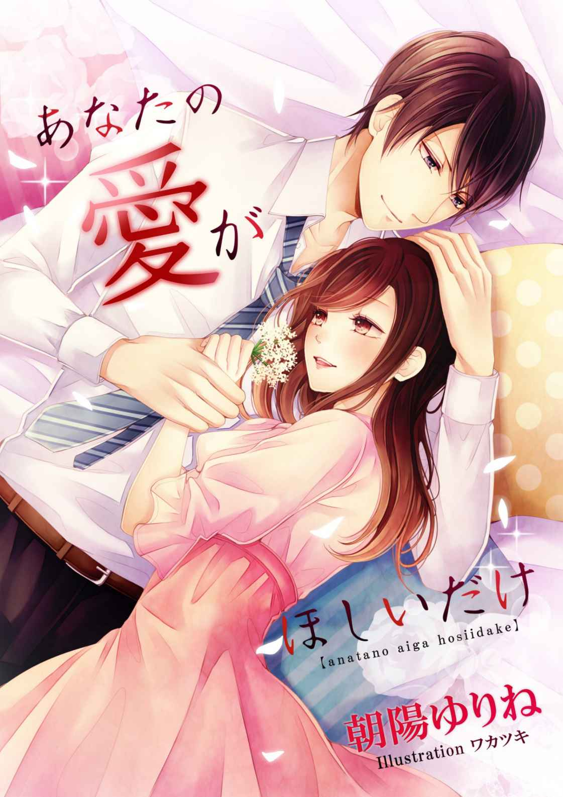

| あなたの愛がほしいだけ (ヘリアンサス文庫) | |
| 朝陽ゆりね | |
| 株式会社グリシーヌ夕霧文庫 (2017) | |

あなたの愛がほしいだけ
［著］朝陽ゆりね
［イラスト］ワカツキ
※この作品は縦書きでレイアウトされています。
※この作品はフィクションです。実在の人物、団体、事件とは一切関係ありません。
好き。
いつからかわからないけど、ずっと秘めている想い。
永遠に秘め続ける想い。
けっして、口に出すことはない。
この愛は許されない。
だって、半分、血がつながっているんだもの。
私を愛してくれることはない。
わかっているけど、この気持ちを止めることはできない。
好き。
弓弦
お兄さん――
真新しい制服を着て、草薙
セリは高校の正門をくぐった。
この学校の制服はブレザーで、学年によってタイの色が違う。今年の一年生はエンジ色だった。セリの胸元にもエンジのタイが結ばれている。
二時間にわたる入学式が終わると、新入生たちは校庭に貼り出されたクラス分けの表示を確認し、それぞれの教室に向かった。
セリの名は一年五組にプリントされていた。ようやく自分の教室にたどり着き、黒板に貼られている座席表を見ると、自分の座席についた。
「神谷憲子
です。よろしくね」
いきなり前に座る少女が振り返り、そう告げた。どうやら一番前と二番目の子がおしゃべりに夢中で、三番目に座っていたノリコは手持ち無沙汰だったようだ。後ろに座る子が来るまで待っていたのだろう。
卵形の輪郭にパチッとした目、マッシュ系ショートヘア、日に焼けた浅黒い肌、はっきりとした口調、明るく元気な女の子であることはその容姿からよくわかった。人懐っこい笑顔は、人見知りしないタイプだと思わせる。
「草薙セリです。こちらこそ、よろしく」
セリはノリコの元気さにやや気圧されたような口調で、おずおずと言った。ノリコはさっそくおしゃべりを始めた。
「セリってどんな字を書くの？」
「字？ カタカナ、だけど」
「そーなの？ いいなぁ、素敵ね」
セリは驚いたように目をパチパチと瞬いた。
「そう、かな。私はヘンだと思っているけど」
「ヘン？ どこが？」
一瞬セリの顔に苦笑が浮かんだが、すぐに消えた。
「小さな時から、パセリだとかセロリだとか言われていたから。中には、『セリ、ナズナ、スズシロ』って、七草並べる子もいて」
するとノリコが「あははは！」と声を立てて笑った。
「そうね、そーいうこと、言う子っているよね。わかるわかる」
「だから......お前は草みたいだって言われているような気がしたから」
「そんなことないよっ。素敵だと思うよ。だって珍しいじゃない。私なんて、なーんの変哲もない〝憲子〟だもん。もっと珍しいというか、カッコいいというか、個性的な名前をつけてほしかったよ。ねぇ、セリって呼んでいい？」
「いいよ」
「じゃ、私のことも、〝ノリコ〟でいいから」
「うん」
ノリコの勢いにすっかり呑まれてしまったセリは、困ったような笑みを浮かべる。ノリコのおしゃべりは止まらなかった。
「ねぇ、クラブ、入るの？ 一緒に入らない？」
「クラブ？」
「テニスとか、どう？ 私、中学の時は軟式だったの。一緒に入らない？」
ノリコは座ったまま腕だけ動かし、素振りの真似をした。日に焼けている肌はテニスによるものだとすぐにわかった。
「お金の負担のないクラブじゃないと。ラケットとかウェアとか、高そうだし」
「そういうの、出してもらえないの？」
セリの顔にまたしても困ったような笑みが浮かんだ。
「うん。ちょっと、言いにくいの」
「そうなんだぁ。じゃ、他のクラブを考えなきゃね」
「神谷さんは入ったら？ 続けたほうがいいんじゃないの？」
「ノリコでいいって。入学前に調べたんだけど、ここの軟式テニス部、あるだけって感じでさ、一人ででも入りたいってレベルじゃないの。お金のかからないクラブかぁ。けっこう難しいなぁ」
「私に合わせなくてもいいと思うけど」
思わず出た言葉に、ノリコがムッとしたような顔をして口を尖らせた。
「私と一緒はヤなの？」
「そんなことないよっ」
「だったら同じクラブに入ろうよ。ね？」
「......うん」
「じゃー、約束！」
ノリコはニッコリと屈託なく笑った。これが二人の出会いだった。
チャイムが鳴った。教室に入ってきたのは長身の男性教諭だった。細い銀縁のメガネに白衣。理系の教諭であることは一目瞭然だ。やや神経質そうに思えるのは学科のイメージもあるかもしれない。黒板に『森希一
』と書き、物理担当と自己紹介をした。
クラスメイト全員の自己紹介や、注意事項、明日と明後日のオリエンテーションの説明を終えると、この日は解散となった。
セリはノリコと一緒に教室を出て、校門に向けて歩いていた。その間にも、運動部文化部問わず、多くのクラブから勧誘を受ける。華道部、茶道部、料理部、女子部員がメインのクラブは勧誘にも熱がこもっていた。中にはメジャーな運動部のマネージャーの勧誘もあった。
「マネージャーって、誘わなくても希望、多そうなのに」
思わず零したセリの言葉に、ノリコは可笑しそうに笑い出した。
「なに？ なにかヘンなこと言った？」
「うぅん、そうじゃないけど。勧誘はさぁ、セリが可愛いからじゃないかなって」
「可愛い？」
ノリコは意味ありげに微笑むと、話題を変えた。
「マネージャーはお金、かからないよねぇ」
「確かにそうね、うん、そう思う。あの、神谷さん」
「ノリコでいいって。何度言わせるの」
「ごめんなさい、つい」
申し訳なさそうに謝るセリの顔には少し怯えたような雰囲気がある。ノリコはセリの気持ちを目ざとく感じ取ったようで、屈託のない笑顔で答えた。
「そんなに気なんか遣わなくていいよ、同い年なのに。それで、なに？」
「......私、そんなに気を遣ってるかな？」
「じゃない？ さっきの返事も、顔、強張ってる感じがしたし。とにかく気は遣わなくていいから」
驚くセリにノリコはまたしても笑った。元気いっぱいの笑顔は眩しいほどだ。そんなノリコに向け、セリが口を開きかけた時、携帯のバイブ音が響いた。
「気にしなくていいよ。出て」
ノリコの気遣いは届いていない様子だ。セリの顔は輝いていて、慌てながらも嬉しそうに携帯の通話ボタンを押していた。
「もしもし」
『セリ、今、どこにいる？』
「学校」
『まだ中にいるのか？』
「はい」
『ちょっと話がある。迎えに行くから、正門の前にいろ。近くにいるからすぐだ』
「は、はいっ」
電話はすぐに切れた。茫然とした様子で携帯を見つめているセリの顔をノリコが覗き込んだ。
「セリ？ 大丈夫？ なにかあったの？」
「............」
「セリ」
「はい！」
慌てたように礼儀正しい返事をするセリにノリコは驚いて口を噤んだが、今度は大袈裟に笑い出した。
「えっ？ えっ？ なに？ どうしたの？」
「だって！ あはは、セリ、すごく緊張してて、可笑しいっ。あはははは！ ねぇ、今のカレシ？」
「カレ！ ち、違うっ！」
「違うの？ すっごく嬉しそうだし。顔も赤いし」
ノリコに頬をツンと突かれると、セリは真っ赤になって両手で両頬に触れた。
「赤い
!?
そんなに赤い？」
「うん、真っ赤」
「うそっ！」
「それで、カレシじゃないの？」
「違うよっ。兄なの！」
「お兄ちゃん？」
「そ！ 兄なの。十歳年の離れた兄がいて――」
セリの顔がますます赤くなった。耳まで真っ赤だ。
「仲いいんだねぇ。お兄ちゃん、なんて？」
「話があるから迎えに行くって」
「そーなんだ。じゃ、ここでお別れかな」
「う、うん」
「また明日ね」
「うん、また明日」
セリはノリコに向けて手を振った。
正門前で別れて間もなく、見慣れた車がやってきた。運転席の窓が開き、兄の弓弦が顔を出す。細面の顔立ち、鼻筋はスッキリ通り、目元はキリッとしていて凛々しい。が、表情は穏やかで、上品さと優しさを感じさせる、そんな雰囲気の男だった。
「セリ、乗って」
「はいっ」
慌てて助手席に乗り込むと、シートベルトをして弓弦の顔を見た。目が熱を帯びたようにトロンとし、明らかに見惚れている。運転している弓弦はセリの様子に気づかない様子で、前を見ながら他愛もない世間話をしていた。セリは弓弦の話に相槌を打ちながら、おとなしく聞いていた。
しばらく走ると、高級ホテルの駐車場に入った。ドアマンに鍵を預け、そのままホテルのエレベーターに乗り込む。弓弦は最上階のボタンを押した。
「フレンチで予約したけど、やっぱり和食のほうがよかったか？」
「うぅん。なんでもいい。なんでも好きだから」
「そうか。セリは和食が好きだろ？ 実は、和食で予約を入れようとしたら満席だったんだ。だから次に一緒に行くことがあったら和食にするから」
セリは真っ赤になって口を開けると、なにも言わず恥ずかしそうに下を向いてしまった。
「セリ？」
「ありがとう。嬉しい」
「セリが望めばいつでも連れて行ってやるよ」
弓弦はセリの肩に手を置くと、開いたエレベーターから出るように促し、レストランに導いた。セリは手を置かれた肩から体中に熱が広がっていくような気がした。
（弓弦お兄さん――）
言葉にできない想いがこみ上げてくる。恥ずかしくて顔を上げることができず、弓弦について歩くだけだった。
心の中では、二文字の言葉がグルグルと回る。
（好き、好き――）
中に入ると、弓弦は慣れた様子で予約していたオーダーの確認をし、セリに笑顔を向けた。
「高校入学、おめでとう」
「ありがとうっ」
「高校の制服姿を見ると、なんだか急に大人になった感じがするなぁ」
「そ、そう？ 大人っぽく見える？」
大人という言葉はセリを喜ばせた。学校の同級生たちからも子ども扱いされ、自分でも子どもっぽい外見だと思っている。少しでも大人っぽくなりたかったからだ。
「考えすぎかもしれない。でもさ、やっぱり違うだろ？ 俺なんか高等部に入ったら、大人だと思って無茶したよ。親に内緒でバイトしたり、いきなり一人旅に出たり」
「バイトって、お金に困ることはないんじゃ......」
「あぁ。だけど俺、父さんへの対抗心は人一倍強かったから、親から小遣いはもらいたくなかったんだ。でもまっ、すぐに見つかって、母さんから大目玉を食らったからやめたけど」
「そうなんだ」
「年を偽ってバーとかクラブとか行ってさ。大人の世界に踏み込みたくて悪いこともやったよ」
セリは母である絢
に叱られて神妙な顔をしている弓弦の姿を想像し、思わず「ふふふ」と微笑んだ。一方、弓弦もセリがなにを考えているのか察している様子で、目元を弛めてセリの笑顔を眺めている。口元にはわずかな笑みが浮かんでいて、彼がセリとの時間を楽しんでいることを感じさせた。
「セリを見てるとホッとする」
「なに？ 聞こえなかった」
思わずこぼれた言葉だったのか、弓弦は聞き返されると慌てたように目を瞬いた。照れを隠すような咳払いをすると、ジャケットの内ポケットから封筒を取り出してセリに渡した。
「セリ、渡しておく。使ってくれ」
セリは封筒から中のものを取り出した。銀行の預金通帳とキャッシュカード、印鑑、クレジットカードが出てきた。
「セリの名前で口座を作った。高校生になったんだから金もいるだろう。母さんは了解済みだ。気にしなくていいから」
セリは驚いたようにしばしそれらを見つめた後、弓弦に向けた。
「でも」
「バイトはダメだ。草薙の娘が金ほしさにバイトをする、それが――言葉は悪いが、腹違いの子だって世間に知れたら、母さん、激怒するだろうから」
「............」
「煙たがっているくせに、そういうところだけは気にするからな。困ったもんだ。俺が通帳に金を振り込むから、気にせず使え。クレジットカードは万が一の時のためだ。こっちは俺の口座から落ちるから、心配することはない」
「今でも間に合ってる。心配してもらえるだけで十分だから」
「本とか、買うだろ？ 服なんかも。友達との付き合いもあるだろうし」
テーブルに置かれた一式を見つめて黙り込むセリに、弓弦は優しく話しかけた。
「セリ、悪いのは父さんだ。どんな事情があったって、生まれてきた子に罪はない。お前は血のつながった俺の妹で、家族だ。きちんと教育を受けさせてやるし、堂々と草薙の名を名乗って嫁に行けばいいんだ」
セリの体がビクンと震えた。「嫁」という言葉に心と体が反応したが、気づかない弓弦はそのまま続ける。
「お前のことだから、大学へも行かずに働こうなんて考えてるんじゃないか？ それも許さないからな」
「ダメなの
!?
」
「やっぱりビンゴか。大学には行け。俺たちから離れたいなら、尚のこと行かないといけない。日本はまだまだ学歴社会だ。履歴書で人間の価値が決まるわけじゃないが、少なくとも就職じゃ学歴は重要だ。たった四年のことで不要な苦労をすることはない。幼稚園からずっと持ち上がりで大学を出た俺が言うのもどうかと思うけどさ」
「............」
「どうしても家にいたくなかったら、地方の大学に行くか？ 関西や名古屋の大学に行くってのも手だ。一石二鳥だろ？」
下を向き、黙り込むセリを弓弦は見守っていたが、やがて手を伸ばしてセリの肩に優しくポンポンと触れた。顔を上げるセリに穏やかな笑顔を向けて続けた。
「今日、高校生になったんだ。受験なんてまだ先の話だし、ゆっくり考えたらいいよ。俺はお前の味方だから」
「......うん。ありがとう」
声に涙の気配があったが、セリは気づかれないように微笑むと、プレートに載っているサラダを口に入れた。しっかりとドレッシングがかかっているはずなのに、味など感じなかった。
弓弦と別れたセリは、電車に揺られながら草薙家にやってきた頃を思い出していた。
母の京子と祖母の昌子との三人暮らしだった。消防士だった祖父は、京子が生まれて半年が経った頃、職務中に亡くなったと聞いている。殉職として見舞金や職場の仲間からのカンパがあったものの、幼い頃の京子は体が弱く、病院通いをしていたので、母と子が十分に暮らしていけるものではなかった。
その京子が十九歳の時に妊娠し、未婚の母としてセリを出産した。セリは父の顔はもちろん、名も知らずに育った。何度も聞こうとしたものの、「お父さん」という言葉を口にすると、母も祖母も悲しい顔をするので聞けずにいた。
そんな生活が一変したのは七年前だった。セリが九歳の時、京子が交通事故死をしたのだ。運転していたのは草薙孝一郎という男であり、この男が父だと教えられたのは、二人が事故死をしてから一年後だった。
京子が妊娠した時、二人は別れていたと思っていた昌子は、亡骸の前で思わず泣きながらこぼした。その言葉をセリはしっかりと覚えている。
――京子、どうして別れたはずの男と会っていたの。
その時は、言葉の意味も祖母の心もわからなかったが、祖母の様子にただならないものを感じた。
昌子は草薙家と関わりたくないという思いから、草薙との関係を隠そうとした。しかし孝一郎の職場の机から、文書の下書きのようなものが見つかったことによって、草薙家の者たちの知るところになった。そこには『西野京子が産んだ子は私の子どもである』と書かれていたのだ。これによって残された子どもをどうするべきか、草薙家の代理人が何度も訪れたが、昌子は話し合いには応じなかった。あくまで「西野セリ」として育てると引かなかった。
京子は看護師に憧れ、大学の看護学部に進学するための学費を工面しようと、当時高校生だったにもかかわらず、年齢を偽ってラウンジで働いていた。孝一郎とはその時に知り合い、十九歳で妊娠。仕事も、せっかく苦労して入った大学も辞め、身を隠して暮らすようになった。
頑として話し合いに応じなかった昌子だったが、翌年、セリを連れて草薙家を訪れた。最初は苦虫を噛み潰したような顔をしていた草薙家の者たちは、昌子から渡された封筒の中身を確認して顔色を変えた。
昌子は一通りの説明をすると、畳に額をつけて懇願した。
――どうか、この子をお願いします。娘が生まれて間もなく夫が亡くなり、食べていくのがやっとで貯金もほとんどもありません。自分に充てるお金さえ、ろくにない身です。勝手を言って申し訳ありません。ですが、頼れるのはそちら様だけです。どうかご主人の血を引くこのセリを、成人するまで見てやってください。お願いします。セリちゃん、あなたもお願いしなさい。
――なんて？
――お願いしますって、頭を下げるのよ。
――お願いします。
言われるままに頭を下げる。間もなく、昌子はセリを抱きしめた。
――セリちゃん、しばらくこのお家でお世話になるのよ。おばあちゃんが迎えにくるまで、いい子にして待ってるの。わかった？
――どうして
!?
ヤだ。セリも行く！
――すぐに迎えにくるから。お願い。
そう言い残して去ってしまった。半年後、迎えを待っていたセリに伝えられたのは、祖母の死だった。
あの時、草薙家の人に手渡されたのは診断書だった。もう永くないことを示すことによって、セリを引き取ってもらおうとしたのだ。診断書に書かれていたのは、乳癌という病名と、その進行状況だった。
詳細がセリに伝えられたのは、中学に入った時だった。弓弦がもう真実を受けとめることができるだろうと、当時のことをすべて語ったのだ。
弓弦は何度か昌子を見舞い、こうなった経緯を聞いたという。
不調を感じたのは、京子と孝一郎が事故死したひと月ほど前だったが、その時は医者からはなにも聞かなかったらしい。その後、二人が亡くなり、忙しい日々が続いた。仕事を掛け持ちして働いていたものの、あまりの辛さから一年振りに病院へ行くと、乳癌であることと、前回の診察の際に娘である京子を呼んで告知していたことを聞かされた。
慌てて身辺を整理し、セリを草薙家に連れて行った。昌子には富山に住む実の兄がいたが、兄の家族に引き取られるのも、草薙家に行くのも、苦労はたいしてかわらないだろうから、将来を考えれば経済的に裕福な草薙家のほうがいいだろうと判断したと、泣きながら弓弦に話したそうだ。
セリは引き取られてから半年後、西野セリから草薙セリになり、名実ともに亡き草薙孝一郎の娘として生活することになった。
家に帰ると、家政婦の島崎がセリを迎えた。
この家には家政婦が三人いる。島崎、市川、大島の三人は、いずれも六十を超えたベテランだった。ただし交代制なので全員が揃うことはない。
「入学式、どうでした？」
「さっそく友達ができました」
「よかったですね。素敵な男の子とか、クラスにいましたか？ セリさん可愛いから、すぐに恋人ができたりしてね」
「恋人？」
「えぇ。色も白いし、鼻筋も通っていて綺麗な顔立ちでしょ。少し目尻が下がっているのがね、可愛らしくて優しい感じがしますからね。それにセリさんの髪の毛。艶があってとても綺麗じゃないですか。男の子はそういうの、好きみたいだし」
セミロングの髪をトップとサイドだけ後ろで束ねている。癖のないストレートの髪は、ポニーテールにするとすぐに弛んでしまうのだ。だが、髪の毛はセリにとって数少ない自慢だった。母や祖母からよく綺麗だと褒めてもらい、喜んだものだった。
「ですからね、告白されて、すぐに恋人ができるんじゃないかって思うんですよ」
島崎は微笑んでから話題を変えた。
「そうそう、今夜、奥様も晴美さんもお出かけで、遅くなるとのことです」
「そうなんですか。わかりました」
「今夜はセリさんの好きな和食にしましょうね。なにがいいですか？ やっぱりお刺身にします？」
セリの和食好きは、当然ながら家政婦たちは承知している。セリの祖母である昌子が富山の海沿いの町出身ということもあって、三人で暮らしていた時は食卓に魚がのぼることが多かった。そのせいか、セリは和食が好きになり、特に魚を好んだ。とはいえ、この家の者たちは洋食好きで、夕食は洋食が多かった。
島崎の心遣いにセリは喜び、満面の笑みを浮かべて礼を述べた。
「ところで、弓弦さんとのランチはいかがでした？」
突然出てきた弓弦の名に、セリの顔がわずかに赤く染まった。
「フランス料理のコースをいただきました。とっても美味しかったですっ」
「電話がかかってきて、入学祝いでご馳走したいから昼の用意は不要だっておっしゃって。嬉しそうでねぇ」
「ホ、ホントですか
!?
」
「えぇ。セリさんが可愛いんでしょうね。なんだかんだ言っても妹であることは間違いないんだし」
それまで嬉々とていたセリの顔が凍りついたように固まり、引き攣った。島崎はもちろん気づいていない。そもそもセリの心を知っている者など誰もいない。セリが半分血のつながっている兄を想っていることなど。
「晴美さんは、ほら、けっこう気が強いでしょ。だから子どもの頃は兄妹ゲンカが多かったんですよ。それに比べてセリさんはおとなしいから、対照的で、可愛いんでしょうねぇ」
「............」
「晴美さんはなかなか納得できないでしょうけど、奥様は違います。あんな態度を取られていますけど、あきらめというかなんというか、セリさんのことは認めていらっしゃるようですし、気にすることはないと思いますよ」
「......そうなんですか？」
今日の島崎は珍しく饒舌だった。こんな話は今までしたことがない。
「奥様と旦那様って、ご結婚当時からあまり仲がよろしくなかったみたいですからねぇ。旦那様、晴美さんが生まれた頃から毎晩お帰りが遅くなって、帰ってこない日も増えて。いつかなにかあるだろうと周りは思っていたみたいだし。だから奥様はセリさんのことがわかった時も、腹が立つというより、やっぱりって思いのほうが大きかったんじゃないでしょうかねぇ」
「............」
「ショックだったのは、セリさんのお母さんが十代だったってことだと思いますよ。でも、セリさんにはなんの罪もないですよ。子どもは親を選べないのですから」
「......えぇ、そうですね」
選べない――その現実は大きかった。どれほど想っても、弓弦は兄なのだ。たとえ半分でも、血はつながっているのだから。
思わず、ため息が出た。
「あらまぁ、ごめんなさい。こんな話、聞きたくないですよね」
島崎はセリのため息の理由を勘違いしたようだ。
「そういうわけじゃ......」
「なんというか、セリさんも高校生になったのだし、これからドンドン世界が広がっていくでしょ。だから、あまり気兼ねせず、好きなことをして、もっともっと楽しんでいただきたくて。ずっと拝見していて、なんだか気の毒でね」
「そんな......私は大丈夫です。実の家族でも仲のよくない人たちもいるんですもの。私は恵まれてるって思ってます。でも、島崎さん、そんな頃からここで働いていたんでしたっけ？」
セリの質問に島崎は「いぃえぇ」と右手を振った。
「けっこう長く勤められた方から聞いたんですよ。私は弓弦さんが高校生になられてからです。三人の中では一番古株の大島さんでも、弓弦さんが小学生になられてしばらく経ってからですよ」
「そうですよね。聞いていたのと違うからビックリして」
「先々代様も家を空けることの多かった方で、親子の仲はよくなくて、そのくせ似てるって。弓弦さんも旦那様と仲はよろしくなかったから、ここの血でしょうかねぇ。でも旦那様、縁談が持ち上がった時は喜んでいらっしゃったんですって」
「お義母さん、綺麗だから？」
「そうでしょうね。上品ですし。でも相性が合わなかったんでしょうかねぇ。残念なことですよ。セリさんは素敵な方を見つけて、幸せになってくださいね」
ニッコリと優しく微笑む島崎の顔を見ると、なんとも言えず悲しくなった。それを悟られないように微笑み返し、セリはジュースを片手に自分の部屋に向かった。
ベッドに置いているクマのぬいぐるみを見つめる。九歳になった時、母と祖母から贈られた誕生日のプレゼントだった。そっと手に取り、頭を撫でる。
（素敵な人はすぐ傍にいるよね。でも......幸せにはなれない。どうして私と弓弦お兄さんは兄妹なんだろう。他人じゃないんだろう。こんなに好きなのに――）
その時、机の上に置いている携帯がブーンと震えた。見るとノリコからのメールだった。
『クラブ、面白いのがあった。明日、話すね』
勧誘された中にノリコが「面白い」と思うものがあったのだろうか？ セリはしつこく勧誘してくる部員たちを思い出した。
（面白いクラブ、かぁ。なんだろう？ でも、ノリコと一緒にクラブに入ったら、家にいる時間も減るし、少しは楽しい高校生活が送れるのかなぁ）
メールを見ながら、そんなことを考えるセリだった。
翌日、学校に行くと、さっそくノリコが話しかけてきた。
「クラブなんだけど、図書部ってのを見つけた」
「図書部？」
「そ。図書室の本を読んで、感想を発表するだけ。部費は月、百円だって。ちょうどよくない？ セリ、読書しない人？」
「うぅん、本は大好き」
「だよね？ そう思ったんだ！ いや、反応鈍いから、私の勝手なイメージ暴走かと思ったよ。どう？ 図書部」
「ノリコは図書部でいいの？」
「私も本、好きだからオッケー」
ノリコがニコッと笑った。それから「お節介なんだけど」と続けた。
「セリ、可愛いからさぁ、目立つクラブとか、人気のある人のいるトコに入ると、なにかありそうでさ」
「可愛い？」
ノリコがクスクスと笑う。
「自分が可愛いのに気づいてないんだ。クラブの勧誘、すごかったじゃない？ マイナー系はわかるけどさ、ほっといても人が集まりそうな体育会系のマネージャーとか。しつこく勧誘してきたの、みんな男子生徒」
「そうだったっけ？」
「華奢で、ポワッとしてて、可愛いからじゃない？」
「可愛いなんて今まで言われたことないよ」
「言われなかっただけでしょ？ まだ顔合わせて二日目だからわかんないだろうけど、私、かなり性格キッツいからさ。一目見てセリのこと、私と違って頼りなさそ～可愛い～って思ったもん。なんか、ほっとけないって感じ？ で、図書部でいい？」
「うん。いいよ」
セリが了解の返事を口にした時、他のクラスメイトが声をかけてきた。
「なんのクラブに入るの？」
席の近い者は、やはりおのずと仲よしになる。みなそれぞれに入るクラブを決めたようで、人のことが気になる様子だ。ノリコが「図書部」と答えると、みな驚いたような顔をした。
「草薙さんはわかる気がするけど、神谷さんは意外」
「なに、それ～！」
爆笑が起こった。
「だって、体育会系って感じだもん」
「そりゃそうだけど」
プッと頬を膨らませるノリコに向け、ますます笑いが起こった。
ノリコはムードメーカーだ。向日葵のような印象を与える。そこにいるだけで人の視線を集める明るさを持っている。そんな明るさをセリは眩しそうに見ていた。と同時に、羨ましくも感じていた。
愛人の子、その事実がセリをずっと苦しめてきた。草薙家に引き取られてから、周囲にそんな目で見られ、敬遠されてきたことがセリの心を暗くし、消極的で内向きの性格に変えてしまった。今では生い立ちを知られることを恐れ、怯えるばかりで、わざと人との距離も置いている。
「本、大好きなのよ、これでも。見えないかもしれないけど」
「見えない。ガサツで」
横合いから、男子生徒がツッコミを入れる。セリの横に座っている近藤哲郎だ。いかにも調子のよさそうな男子だった。
「うっさい！ どこがガサツよ！」
「後ろから見てたら落ち着きないんだもん」
「見んな！」
ノリコのツッコミに哲郎は笑った。
「見たくて見てるわけじゃないし。席替えしたら見なくて済むのにな～って感じ」
「言えてる！」
今度はノリコの隣に座る男子が言った。
こちらは工藤秀一。小柄で落ち着いた感じがする。話し方がひょうきんで面白そうな雰囲気の哲郎とは対照的だった。
「じゃあ、見ないようにすればいいのよ」
「無理だよ」
二人がハモるように言った。
「黒板、見れないだろ」
「先生の顔も見れないよなぁ」
途端に周囲から爆笑が起こった。みなで盛り上がっているとチャイムが鳴り、担任の森が入ってくる。今日と明日はオリエンテーションだ。セリは学校の案内図を片手に、ノリコと共に廊下に並んだ。
実験室や美術室などの教室を回り、非常出口や緊急時の逃避経路を確認してこの日は終わった。明日は健康診断で、午後からは体力測定だ。明後日からは本格的に授業が始まる。
ホームルームが終わると、セリとノリコは「図書部」に向かった。
「失礼しまーす」
声のトーンを落としてノリコが挨拶をする。一斉に注目された二人だったが、思わず緊張で身を固くしたセリとは異なり、ノリコはいつも通りの元気さで挨拶をした。
「入部希望なんですが」
その言葉に、中にいた六人の生徒たちが驚いて立ち上がり、ガヤガヤと集まってきた。
「二人で入部希望です。神谷憲子です、よろしくお願いします」
「草薙セリです、よろしくお願いします」
頭を下げて挨拶をすると、「新入部員がきた！」と叫ばれた。
セリとノリコは大歓迎の中、図書部員に加えられた。
「島崎さんに聞いたけど、図書部に入ったんだって？」
夕食の時、弓弦がいきなり質問をしてきた。セリは驚いて、口に入れようとしていたご飯を落としそうになった。
「うん」
「また、地味なトコに入ったんだな」
「本人が地味だからお似合いでいいんじゃないの？」
突っ込んだのは姉の晴美だ。セリより六つ年上の、大学四年生だ。
「俺はクラブの話をしているだけで、性格や人柄の話をしているわけじゃない。それに読書は一見地味に見えるかもしれないが、高尚でいい趣味だと思うが。お前も流行ばかり追ってないで、もう少し落ち着いたらどうだ。来年、社会人だろ？ 就職だって、知り合いに頼んではみるが、お前自身に力がないと頼んだところで採用なんかされないぞ」
「お兄ちゃん！」
「真実だろ？」
晴美はグッと唇を噛みしめると、弓弦ではなくセリを睨みつけた。
「悪かったわね！ 流行ばかり追ってる落ち着きのない女で！」
「どんなに着飾っても、言葉遣いや表情なんかでその人間の内側はすぐに伝わる。内側のモノが表面に滲み出るもんだ。それに人はよく見ている。お前が平気で人にキツいことを言う人間だって、周囲の人間は知っているかもしれないぞ。だったら着飾ってよく見せても無駄じゃないのか？」
「ひどい！」
「正論だと思うけどな」
「やめなさい」
絢が静かだが、鋭い声で制した。ダイニングに沈黙という緊張が走る。やや高い声には有無を言わせぬ厳しさが含まれており、セリはもちろんのこと、弓弦や晴美も黙り込んでしまう迫力があった。
「晴美はいつもセリさんの話になると、ムキになって弓弦に食ってかかるでしょう。いい加減大人になりなさい。来年、社会人になるのよ」
「だけど」
「六歳も離れているのに、みっともない」
母親に睨まれ、晴美は顔を背けた。
「弓弦もです。晴美を煽るようなことを言うのはおやめなさい。あなたがなにも言わなかったらいいだけでしょう」
「......気をつけるよ。悪かった」
弓弦が謝ると、絢は食事を続けた。
「図書部って、本読んで終わりか？」
沈黙が辛くなったのか、弓弦は再びセリに話しかけた。セリは困惑したように、絢と晴美を見たが、弓弦に向けて答えた。
「感想文を添えて、本を紹介し合うそうなの。読書コンクールなんかにも応募するみたい」
「そうか」
優しく微笑まれ、セリは照れ臭そうに微笑み返した。もう少しクラブの説明がしたかったものの、絢と晴美の前ということもあり、それ以上は言わなかった。だが、弓弦が少しでも自分に興味を持ってくれたことが嬉しかった。
高校生活は順調に過ぎていった。
クラスメイトとも仲よく過ごしていたし、部活も楽しかった。ノリコの行動力に引っ張られるようにしてセリの行動範囲も少しずつ広がっていた。ノリコが持参するファッション誌を見て髪型を変えてみたり、人気のファストファッション店に出向いて服を買ったりもした。
そんな高校生活にも馴染んだ七月のある日。ノリコと図書室で、目前に控えた期末テストの勉強をしていたセリは、忘れ物を取りに教室へ向かった。扉を開けて中に入ろうとして足を止めた。そこには秀一と隣のクラスの女子がいた。綾瀬という名の、背が高くスタイルもよければ顔もいいことで有名な女子生徒だ。
セリは二人の会話の邪魔にならないよう静かに自分の席に向かい、ノートを手にして立ち去ろうとした。それを止めたのは秀一の鋭い声だった。
「待って、草薙、ちょっと来て」
なにもわからず歩み寄ったセリの腕を秀一が取り、綾瀬に向けて「この子」と言うなり、いきなりセリは綾瀬に頬をひっぱたかれた。
「いたっ」
「おい！ なんてことするんだ！」
セリがひっぱたかれた頬を押さえながら、目に涙を溜めた綾瀬の顔を呆然と見つめると、彼女はサッと身を翻し、教室を飛び出して行ってしまった。
「大丈夫か？」
「............」
「草薙！」
「あ、あの」
頬がジンとする。セリは頬に手をやったまま、秀一に視線をやった。
「ごめん。でも、嘘じゃないんだ」
「......なにが？」
「コクられたんだけど、好きな子がいるって断った」
「なんの、話？」
「だから――好きな子のこと」
秀一が真っ直ぐセリを見つめる。
「それ――」
じっと見つめる秀一の目に思わずセリは口を噤んでたじろいだ。なにが言いたいのかを察した時には、困惑が思考を完全に奪っていた。
「あの、草薙は、その、好きなヤツとか、いるわけ？」
「好きな？」
「うん。だから、好きな人」
好きな人――その言葉は兄である弓弦の顔を思い起こさせた。セリは下を向き、けっして実らない、言葉にして言うことすら許されない苦しい恋に押しつぶされそうになりながら、制服の裾を握りしめつつ小さく頷いた。
「――――」
「ごめ――」
ごめんなさい――そう言おうとして言葉が詰まり、涙が零れ落ちた。この恋は許されない上にけっして人に言うことができない。だからといって、秀一に嘘は言えなかった。
「ごめん。迷惑かけた」
秀一は頭を下げつつ謝った。セリは謝られてからようやく顔を上げ、秀一の顔を見つめた。悲しそうな顔をしている秀一に胸を痛めながら、必死で首を左右に振った。
「はっきり断ったのに引かなかったから困っていたんだ。そこに草薙が入ってきて、つい――ごめん。同じクラスだし、席近いし、現状維持でお願いしたいんだけど」
「私、こそ――」
「じゃ、さっきのはなかったということで。綾瀬には謝るように言っておく」
秀一はもう一度頭を下げると教室から出て行った。
セリはしばし立ち尽くしていたが、自らも教室を出て図書室に向かった。
（工藤君が......私を？）
ショックは大きかった。話したこともない相手にいきなりひっぱたかれたのもショックだったが、友達だと思っていたクラスメイトに告白されたのはもっとショックだった。その告白に報いてあげられないこともそうだ。
とぼとぼと廊下を歩き、セリは図書室に戻ってきた。
「セリ、遅かったね」
「......うん」
ノリコが怪訝な顔をしてセリの顔を覗き込む。
「どうしたの？」
「う、ん。ちょっと」
「セリ？」
セリの瞳から涙が溢れだした。
「わ！ ちょっと、セリ。ここじゃマズいよ。こっち！」
ノリコはセリの手を握ると、図書室を出て人気のない廊下の端の階段に連れてきた。そこに並んで腰をかける。泣くセリをノリコは我慢強く待ち、少し落ち着いた頃になって、やっと優しく声をかけた。
「どうしたの？」
セリは視線を足元に落としたまま話し始めた。
「あの、ね、ノリコ、あのね」
しゃくり上げ、取り出したハンカチで目を押さえる。
「ノリコ、好きな人、いる？」
「好きな人!?
えーっと」
「その恋が、実らないってわかってて、他の人から、告白されたら、どう、する？」
ノリコの顔から驚きが消え、真剣なそれに変わった。声のトーンを落とし、ゆっくりとセリに向けて口を開いた。
「どうするかはなってみないとわかんない。絶対実らないなら、その人のことをあきらめて、告白してくれた人と付き合ってみるのも一つの方法だと思う。その人を忘れられるなら、そういうのもありだと思うもん。付き合ってるうちに、好きになるかもしれないし。でも......やっぱり好きな人とうまくいきたいと願うよね」
セリは泣きながら「うん」と頷いた。
「どうしたの？ 教室でなにかあったの？」
「私、好きな人が、いるの」
「――――」
「絶対、実らない。でも好きで、どうしようも、なくて。好きで好きで――。でも、さっき、他の人から好きって、こく、告白されたの。好きな人、いるって聞かれて、頷いたら、ごめんって謝られて......」
「そっか」
「好きな人がいるのに、他の人と付き合うことはできない。でも、申し訳なくて。悲しそうな顔が......私、傷つけてしまった」
ノリコはしゃくり上げるように泣くセリの背中をそっとさすった。
「それは人によって違うよ。それでも付き合いたいと思う人もいれば、他に好きな人がいるなら嫌だって思う人もいるもん。セリは自分の気持ちに素直でいたらいいと思うけどな」
「ノリコ」
「そう思わない？」
ノリコに励まされ、ようやくセリは顔を上げた。
「ね？」
「......うん」
「人の気持ちだけは誰にもどうすることもできないもん」
「うん」
ノリコはニコリと微笑んだ。
「ねぇ、今度、セリの好きな人が誰か教えてよ。その代わり、私も好きな人、教えるから」
「ノリコ」
ノリコの笑顔は眩しかった。
部室での勉強を終え、ノリコと一緒に学校を出たセリだったが、携帯を図書室に忘れてきたことに気がついた。
「また忘れ物！ 取ってくる。ノリコ、先に帰ってて」
「了解」
セリは手を振って図書室に向かって歩き出した。
「セリ」
「なに？」
振り返るセリに、ノリコが満面の笑みを浮かべつつ叫んだ。
「元気出しなよ！」
優しいノリコの思いやりに、セリの顔にも笑みが浮かぶ。
「うん、ありがとう！ また明日ね！」
そう答え、大きく手を振って別れた。
忘れていた携帯はクラブの部長が預かっていて、すぐに渡してくれた。セリは礼を言うと、踵を返し、図書室を出た。
「草薙さん」
「はい」
振り返ると、綾瀬が立っていた。その後ろには彼女の友達と思われる女子生徒が二人いる。セリは三人に囲まれる形になった。
「あ、あの」
「あんた、工藤君のこと、どう思ってるの？」
「どうって......」
「さっきのこと。とぼけないでよ。付き合ってるの？」
セリは力いっぱい首を左右に振り、「違う」と否定した。
「ホントに？」
「知らなかったの。聞いて驚いた。ホントよ、信じて」
綾瀬はますますギリリとセリを睨んだ。
「工藤君に想われてるからって、思い上がってるんじゃない？」
「思い上がってる？」
「付き合うの？」
別の子が口を挟んだ。
セリはもう一度首を左右に振った。
「ホントに？」
「ホント。工藤君には謝られた。私――」
秀一の顔と、弓弦の顔が浮かぶ、セリの胸は苦しさでいっぱいになった。
報われない恋と、報いてあげられない恋。
なにより報われない恋の辛さはセリ本人が一番よくわかっている。秀一に対する罪悪感がより深く心に広がった。
「泣いて誤魔化そうっての？」
ポロポロと涙が零れ、手で隠そうとしても隠せなかった。
「ご、ごめ――」
思わず謝ろうとした、その時だ。
「どうした？」
後方から鋭い声がした。現れたのはセリの担任の森だった。
「なにがあった？ 三対一で、一のほうが泣いているのは状況的によくないぞ」
三人は恐怖したように森を見上げると、セリに視線を向けた。だが森に向けて話し出したのは三人でなくセリだった。
「先生......な、なんでも、ないんです」
「草薙からは明日話を聞く。明日の放課後、職員室にきなさい。君たち三人はそれぞれの担任と一緒に話を聞くからついてきなさい」
「えー、センセー、誤解！」
三人の中の一人が叫ぶように言うが、森は聞き入れなかった。
「誤解かどうかは話を聞いてから判断する。さぁ」
三人はセリを見ることなく、不服そうに頬を膨らませた。
「草薙、一人で帰るか？ 家の人に迎えにきてもらうか？ 迎えがあるまで職員室で待っていてもいいぞ」
「一人で帰れます」
森は頷くと、三人を連れて歩き出した。セリは彼らが消えるまで、その後ろ姿を呆然と眺めていた。
次の日もセリの心は沈んでいた。授業が始まる直前、秀一が小声で話しかけてきた。その顔を見るのは辛かった。綾瀬たちに詰め寄られたからではなく、秀一の気持ちに応えられないことへの罪悪感だ。
「すごく迷惑かけてるみたいなんだけど」
「大丈夫」
ポツンと小さく答えると、秀一はますます心配そうな顔をした。
「ホントに？」
昨日のことを秀一が知っているのかどうか定かではなかったが、心配をかけさせてはいけないと、セリは首を振って否定した。
「ホントに大丈夫」
「あいつ、中学から同じだったんだ」
「............」
「中学の時はそれほどじゃなかったのに、最近、けっこうワルいことしてるみたいでさ。なにかあったら言ってくれよ。注意するから」
「ありがと。でも、大丈夫。私こそ、ごめんね」
「うん」
秀一は少し困ったように頭を掻いたが、ニコリと笑った。
「普通に接してもらえて助かるよ。俺のことは気にしないでいいから」
「ごめんね」
「謝らなくていいって。それ、俺のほうだから。これからもこのままでよろしく」
「うん」
やっとセリの顔にもわずかな笑みが浮かんだ。
放課後、セリは職員室に向かった。
「こっちに」
森に手招きをされ、入るように促されたのは進路指導室だった。
「昨日のことだが、簡単に説明してくれ」
「......先生、なんでもないんです」
「なんでもないかどうかはこちらで判断する。別に不必要に騒いで、事を大きくする気はないから安心しろ」
「でも」
目が合うと、森は口元をわずかに弛めて頷いた。なにも言わずに終わりにはできなさそうだ。セリはあきらめて昨日の一件について話した。
「教室で工藤君と綾瀬さんがお話ししているところにたまたま入ってしまって、邪魔をしてしまったみたいで......綾瀬さんにはそれが気に入らなかったようなんです」
「......それだけか？」
森の視線が痛かった。「はい」と頷き、続ける。
「その後、先生に声をかけられたんです」
森はなにか考えているようだったが、やがて頷き、確認した。
「イジメじゃ、ないんだな？」
セリは森の言葉に思わず顔を見つめた。心配されていることはよくわかった。
「ないです」
「そうか、ならいいんだ。草薙はおとなしいから、イジメられやすいんじゃないかと気になっていたんだ。綾瀬たちは他校の生徒たちとも問題を起こしていて、注意をしているところだったしな。なにかあればすぐに言いなさい」
「......はい」
「実はもう一つ聞きたいことがあるんだが」
森は少々言いにくそうに一度口を噤んでから、また話し始めた。
「保護者欄にはお母さんの名前が書かれているが、入学の手配や学費の振り込みの名義などはすべて男性の名前になっていた。その、なにか複雑な事情でもあるのかと思って」
「............」
「弓弦さんというのはお父さんの名前じゃないんだろう？」
セリは森の言いたいことを察した。父親なら、なぜ保護者欄にその名を書かないのか？ そう言いたいのだ。母親が保護者なら実際に手続きしている男性とはどういう関係なのか、家庭の状況はどうなっているのか、と。セリは素直に答えることにした。
「兄です」
森の顔に驚きの感情が浮かんだ。
「兄？」
「えぇ。私の両親、もう亡くなっているんです」
「両親って......でも、保護者欄には」
「保護者欄に書かれている名前は血のつながらない母です。諸々の手続きは全部兄がしてくれるんです」
森はかける言葉が見当たらないらしく、無言でセリを見つめている。そんな森に向け、セリは弱々しく微笑んだ。
「父の顔は知りませんが、兄はよくしてくれます」
「お兄さんとは、その」
「半分だけだけど、血はつながっています。だから大事にしてくれます」
「......そうか。立ち入ったことを聞いて悪かった。いくらでも力になるから、なにかあれば遠慮なく相談してくれ」
「ありがとうございます。でも大丈夫です。みんな、いい人たちだから」
セリは立ち上がると、なんとも言えない複雑な表情を浮かべている森に深く頭を下げ、進路指導室を後にした。
図書室に向かうセリを待っていたのは、顔を強張らせたノリコだった。扉の前で待っていたようだ。セリを見るなり歩み寄り、その手を取った。
「どうしたの？」
「セリ、ちょっと話がある」
ノリコに引っ張られるようにして歩く。二人は校庭の端にやってきて、ベンチに腰かけた。
「ノリコ？」
「さっき、近藤君に呼ばれてさ」
「近藤君？」
ノリコがセリに顔を向けた。泣きそうな目をしている。セリはこんなノリコを今まで見たことがないので驚いたが、その口から飛び出した言葉は、セリをさらに驚かせた。
「工藤君が隣のクラスの綾瀬さんにコクられて、断るためにセリが好きだって言ったんだって？」
「......うん」
「そのことで工藤君がセリに迷惑かけたって落ち込んでるって、近藤君が心配しているの。セリ、好きな人がいるから断ったって言ったよね。あの時、私に話してくれた人って、工藤君だったの？」
「う、ん」
ノリコはまた泣きそうな顔をした。
「ノリコ？」
「私、どうしていいのか、わかんない」
「............」
「好きな人が他に好きな人がいるって知っちゃうのは辛いし、それがよりによって自分の友達だったなんてひどいと思うけど、仕方がない。好きな人が簡単にフラれちゃうのも辛い。今回のこと、どう思ったらいいのか、ぜんぜんわかんない！」
ノリコは叫ぶだけ叫ぶと、両手で顔を覆って泣き出した。一方、セリはノリコの告白に仰天し、言葉を失っていた。
好きな人がいると言ったあの時の、ノリコの顔を思い出す。
今度、話すから、セリも教えてと言った言葉を思い出す。
ノリコの好きな人が誰なのかがわかり、それがセリを愕然とさせた。
「私の気持ちなんか知らない近藤君が友達を心配して私に相談してきたの。セリに工藤君の気持ちを受けとめられる余地が本当にないのか聞いて欲しいって」
「............」
「私、セリになにを聞けばいいわけ!?
どうしていいのかわかんないけど、でも、セリを悪く言うこともできないし、綾瀬さんが三人でセリに意地悪したって聞いて、すごく腹が立って――」
ノリコの瞳からポロポロと涙が落ちる。
「自分のこの気持ちがなんなのか、わかんないの。セリには罪なんてないってわかってるのに。それにセリも好きな人がいるんだよね？ なら、工藤君の想いに応えられないのは仕方ないってわかってるのに」
黙り込むセリだったが、ノリコの姿に耐えきれず涙がこみ上げてきた。
「ごめんね、ノリコ、ごめんね」
「セリの好きな人、聞いちゃダメ？」
ギクリとするが、セリはノリコの真剣な眼差しを見て覚悟を決めると、小さく「兄」と答えた。
「えぇっ？」
下を向いたままスカートの裾を強く握りしめるセリの顔を覗き込むノリコ。その顔は驚くというより合点がいったようなそれだった。
「やっぱり、そうだったんだ」
今度はセリが驚いた。ノリコの顔をマジマジと見つめる。
「やっぱりって？」
「そうじゃないかって思ってたんだけど、まさかって気持ちもあって」
「............」
「だって、セリ、お兄ちゃんの話になると、途端に目が輝くんだもん。単なるブラコンにしては、その、行き過ぎてる気もしてて......なんだかすっかり納得。そっか、やっぱりお兄ちゃんが好きだったんだ」
「ノリコ」
「入学式の日、お兄ちゃんから電話があったじゃない。ランチに誘われた時のこと。あの時、とっても嬉しそうで、すごいインパクトだったの。お兄ちゃんに誘われて、そんなに嬉しいもんかな？ って、正直思った。よっぽど好きなんだなぁって。でもその〝好き〟が、家族だからっていうんじゃなくて、ホントの〝好き〟ってさぁ......それ、ヘンじゃない？」
ノリコの言葉にセリは硬直した。なにも言わず、ただじっとノリコを見つめる。自分の想いは他人からすれば気持ち悪いだろうと考えているセリには、〝ヘン〟とは言うものの、あまり気にしていないノリコの態度が意外だった。
わずかな時間沈黙し、震える声で応えた。
「やっぱり、ヘン、かな？」
「だって、血がつながってるんでしょ？ 親が再婚して連れ子同士とかじゃないんでしょ？」
「半分だけ」
「半分？ そうなんだ」
「十歳の時、今の家に引き取られたの。それまではお母さんとお祖母ちゃんと三人で暮らしていたんだけど、九歳の時にお母さんが事故で死んで、翌年にお祖母ちゃんが病気になって入院することになってね。その時初めてお父さんのお家族を紹介されて、自分に兄や姉がいるって知ったの」
「えー！ そうなの!?
」
セリは力なく頷いた。辛い記憶が蘇る。母の死に顔も、祖母の悲しそうな顔も、草薙家の人々の冷たい態度も。だが弓弦だけは違った。慈愛のこもった眼差しを向けてくれた。その眼差しだけがセリにとって唯一の救いだった。弓弦を好きになるのに時間はかからなかった。
セリの話を黙って聞いているノリコは、なんだか考え込んだようにじっと足元を睨んでいる。セリが口を噤むと、ゆっくりと噛みしめるように言った。
「よくわかんないけど、おばあちゃん、辛かっただろうね。他人はさぁ、本妻に味方するって感じじゃない。不倫相手が誘惑したって思うけど、でも親って、やっぱり自分の子どもが可愛いからさぁ、男に騙されたんじゃないかって思うみたいだよ」
「そうなの？」
ノリコがなんとも奇妙な顔をしてから苦笑した。
「だって、ウチは取られたほうだから」
「えぇっー!?
」
もう一度、ノリコが笑った。
「あはは、ごめん、私じゃないよ。叔母さんなの。お母さんの妹。モメた時、向こうの親がそう言ったらしくって、お母さんもおじいちゃんおばあちゃんも、すんごく怒ってたもん。でも、逆の立場だったら......あ、セリの話だよね。孫のためにおばあちゃん、悔しいの我慢してお願いに行ったんだろうなぁ。切ないなぁ。で、セリ、苛められなかったの？」
「うん、それは――」
その時、ノリコが「あー！」と大きな声で叫んだ。セリはビックリして飛び上がった。
「わかった。わかったよ！ セリ、そこで苛められてるのを、お兄ちゃんが守ってくれたんでしょ!?
だから好きになったんだ！ どう!?
」
ノリコの想像力に面食らったが、返す言葉が見つからない。黙ってノリコの顔を見つめた。そんなセリにノリコは「ねぇ！」と念を押すように言った。
「苛められてるっていうのは、その、あんまり正しくない」
「ホントに？」
「うん。優しくはないし、冷たいのも確かだけど、露骨には苛められないよ。弓弦お兄さんは......すごく優しくしてくれて、いつも私を気遣ってくれるの。守ってくれているというのは正しい」
「それで好きになっちゃったんだ？」
「う、ん。そんな感じかな。兄妹って言われても、ピンとこないというか、実感がないというか」
「そりゃそうだね。十歳でいきなり紹介されたら、お兄ちゃんって感じはしないよね。しかも十歳離れていたらオトナに見えるし。わかる気がする。そっかぁ。実らない恋なのか。辛いね。そんなセリからしたら、私の恋とか、綾瀬さんたちの意地悪なんか、子どもの遊びみたいに見えるんじゃない？」
「......そんなことはないけど」
「辛い思い、いっぱいしてきたんだね。そっか。セリに嫉妬してる場合じゃないな、私。なんだか、勇気が湧いてきた」
さっきまで泣いていたのが嘘のように、ノリコはカラッとした笑みを浮かべた。
「勇気？」
「負けてられないじゃない、セリに。ウジウジ悩んでる場合じゃないってわかった。友達に負けてられない。うん、負けてられない。工藤君に想ってもらえるように頑張らないといけないもん。セリのせいじゃないもん。魅力のない自分が悪いんだもん。ちなみに、いつ頃自覚したの？」
話の矛先が急に変わり、ノリコの質問の意味がよくわからなかった。セリはポカンとしてノリコの顔を見つめた。
「だからさ、いつ、お兄さんが好きって自覚したの？」
「......覚えて、ない」
「知らない間に沁み込んじゃったんだ。そっか、ますますだな。あのさ、セリ」
ノリコは急に真面目な顔をし、セリの顔を覗き込んだ。
「セリの恋の役には立てないけど、でも悩みとかなんとか、そういうのは聞けるから、なにかあったら言ってよ？ 溜めちゃダメだからね」
「............」
「友達だから」
――友達。
ノリコの言葉に、セリは突き上げられるような激しい感情を覚え、涙がこみ上げてきた。
今まで、仲よくなり、友達だと思った者は、みなセリの身の上を知ると去って行った。正直に話した今、それでも「友達」だと言って力になろうとしてくれるノリコの言葉はなによりも重みがあった。
「セリ？ どうしたの!?
」
涙が止まらない。
「セリ」
どうして涙が溢れて止まらないのか、セリにはわからなかった。こんなふうに言われたことは初めてだった。ノリコの言葉と優しいまなざしが、心の奥に押し込めていたものを溶かしていくように思えた。今まで一生懸命押し込めていた気持ち。誰にも言えない、誰にも知られたくない、隠していた気持ち。
寂しいとか、悲しいとか――。
下を向いて両手で顔を覆っていたセリは、体に強い力を感じた。ノリコが抱きしめてくれていた。その温かさと強さに、耐えられなくなった。
「ううう――」
「辛かったんだね。泣いちゃえ泣いちゃえ。泣いたらちょっとは楽になるよ」
「う――ノリ」
ノリコの体をセリも力の限り抱きしめた。抱きしめて、思いきり泣いた。
草薙家で生活するようになってから溜まっていった、寂しさや悲しさ、孤独――そんなあらゆる感情が、ノリコの優しさに溶かされて、涙と一緒に溢れ出していた。
一週間が経った。
綾瀬たちは学校側から目をつけられていることもあり、なにか言ってくることはなかった。秀一との関係も今まで通りだ。ノリコはもともと世話好きだったが、セリの身の上を知ってから、ますますその傾向が強くなった。
期末試験を無事に終え、今日から部活が再開された。図書室に集まって、秋の読書感想文コンクールに参加するために、それぞれこれと思う本を選んで読書に励んでいた。
そろそろ夕刻。セリの携帯が震えた。見ると、弓弦からだった。
『今夜は母さんも晴美も外出だそうだ。夕食、外で一緒にどうだ？』
夕食の誘い。セリは慌てて「行く」と返事をした。たった二文字を打つのに指が震える始末。送信すると、またすぐにメールがきた。時間と場所が記されていた。
セリは部長に家の者からの呼び出しだと伝え、家に帰ることにした。制服ではなく、私服で向かいたかったからだ。あれこれ迷った末、淡い桃色のブラウスと、白のフレアスカートを選んだ。
指定されたのは青山一丁目の交差点。セリにとって青山は、「お洒落な大人の街」というイメージだった。だからどうしても制服はイヤだった。
着替えると、急いで青山一丁目の交差点に向かった。
「セリ」
弓弦が手を上げている。
その姿を見ただけで心が満たされ、幸せで胸がいっぱいになった。
「着替えてきたのか。今日から部活だって聞いてたから、てっきり制服だと思ってた」
なんと答えようか迷っていると、弓弦は優しく微笑んだ。
「似合ってるよ」
褒めてもらえ、セリは天にものぼるほど嬉しかった。向けられる弓弦の笑顔がいつになく眩しく見える。
弓弦の身長は一七八センチぐらいだ。対して一六〇センチにわずか足りないぐらいのセリは、弓弦を少し見上げるかっこうになる。今日の弓弦は白い無地のワイシャツに、深い緑のネクタイをしめていた。スーツはブラック系の地に濃紺の細いストライプ。
「夜、二人で食べに行くのは初めてだな」
「うん！」
「本当はもっと話題の店なんかにも連れて行ってやりたいんだが、母さんや晴美が揃って留守にすることは少ないし、その時にうまく時間の都合がつくとも限らないし。なにより中学生のセリを夜に連れ回すのはどうかと思って誘わなかった。高校生なら少し遅くなってもいいだろう。だから今日は都合がいいと思ってさ。前に約束した通り、和食にしようと思って天ぷらを予約した。目の前で揚げてくれるんだ」
弓弦が案内したのは、竹細工の扉が風流な趣のある店だった。席はカウンターだけで、十五人も入ればいっぱいになるような小さな店だ。隠れ家みたいな店。油のいい香りが漂っている。
「っらっしゃい！」
威勢のいい声が響き、二人は奥の席に案内された。
セリは大人の世界に足を踏み入れたような気がして、ものすごく緊張していた。
着席すると、すぐに先附が置かれた。
「飲み物、なにがいい？」
「えーっと」
「お勧めはグレープフルーツのスカッシュです。爽やかですよ」
すかさず店員が勧めた。
「じゃあ、それで」
「俺はビール」
「ビールとグレープフルーツのスカッシュですね。かしこまりました」
丁寧に頭を下げ、店員が退く。
「期末テスト、どんな感じだった？」
「たぶん、大丈夫。そこそこいくと思う」
さっそく出された先附を食べながらそう答える。
「そうか。セリは賢いよな？ 俺は持ち上がりの学校だったし、どうせ会社を継ぐんだからって、あまり勉強しなかった。大学時代は会社に時間を取られていたから単位もギリギリだったし。ろくでもない父さんだったけど、せめて卒業するぐらいまでは生きてて欲しかったなぁと思うよ」
「............」
セリが黙っていると、弓弦は急に口元を引きしめた。
「セリ、母さんや晴美となにかあったのか？ ここ一週間、元気がないみたいだから」
セリは弓弦の言葉に驚きつつも、その思いやりに胸が熱くなった。
「お兄さん」
「なにかあったんじゃないかと思って」
首を左右に振って否定する。嬉しくて、自然と顔がほころんだ。
「なにもないよ。大丈夫。お義母さんも晴美お姉さんも優しいよ」
「そうかな。セリが大丈夫って言うならいいけど。なにかあったらすぐに言えよ。母さんには俺もあまり強くは言えないが、晴美には厳しく注意するから」
「ありがとう。もしかして、それが言いたくて、今日誘ってくれたの？」
「まぁな」
弓弦の心遣いがジンと胸に沁みた。
「あのね、お兄さんに聞きたいことがあるの」
「ん？」
「お兄さん、大学生の時から会社を運営しているよね。ずっとすごいなって思っていたんだけど、大変なんじゃないの？」
家では絢や晴美の手前、なかなか話せないセリだが、二人きりだとすんなり言葉が出る。想いゆえの緊張もあるものの、二人だけの時間が嬉しくて思っていることを口にした。
「不動産収入だけなら簡単なんだ。大学生でもできる。税理士の先生にしっかりレクチャーしてもらったし、卒業するまではそれだけに集中したし」
「じゃ、楽勝だったんだ」
弓弦は驚いたような顔をしてから眉を寄せ、急に難しい顔になった。
「楽勝ってことはないよ。いろいろあったから」
「いろいろ？」
「......継いだ時、ビックリするようなことがいくつかあって、その対応に追われた」
「どんなビックリ？」
弓弦の顔が難しいものから困った顔に変わる。それに気づいたセリはこの話を終わらせようと、「今は？」と聞いてみた。すると今度は明らかな苦笑いを浮かべた。
「今はなんとか勉強しながらやってるから。一筋縄ではいかないけどな」
そこに飲み物が置かれた。弓弦がグラスを持ち上げ、目で合図をしたので、セリも慌ててそれにならう。重なったグラスの高く澄んだ音は、弓弦と二人きりという幸せな時間を称えてくれているかのように、セリの心に響いた。
「父さん、仕事は雇っていた人に全部任せていたみたいだった。ちゃんと管理してなかったんだ。だからあんなことになってたんだ」
「あんなこと？」
「ほとんどチェックしていなかったみたいで、好き放題やられていた。父さんが突然死んで慌てたみたいでさ、俺の顔を見るなり辞めるって言い出して、こっちも困ったよ。退職金もいらないと言って、翌日から来なくなった。ヘンだと思って調べたら、会社の金で投資をしていて大損害を出していたんだ。女性スタッフのほうは、父さんに言わないよう金品を渡されていたようで......本当に大変だったよ」
「警察には届けたの？」
弓弦はセリの質問に「いや」と言って否定した。
「そのスタッフをなんとか捜し出して事情を聴いた。最初は父さんの指示で株を買い始めたらしい。その見立てが失敗して、穴埋めをしようと自分の判断でさらに別の株にも手を出したら泥沼状態になったそうだ。泣いて謝られて、なんだか怒る気力が失せた。その男を責めたところで損害がなくなるなるわけじゃないし、着服や横領もなさそうだったから、解雇で済ませた。セリ、この話は内緒だぞ。会社の信用に関わるし、心配するだろうから母さんにも言ってないんだ」
「わかった、約束する。でも、損害は取り返せたの？」
弓弦はまたしても苦笑いを浮かべた。今度は少し、顔が引き攣っているようにも見える。
「今でも引きずってる」
「そうなの!?
大丈夫なの？」
弓弦は会社の内情を知るほどに、孝一郎の仕事ぶりが豪快であったことを知ったという。
収支の額が想像以上に大きかったのだ。競売をはじめ大型の物件や怪しい者が噛んでいるような不動産が多く、それ以外では馬主、温泉掘り起こし、家畜や農作物などのオーナー制の権利や、大豆やトウモロコシなど投機目的での先物取引もあった。これらの投資、投機で関わっている者たちからの勧誘はかなり強引で、しばらくの間、振り回されたという。さらに孝一郎が顧問などの役職を務めていた団体がいくつもあり、その付き合いで今も昼夜を問わず多忙を極めているという。
「へぇ」と感心するセリを見る弓弦の顔には、ようやくいつもの優しい笑顔が戻っていた。セリは頬を赤らめつつ、弓弦の顔を見つめていた。
「ホント、つくづくろくでもない父親だったと思う。父さんの記憶がないことはむしろラッキーだと思っていればいいから」
父である孝一郎の話をする時、弓弦は決まって「ろくでもない父親だった」と口にする。嫌いだと正直に言うが、セリにはそれが疑問だった。実はそうではないのに、嫌いだと口にすることで自分自身そう思い込もうとしているような気がするのだ。
セリは弓弦が優しい男だと思っている。そんな優しい兄が、実の父を本気で憎んでいるとは思えなかった。腹違いの自分に優しくしてくれるから、というだけではない。晴美に対しても同じだ。確かによく口ゲンカをしているが、晴美がセリに冷たく当たることへの注意であり、意味なくキツいことを言っているわけではなかった。
セリは草薙家にきて間もない頃、晴美が事故に遭ったことを思い出した。自転車と接触して怪我をしたと病院から連絡が入ったのだ。日曜日だったので皆家にいたが、弓弦は絢とともに血相を変えて病院に飛んで行った。怪我は右足の亀裂骨折だったが、弓弦は人には頼まず、仕事をやりくりして病院への送り迎えや介助を自らしていた。
「なんと言っても、お前の母親も道連れにしたんだからさ」
「......うん」
その言葉に、セリは力なく頷いた。母の話は辛かった。
「今でもよくわからないのは、セリが自分の子どもだってわかっていたんなら、なぜ最初からきちんと認知しなかったんだろうってことだ。養育費についても。調べたんだけど、西野さんに金を振り込んでいた様子はなかった。ただ事故の前日に切られた小切手が西野さんのバックから見つかっている。だから......憶測だけど、久しぶりに会って、金を渡したんじゃないかと思うんだ」
その時、料理が置かれた。綺麗な皿に盛られているのは、三色の刺身だった。マグロの赤、タイの白さ、鮮度のよさを伺わせるアジの背の青。そこに大葉の緑が映えてとても綺麗だ。セリの目が輝いた。
「セリ、刺身好きだろ。食べて」
「うんっ」
嬉しそうに刺身を口にするセリを弓弦は嬉しそうに眺め、話を続けた。
「今でも父さんが若い女性を妊娠させたってことが信じられないんだ。西野さんって年齢偽って十七から働いていたろ？ つまり、今のセリくらいの年だ。当時、父さんは三十五か六ぐらい。俺と父さんじゃ年は違うが、セリくらいの年の子がラウンジで働いていたとして、手を出すかなぁとか思ってさ」
「............」
「母さんと西野さんは、外見の特徴って正反対だし、そういう人に惹かれたのかなぁとも考えたんだが、なんかしっくりこなくてさ。深い事情があったんじゃないのかなぁとか思うわけ。もしかしたら、俺たち、兄妹じゃないかもしれないなぁとか考えてさ」
弓弦の言葉にセリの手が止まった。ハッと息をのんで弓弦に顔を向ける。弓弦はセリの視線に気づかず、そのまま話し続けていた。
「でもさ、もしセリが父さんの血を引いてなかったら――話はもっとややこしくなるだろ？ だったらわざわざ調べなくても、これでいいのかなぁとも思うし」
「も、もし、もしね、血がつながってなかったら、どうなるの？」
「大丈夫だよ。追い出したりしないよ」
そうではないと叫びそうになり、セリは慌てて言葉を飲み込んだ。そうではなく、血がつながっていなかったら、兄妹以上の関係になることも可能なのか――セリはそれが知りたくて、だがどう尋ねていいのかわからなくて、混乱していた。
「そうじゃなくて、そのっ、えっと、戸籍の、こと。だって兄妹じゃないから」
弓弦が不思議そうに首を傾げたが、セリの聞きたいことを予想したのか続けて言った。
「草薙の籍がイヤだって意味？ だったら家裁に申請して訂正してもらえるはずだ。ただ......未成年で戸籍って作れたっけ？ ダメだったはずだけど。いや、待てよ、孤児なら特例で許されたんだっけな。あの時、ちゃんと調べずに申請したからさ。ＤＮＡ鑑定で他人だと証明されたら、籍を抜けると思うけど」
弓弦は答えつつ、刺身を口に入れた。食べ終わった皿を店員が下げる。同時に綺麗な皿と塩などの味付けの薬味が置かれ、さっそく揚げたての天ぷらが置かれた。
「セリ、熱いから気をつけて」
「うん。これ、美味しいっ」
揚げたてのエビの天ぷらを頬張りつつ、セリは「戸籍を抜く」という言葉について考えていた。確かに籍が違えば他人なのだから結婚も可能なはずだ。
（け、結婚――）
いきなり頭に浮かんだ言葉はセリを焦らせ、全身の血が沸騰したかのように体を熱くさせた。
（お兄さんと、結婚、できる？ 血がつながってなかったら、できる？）
しかしその言葉はとてもじゃないが口に出せなかった。セリは必死に言葉を探した。
「戸籍って抜けるの？ 抜いたら、どうなるの？」
「間違っていたら訂正できるし、そうなったら新しい戸籍を作ることになる。セリだけの戸籍って感じかな。でもやっぱり面倒だよ。後四年我慢したら成人するんだから、そんな証明とか不要で、窓口に行けば簡単に作ってもらえるんだから」
「そういう意味じゃないの。あの、その場合......血がつながっていない場合、その、例えばの話で、け、結婚とか、できるの？」
緊張のあまり、握り締めている手が汗で濡れている。やっと言った後は、口の中がカラカラになっていた。逆に弓弦は天ぷらを箸で掴みながら、きょとんとした顔でセリを見返した。
「結婚？」
「あの、だから、例えばの話」
弓弦は首を傾げた。
「よくわからない。誰と誰の話？」
「だから、だから、私とお兄さんの話」
弓弦は面食らったような顔をしてセリを見つめ返した。
「できないんじゃない？」
「どうして？ 血はつながってないのよ？」
弓弦は少し考えたふうに天井に視線をやった。
「お兄さん」
「セリが父さんの子じゃないって前提の話ってことだな？」
「そ、そう！」
「だったらできると思うよ」
セリはこれ以上ないと思うほど驚き、目も口も大きく開かれていた。
「その場合、ＤＮＡ鑑定でもして、セリが父さんの子じゃないって証明しなければダメだ。でも逆に言えば、証明されたら結婚できるよ。婚姻で問題になるのはあくまで血のつながりの有無だから」
「ホ、ホント!?
」
「なに？ 俺と結婚したいわけ？」
「あのっ、あのっ」
弓弦はセリの驚きように声を立てて笑った。
「すごくガッカリしたと思ったら、今度はすごく喜んでるからさ」
「それは――」
「冗談だよ。俺も慕ってくれるのは嬉しいよ。セリは素直で優しいから、すぐにカレシができるんじゃないか？」
結婚できるかもしれないと熱くなったが、今の言葉で一気に熱が冷めた。
「そういう話はないのか？」
天ぷらの皿が下げられ、カウンターには〆の天丼、サラダ、香の物、味噌汁が置かれている。セリは寂しそうに弓弦を見た後、ガラスの小鉢に入っているトマトに視線を落とした。弓弦から恋愛の話を問われるということは、セリなど眼中にないのだ。わかっていても、いざ直面すると悲しかった。とはいえ本当のことを言う訳にはいかない。セリは素直に答えた。
「実は......少し前、告白されたの」
同時に弓弦の目が驚きで丸くなった。
「ホントか!?
」
コクリと小さく頷く。
「いきなりでビックリした。クラスの男の子なんだけど」
「どんなヤツ？」
「どんなって......サッカー部に入ってて、人気はあるみたい。でも、席が近くてちょっと仲がいいってだけ。断ったの」
「......断ったのか。そうか。俺なんか、中学の時からカノジョ欲しいとか思っていたけどな」
弓弦の言葉に、セリは言い様のない不安を感じた。
弓弦は二十六だ。恋人がいてもおかしくない。セリが知らないだけで、すでに付き合っている人がいるかもしれない。だからといって、怖くて口に出しては聞けなかった。
そう思うと、秀一と綾瀬の顔が浮かんだ。秀一に「好きなヤツ、いるの？」と聞かれた時、思わず弓弦の顔を思い出した。気持ちは弓弦に向いていて、頷くことでやっとだった。今にして思えば、受け身だったからこそ、それで終わったのだ。勇気を出して尋ねた秀一は、どんな気持ちでセリの返事を待って、受けとめたのだろう？ 綾瀬もそうだ。秀一からのＯＫの言葉を期待しながら告白したはずだ。二人とも、好きな人の心、現実を知りたくて、距離を縮めたくて、勇気を出して告白したのだ。
セリは弓弦に対し、「彼女はいるの？」と聞けずにいる。あの二人とは違って、「いる」と言われても笑って誤魔化せる兄妹という関係であるのに、自分が傷つきたくなくて、たった一言が言えないでいる。そんな自分が不甲斐なかった。
「セリ」
「............」
「セリ」
「あ......」
顔を上げると、弓弦が心配そうにセリの顔を覗き込んでいた。
「大丈夫か？」
「ごめんなさい。なに？」
弓弦の大きな手がセリの頭に乗せられ、くしゃっと動かされた。
「俺、お前にカレシができて、持っていかれたら、きっと妬くだろうだなぁ」
「お兄さん？」
誤解してしまいそうなほどの優しいまなざし――セリはそのまなざしを食い入るように見つめ返した。
「セリ、ほら、食べて」
「うん」
促されて置かれているかき揚げの天丼を口にする。美味しいと言うと、弓弦が嬉しそうに笑った。セリはまだまだ聞きたいことがいっぱいあったが、どれもこれも聞けなかった。自分の想いを告白するとは、どれほどの勇気がいるのだろうか。
そんなことを考えながらも、せっかくの幸せな時間を壊したくないあまり、傷つくかもしれないような話は避けていた。今はただ、弓弦との二人きりの幸せな時間を感じていたかった。
セリは時々、母である京子のことを考える。
（私はお母さんに愛されていなかったんじゃないかな。望まれて生まれてきたんじゃないのかも......）
普通は好きな人と結婚をし、子どもを産む。時にはその順番が逆転することもあるだろうが。
京子は許されない人と関係を持って、妊娠し、夢を捨ててセリを産んだ。愛されていたから産んでくれたんだと信じてはいるものの、母自身のことを考えると不安を覚える。
（私のために......たとえ不倫であったとしても、好きだった孝一郎さんと別れて、学校も辞めて、看護師になる夢を捨てたんだもの。本当はイヤだったんじゃないのかな。私さえできなかったら、お母さんの将来は明るく輝いていたかもしれないのに。辛かったんだろうな。お母さん、いつも疲れたような顔をしていたもの。私さえいなければ、お母さんは看護師として働けたのに）
毎日、昼間はカフェ、夜はコンビニで働いて、お洒落もせずにクタクタになるまで頑張っていた。朝食と夕食だけは祖母と娘、そして孫の三人で楽しく食べていたものの、それ以外の時間で三人が揃うことはほとんどなかった。京子が休みの日は、祖母の昌子が働きに行っていたからだ。そんな生活をせざるを得なくなったのは自分が生まれてきたからだと、セリは考えている。
極めつけは名前だった。セリ――何度考えても、葉っぱみたいでイヤだった。草のように思えてガックリするのだ。
（お母さん、どうしてこんな名前をつけたんだろう）
ノリコや他の友達と、放課後、ファストフードやファミレスに寄っては話をする。お洒落に目覚めたノリコたちにアドバイスされ、服や髪型を気にかけるようにもなった。化粧も少しずつ覚えている。大人っぽくなることに喜びを覚えるようになってきた。少しでも弓弦に褒めて欲しくて頑張ってみるものの、当の弓弦は化粧を嫌がり、まだ早いと言った。
とはいえ努力の成果は少しずつ現れているのか、何度か告白もされたし、ナンパもされた。ある時、ノリコと一緒に原宿へ行くと、芸能プロダクションからスカウトを受けた。もちろん断ったが、その話を弓弦にすると、もう原宿には行くなと怒られ、セリのほうが驚いた。
もう一つ驚いたことがあった。秀一が好きだと言っていたノリコから、なぜだか哲郎と付き合い始めたと告白されたのだ。いきなり「哲君」と言われ、最初誰だかわからなかったが、近藤哲郎だと知ると、大きな声で驚いて、ノリコを慌てさせてしまった。
セリと秀一のことを相談しているうちに親しくなり、哲郎から告白されたらしい。悩んだ末に脈のない秀一をあきらめて哲郎の気持ちを受け入れたのだが、今はとても幸せだと言われた。
好きだからと追いかける気持ちばかりではなく、好きになられてから好きになっていく気持ちもあるんだと、セリは初めて知った。
高校二年生になると、仲がよかったノリコ、秀一、哲郎たちとクラスが別れたものの、また森が担任になった。それが唯一、一年の時の雰囲気をつないでいた。
そろそろ蒸し暑さが感じられる六月も半ば。廊下を歩いていたセリは森に呼び止められた。振り返って森の顔を見ると、なにかがいつもと違うような気がした。
「ちょっと話がある」
セリは森の後について進路指導室に入った。
「なんですか？」
森の表情が冴えない。セリは妙な不安を覚え、森の言葉を待った。
「家では家族とうまくやっているのか？」
「家族？」
「つまらない勘ぐりなら申し訳ないのだが......この時期、進路について保護者が現段階でどう考えているのか確認しなくてはいけないんだ。三者面談も来られなかっただろ？ だから先日、家に電話をさせてもらった。そうしたら一切お前に任せると言われて取りつくしまもなかった。だから心配になってな」
「先生、もしかして、私が苛められているんじゃないかって思ってます？」
「いや......そう、かな」
困ったような顔をして見つめる森に、セリはどう返事をするべきか思案した。真剣に心配してくれているのは、よくわかっている。
「大丈夫です。前にも言いましたが、けっして苛められているわけではありません」
「......そうか。なんだか、その......電話での話し方が冷たく思えたもんだから」
申し訳なさそうな顔をする森に向け、セリは話を変えようと進路の悩みを口にした。絢や晴美は確かに好きではないが、家族であることに違いはない。悪く言われたくはなかった。
「草薙の成績なら、超一流以外どこでも行けるだろう」
「超一流？ 先生、話、飛びすぎです。浪人はしたくありませんので、絶対合格したいんです。第一希望は家から通えない国公立の学校です。地方でもいいぐらい。東海でも関西でもいいから、家から通えない大学への進学を希望しています。そんなに難しい希望じゃないでしょ？」
森は顔を引きしめ、少しの間、黙り込んだ。
「あの、難しいのでしょうか？」
「日本全国が対象なら絶対大丈夫だ。が、わざわざ地方の大学に行かなくてもいいんじゃないのか？」
「わざわざでもいいんです。どうしても、そうしたいんです！」
「......私学ならいいが、国公立なら理科の成績がもう少し欲しいな。そうしたらもう心配対象外扱いにするよ」
「げっ」
思わず飛び出した言葉に、森が急に大きな声で笑い出した。
「先生？」
「すまない。いや、草薙もそういう言葉遣いをするんだと思って」
「......どういう意味ですか？」
「勝手なこっちの思い込みなんだが......草薙って、淑やかなお嬢様ってイメージがあってな。悪い」
淑やかなお嬢様という言葉はひどくセリを驚かせた。そんなこと、今まで一度も言われたことがなかった。唖然としているセリに、森はまだ笑っている。
「怒ったか？」
「い、いいえ。......でも、私、淑やかじゃないですよ」
「それは、俺の勝手なイメージだから......」
きまりが悪そうに横を向いた森の顔が少し赤くなっているように感じたのはセリの気のせいだろうか。
「理科、頑張ります。だから先生、地方の国公立で進めさせてください」
「......そうか。わかった」
セリはようやく森から解放され、ノリコが待つ図書室に向かった。
「セリ。遅かったね」
「うん。先生に呼ばれてたの」
「森先生？」
「うん」
ノリコが下からセリの顔を覗き込む。その顔は意味ありげに微笑まれている。
「前から思ってたんだけどさぁ。森先生ってセリのこと、お気に入りだよね？」
「へ？」
「セリ、可愛いからねぇ。先生も人間だし、オトコだし」
「なんの話？」
「べーつーにー」
クスクス笑うノリコ。その意味がわからず、セリはノリコの顔を食い入るように見つめた。
「なに言ってるの？ ヘンなノリコ。森先生、誰にでも優しいよ。女子生徒に人気なの、わかるもん。そうでしょ？」
「確かにね。だけど、セリは特別扱いだと思う」
「先生がそんなことしないよ。まったくノリコはすぐそういうこと言うんだから。ところで、近藤君とはうまくいってるの？」
話の矛先を変えたくて振った話題に、ノリコの顔がいきなり真っ赤になった。
「ノリコ？」
「それが......その」
「その？」
「とうとう」
「とうとう？」
「最後までいっちゃって」
最後まで――その言葉がセリをドキリとさせた。
「キスは何度かしてたけど......昨日、哲君の家に遊びに行ってたの。家族が出かけていないって言うから......そしたら、その、一緒に映画観てて、ラブシーンになって、で、そっからわけわかんないうちに、最後まで」
最後まで――。
「お互い、初めてで、大変だったけど」
チラリとセリを見るノリコに対し、セリは無言で見つめ返した。
大人の関係になったノリコと哲郎。
今まで一緒だと思っていた友達が、突然大人の女になって、自分の先を歩いているのだと、いきなり思い知らされた気がした。
「すごく幸せ」
「......そっか。おめでとう」
「おめでとうなのかな？」
「違うの？ ごめん、よくわかんないけど......でも、幸せならおめでとうじゃない？」
「そうかな、えへへ、なんか照れるね」
嬉しそうな顔をするノリコが、なんだか急に大人の女性に見えた。
「あの、ノリコ、ちょっと聞いていい？」
「なに？」
「その、い、痛く、なかった？」
「............」
「だって、ほら、よく本とかマンガとか、最初って痛いって書いてあるじゃない？」
「セリがそんなことを聞くとは思わなかったよ。そういうのには興味ないのかと思ってた」
ノリコに返され、セリは耳まで真っ赤にして口をパクパクさせた。
「そ、そんなことないよ。私も恋愛には興味あるよっ。だって、中学の時にはもう、その、お兄さんが好きって思ってたし。ただ、そういうの、よくわかんなくて......」
焦る様子をノリコが可笑しそうに眺めている。
「それで、どうだったの？」
「うん、すっごく痛かった」
「痛いんだ......」
「けどね、頑張って我慢しているうちに、なんとなくだけど痛みが取れてきたし、哲君が気持ちよさそうにしてるのを見たら、痛いの我慢できるっていうか、その」
「............」
「幸せっていうのかな？ すごく嬉しかったの」
「やっぱりおめでとうだね」
「そっかな」
えへへと笑ったノリコがとても幸せそうで羨ましくなった。そんな気持ちをノリコは察しているようだった。
「セリはちょっと厳しいねぇ」
「う、うん」
「セリの今の恋は実らないかもしれないけど、でも、きっとセリには素敵な出会いがあると思うよ」
「......ノリコ」
「私、セリの味方だから！」
「うん、ありがとう」
クラブを終えてノリコと別れ、電車の中で一人考える。
友達が初経験をしたという話は、セリにとって衝撃だった。羨ましさもあれば、置いてけぼりを食らったような寂しさもある。さらに妊娠したらどうするんだろうという不安もそうだ。ついノリコのことを自分に置き換えて想像してしまう。
好きな人に求められれば、やはり許してしまうだろうとセリは思った。同時に弓弦がもし求めてきたら――そう思うと、体中が爆発しそうなほど熱くなった。
とはいえ、二人の父親は草薙孝一郎という男であり、半分血のつながっている兄妹である。それは禁断の関係であり、けっして許されない想いだ。
（もし、それでもお兄さんに求められたら......きっと許しちゃうと思う。世界中の人に非難されても、私は弓弦お兄さんが好きだから）
電車のつり革をキュッと握りしめ、セリは弓弦のことを想った。
駅から家に続く大通りを歩いていると、家政婦の一人である大島とバッタリ会った。
「セリさん、偶然ねぇ」
「こんにちは」
大島は三人の家政婦の中では最年長で、草薙家での家政婦歴も一番長い。小柄でぽっちゃり体型、いつもニコニコした人懐っこい女だ。
「大島さんは今日、お休みでしたよね？ お買い物ですか？」
大島は嬉しそうに満面の笑みを浮かべた。
「実はね、この先にケーキ屋さんができたんですよ。喫茶もあるのでね、行ってみようと思って」
「もしかして、できたばっかりのカフェ？」
「あら、セリさんもご存じでした？」
「いいなぁ。そこ、行ってみたかったの」
思わず言ってしまった言葉に、大島は目を輝かせた。
「じゃ、一緒に行きましょうよ。私も一人より誰かと一緒のほうが楽しくて嬉しいですもの」
それで決まった。セリは大島と連れ立って開店して間のないカフェに向かった。
幸いにも席は空いていて、中に入るとすぐに座れた。大島は甘いものが大好きで、二つずつ食べようと誘われ、それぞれ好きなものを二個頼んだ。驚いたのはその後だ。大島は店員に四つのケーキを全部半分に切って欲しいと頼んだのだ。セリがビックリしていると、クスクス笑いながらセリに話しかけた。
「セリさん、好きなケーキを削られて嫌でした？」
ニコニコ尋ねてくる様子が可笑しい。セリはいろんな種類が食べられて嬉しいと、正直に言った。
「この年になったら、厚かましいことも言えるんですよ」
大島はおどけて笑った。
ケーキを食べながら、他愛のない話をしていたが、話題はいつの間にか孝一郎のことになっていた。さらに話は孝一郎の両親にも及んだ。
「前任の方から聞いたんですけどね、先々代様は所謂お坊ちゃんタイプだったそうで、悪い人じゃなかったそうですが、とにかく散財したそうですよ。今の草薙家の資産を半分にしたとかなんとか噂されたぐらいだそうで」
家では話せない内容だからか、大島は饒舌だった。
「ホントなんですか？」
「さぁねぇ。噂ですから。ですが、遊びまわって、ほとんど家にいなかったらしいですし」
「......血は争えないってことでしょうか？」
「かしらねぇ。さらに、大奥様ですけど、こちらもいいところのお嬢様だそうで、とても社交的で、お付き合いが広かったそうですよ」
それはセリもわかる気がした。以前、弓弦から見せてもらった祖母の写真は、ドレスアップをした姿のものが多かったからだ。祖父はすでに他界しているが、祖母は健在で、生まれ育った町がいいからと軽井沢の老人ホームでのんびり過ごしている。
「ですから一人っ子の旦那様は、ほとんど家政婦が面倒見ていたって聞きました。無口な方でしたけど、あれじゃ仕方がないって、同情してましたよ。可哀相だって」
「お父さんって、そんなに無口だったんですか？」
「......家では必要最低限しかお話になりませんでしたねぇ。本当に寡黙な方だったのかどうか、私からはなんとも。お仕事関係の方のお話を聞く限りでは、そんな印象は受けないのですけど」
「そうなんですか？ なんだかお兄さんから聞いている印象と違いますね......」
「羽振りがいいとか、振る舞い好きだとか聞きましたし。気風のいい方のようなことをおっしゃるお客様もいらしたし......時々、お世話になったからって、お礼の品を持って訪ねてこられる方もいらっしゃいましたよ」
聞けば聞くほど印象が変わってゆく。弓弦からは、遊びほうけている自分勝手で傲慢な男と聞いているのに。振る舞い好きだの、気風がいいだの、どれも意外すぎる言葉だ。セリには草薙孝一郎という男がどんな人間だったのか、聞くほどにわからなくなっていった。
一時間ぐらい話をし、二人は別れた。セリは大島から聞いた話を思い出しながら家に帰ると、家政婦の市川が駆け寄ってきて、絢がさっきから帰りを待っていると告げた。普段はセリのことなど気にもとめていない絢が帰りを待っているなど、なにかよからぬことを言われるのではないかと心臓が強く打った。緊張しながら慌ててリビングに向かうと、強張ったような表情の絢が待っていた。その顔に、言い様もなく恐怖を感じた。
「お帰りなさい。セリさん、あなたに二つ話があって、待っていたのです」
「遅くなってすみません。あの」
「いいのよ。あなたも学校でお付き合いもあるでしょうし。座って頂戴」
セリは言われるままにソファに腰をかけた。
「さっそくですが、まず一つ目の話」
絢はスナップ写真をセリに差し出した。そこには弓弦ぐらいの年の男が写っていた。少しふっくらしている体型に、メガネが神経質っぽく見える。セリにはまったく覚えのない男だった。
「小正月に出向いたパーティ、覚えているかしら？」
「はい」
「その会場に遠藤さんとおっしゃるお医者様のご家族がいらっしゃってね。病院を経営なさっている方で、こちらは長男の幸雄さん。ご自身もお医者様。ゆくゆくは病院を継がれます」
セリの心臓がバクバクと鳴り始めた。イヤな予感がした。
「あなたを見染めたとおっしゃってね。振り袖姿がとても可愛かったからと。まだ高校生だからとお断りしたのですけど、どうしても紹介いただきたいと頭を下げられて困っているのです。強要したくはありませんが、お付き合いもありますし、お会いする時間を取ってもらえないかしら？」
「――それって」
「堅苦しくなったらあなたも嫌でしょうから、軽くお会いして終わりにするつもりです。でも一応は、お見合いということになるのでしょうね」
ズンと重く苦いものが胸に落ちてくる。「見合い」という言葉は、十七歳のセリにはあまりにも重すぎた。
「遠藤さんは代々医者一族の立派な家系ですから、無下なことはできないのです。わかってもらえないかしら」
「――はい。あの」
「なに？」
「会った後、お断りすることは可能なんですか？」
絢は薄く笑った。
「当然です。私としても、正直申し上げて、あのような家庭にあなたを送るのは反対です。いかに草薙の娘でも、私の子じゃないのですから」
グサリと言葉の矢が胸に刺さった気がした。
「二つ目です。このお見合いを機にＤＮＡ鑑定をしてもらえないかしら？」
「ＤＮＡ鑑定？」
絢は頷いてテーブルの上の写真に視線を落とした。
「あの人の遺したメモを信じてなにも調べず籍に入れましたけど、やはりきちんとすべきだと思います。あなたのお母様の職業を考えたら、万が一ということもありますし、もしＤＮＡ鑑定で草薙の血を引いていないという結果が出たら、その時は遠藤さんに対しても綺麗な言い訳ができるから、それはそれで傷は小さくて済むでしょうけど、こちらの事情をきちんとお話しする必要があるのでね」
「............」
「私としては早いほうがいいですが、急ぐことでもないし、年内でいいと思っています」
「......はい」
「勘違いしないでね。別にあなたを苛めているわけではないのよ。遠藤さんに限らず、結婚してから草薙の娘ではないことがわかったら、肩身の狭い思いをするのはあなたなのだし、後々なにか言われても困るでしょ？」
下を向いてしまったセリに、絢は困惑のまなざしを向けた。
「立派な方に見染められたのは誇らしいですけど......まだ高校生の女の子にお見合いを申し込んでくる気がしれないわ。とにかく先方の顔を立てて、会ってから断ればいいですから。もし草薙の娘ではなかったとしても、あなたをここから追い出すことはしませんし、大学にもきちんと通ってもらおうと思っています。それは安心してくれていいから」
「............」
「あなたのお祖母様と約束しましたからね。話はこれだけです」
「はい」
そう返事をし、セリは立ち上がった。
「セリさん」
「はい」
動揺を隠せないセリに向け、絢は淡々と言った。
「弓弦が近々婚約する予定だから、あなたも先方にお会いした時には、きちんとご挨拶してちょうだいね」
その一言は、セリの心を木っ端微塵に打ち砕いた。
夕食だと言われたが、とても食べられるような心境ではなかった。なによりも食卓に顔を出せる状態ではない。涙でぐちゃぐちゃで、目は真っ赤に腫れている。お腹の具合が悪いと断り、セリはぬいぐるみを抱きしめてただ一人泣くだけだった。
親友が恋人と大人の関係になり、よりつながりを深めたというのに、自分は告白もできないまま、好きな人が結婚するかもしれないという状況になっている。もともと手の届かない人だが、結婚の二文字は文字通り決定的だった。神様はひどいと思った。
泣きながらベッドにうずくまっていると、部屋のドアがノックされた。弓弦が呼んでいる。返事をためらっていると、弓弦は「開けるぞ」と念を押してからドアを開けて中に入ってきた。この家は、万が一のことを考慮し、どの部屋も扉には鍵がつけられていなかった。
弓弦は目を腫らせたセリを見て驚き、駆け寄ってきた。
「なんでもないの」
「なんでもなくてそんなに泣くか？ どうしたんだ？ 母さんになにか言われたのか？」
「――――」
「いや、遠藤さんの件だろ？ 断るって方向でウチじゃ話はついている。相手が相手で、会う前に断ったらマズいから、とりあえずって話なんだ。向こうが無茶言ってるんだ。まだ十七の女の子を見合いの席に連れてこいだなんて無茶すぎる。ちゃんと断ってやるから心配するな」
「......う、ん」
「あいつ、絶対ロリだ。いくら最近は年の差が普通になったからって、四十の男が三十の女に惚れるのとはわけが違う。高校生の女の子に目をつけるなんて考えられない。セリ、お前は俺が守るから大丈夫だ」
悲しいのは自分の見合いではなかった。弓弦のほうだ。セリは我慢しようとしたが、心は正直だった。
「お兄さん、結婚するの？」
ダメだと思う間もなく、言葉は口を突いて出ていた。涙で真っ赤になっている瞳を向け、止まらない感情を口にしていた。
「もうすぐ婚約するってお義母さんが言ってた。ホント？」
「それは――」
黙り込んだ弓弦の、その沈黙がすべてを物語っている。
「ヤだ！ 結婚なんてイヤ」
両手で顔を覆う。後から後から涙が溢れ出す。
「セリ」
「お願い、どこにも行かないで――お願い！」
弓弦にしがみつき、セリは叫んでいた。
「セリ」
「――――」
「セリ、聞いてる？」
ひとしきり泣くと、少し冷静になった。その間、弓弦はずっと黙ったままセリの背をさすってくれていた。その状況を把握すると、急に恥ずかしさがこみ上げてきて、慌てて身を引き、下を向いた。
「......う、ん。聞いてる」
「母さんは俺の縁談は賛成で、お前の縁談は反対なんだよ」
「............」
「俺の縁談は、ウチと付き合いの長い人からの紹介。でも、俺も断るつもり。やっぱり好きな人と結婚したいじゃないか。それにまだ結婚なんかする気ないよ。俺、二十七だし。三十までは結婚する気、さらっさらない。セリがきちんと大学出るまで見届けたいし、保護者としての責務は果たしたいから」
セリはビクッと震えた。保護者という言葉が冷たく胸に突き刺さる。だがそれが現実だった。弓弦が保護者としての気持ちを持ってくれているからこそ、今まで苦労せずに過ごしてこられたのだ。絢や晴美と同じ態度なら、とっくにこの家を飛び出していただろう。そう思い、ギュッと握り拳を作って悲しい言葉を耐えた。
「ごめんなさい。わがまま言って、ごめんなさい。お義母さんから二つ言われたの。一個はお見合い。もう一個はＤＮＡ鑑定。どっちも言われた通りするから。大丈夫。ちょっと不安になっただけ」
「ん」
優しい眼差しに、またしてもホロッとなった。
「お兄さん」
「ん？」
「どうして優しくしてくれるの？」
「――――」
「愛人の子なんて、ホントは、ホントは嫌でしょ？ 嫌われても仕方ないのに」
「......そりゃな。複雑だよ。でも」
口ごもりながら弓弦は顔を背けたが、なにかを決意したように一人小さく頷くと、セリに向き直った。
「これから話すことは内緒にしてくれよ」
「うん」
「父さんと母さんは見合いで結婚したそうだ。でも父さんは毎晩飲み歩いて、家族揃って食事をしたことなんてホントに少なかったよ。家族旅行なんかも一度もなかった。俺たちは死んだら隠し子が出てくるんじゃないかって本気で思っていたぐらいだったから、セリの存在を知った時、やっぱり、って思ったんだ。母さん、ホントは複雑なんだよ」
「複雑？」
「あぁ。父さんを恨むべきか、お前の母さんを恨むべきか、わからないんだ。だけど、母さんだってバカじゃない。お前に罪がないことはよくわかっている。さらに十年間、なんの援助もせず、責任を負わなかった挙げ句、母親を死なせてしまった。おばあさんも病気で失って、一人ぼっちになってしまったお前を見捨てられるほど鬼でもない。でもやっぱり母さんも一人の女だから、他の女に産ませた子どもを慈しむことはできない」
「わかってる」
「それでも俺にとって母さんは母さんだ。複雑な思いで苦しんでいる姿を見たらさ、俺が面倒を見るから、母さんは距離を置けって思うわけだよ」
「うん」
「最初は父さんへの対抗心だった。どんな事情で、なにがあったのか知らないけど、父さんがほったらかしにしてきた小さな子どもを面倒見ることで、父さんへの当てつけというか、対抗するというか、そんな気持ちだった。だけど、セリ、信じて欲しい。最初は確かにそうだったけど、そんな気持ちはすぐに変わった。素直でおとなしくて、でも一生懸命なお前を見ているうちに幸せにしてやりたいと思った。おばあさんが迎えにきてくれることを待っている姿が痛々しかった。絶対来ないって知っているのに、それが言えずに、ただ待っているお前を見るのが辛かった。真実を言えない罪悪感もあったし、同情もあった」
弓弦はセリの手を取り、優しく握った。
「市川さんたちが庭にミニトマトの種をまいたのを覚えているか？」
「ミニトマト？ うん、覚えてる」
「芽が出た時、俺たちが間引きをしようとしたら、お前、可哀相だって泣いただろ」
「そうだったっけ」
成長を促すため、間引きを行う。その時、間引かれる芽が可哀相だと泣いたことを思い出した。この家に来て初めての春、小学五年生になった時のことだ。
「せっかく芽が出たのに、この子たちも生きているのに、摘んでしまうのは可哀相だって。セリは優しい子なんだって思った。罪悪感とか、同情とか、父さんへの対抗心とか、そういうものじゃない気持ちを感じたんだ」
「お兄さん......」
「セリも晴美も大事な妹だ。なにも心配しなくていい。俺が守るから」
「......うん」
セリは胸に宿る想いを噛みしめた。弓弦の思いやりを踏みにじることはできない。裏切ることはできない。妹として生きなければならない。そう思い、握られた手をキュッと握り返したのだった。
期末試験が終わった。苦手だった物理は、森のもとに通うことでなんとか乗り切った。森はいつも快くセリを迎え、丁寧に教えてくれた。そのおかげで偏差値を維持するどころか、学年総合でもかなりいい結果を出すことができた。
夏休みに入り、いよいよその時がきた。遠藤幸雄という医者との見合いの日。
最初は振り袖にしようという話だったが、この暑さで着物は可哀相だということになった。
助け船を出したのは意外にも晴美だった。この春から社会人になった晴美は、毎日忙しそうだが機嫌がいい。週末も外出し、ますますお洒落に余念がない。弓弦は「カレシができたんだろう」と言っているが、セリも同感だった。
薄桃色のレースのワンピースを着て、弓弦と絢の三人で指定のホテルに向かった。そこにはすでに先方の一家が待っていた。
「本日は無理を言ってすみませんでした」
いかにも裕福という感じの男が挨拶をする。隣には夫人と思しき上品だが気の強そうな女と、写真の男がいた。絢がその挨拶に応じ、セリと弓弦も頭を下げた。その後セリは、緊張のあまり弓弦に視線を向けて驚いた。弓弦が怖い顔をして幸雄を睨んでいたからだ。
六人は椅子に腰かけた。
「セリさん、息子の幸雄です」
院長にそう紹介され、幸雄が軽く頭を下げつつ自己紹介をした。
「幸雄です。心臓外科医をしています。新年のパーティでも挨拶をさせてもらったのですが、覚えていますか？」
幸雄の言葉にセリは動揺し、困ったように目をきょろきょろさせたが、助け舟を出したのは弓弦だった。
「あの時は多くの方とご挨拶をしましたので、申し訳ありませんが」
その口調にはやや棘を感じる冷たさがある。セリは心配そうに弓弦を見ながら、幸雄に視線を戻した。
「そうですね。いえ、いいんです。今日、覚えてくださればけっこうなので」
弓弦の顔がムッとしたように歪んだ。
親同士が世間話を始め、三、四十分ぐらいが過ぎた頃、院長が話を切り上げた。
「では我々はこの辺りで退散しましょうか。帰りはきちんと送らせますから」
院長の言葉を合図に、六人が立ち上がる。
「セリ、無理しなくていいから」
弓弦が耳元でそっと囁いた。
「うん」
「連絡をくれたら迎えに行くし」
「うん、大丈夫。ありがとう」
弓弦は心配そうにセリを見下ろしてから幸雄を一瞥すると、渋々といった様子で帰って行った。
「緊張しなくていいよ」
「......はい」
幸雄にじっと見つめられ、どうしていいのかわからず戸惑った。とはいえ、逃げ出すことはできない。頼みの弓弦も帰ってしまったのだから仕方がなかった。
「行きたいところとか、ある？」
「いいえ」
「じゃ、少し歩こうか」
おとなしく幸雄についてホテルを出た。他愛もない話をし、街を歩く。どれぐらいの時間、こうしていないといけないのだろう、そんなことばかり考える。
「なにかプレゼントしたいんだけど」
「プレゼント？」
突然の言葉に驚いた。初めて会って、いきなりプレゼントとは。どうしていいのかわからず、緊張もあってうまく返事ができなかった。
「欲しいものはあるかな？」
「......いいえ」
「アクセサリーとか欲しくない？ ネックレスとか。カルティエでもティファニーでも、なんでもいいよ」
「アクセサリーは、あの、しないので」
緊張はますます強くなり、自然と声が小さくなった。
「セリちゃんはおとなしいね」
その言葉にギョッとした。
（......セリ、ちゃん？）
緊張は恐怖に変わった。目の前の男は、もうすっかりセリを自分のものだと思っているようだ。思わず彼の顔を見た。微笑む顔が気持ち悪かった。
「おとなしくて可愛くて。あのパーティでのセリちゃん、本当にすごく可愛かったよ。人形みたいだった。今日の、そのワンピースも清楚でよく似合ってる。参加した男たちはみんな君を見ていた。綺麗に着飾った大人の女性はいっぱいいたのに、君が一番注目されていた」
「そう、なんですか？」
家族で出席したパーティでは弓弦たちの傍にいる時以外、ずっと会場の隅にいた。そのため参加者のことは覚えていなかった。当然、幸雄の面影すら思い出せない。そもそも挨拶を交わしたこと自体記憶になかった。
「高校生の君にお見合いだの交際だの、ちょっと行き過ぎているようには思ったけど、誰かに先を越されるのは嫌だったし、高校生でも恋愛くらいするだろ？ 大学を卒業するまで待つから。あと五年、ちょうどいい時間じゃない？」
「............」
「だからセリちゃんも真剣に考えて欲しいんだ」
「......は、い」
そう返事をするのがやっとだ。
ふと視線を上げると、人混みの中に見知った顔を見つけた。担任の森だった。買い物なのだろうか。いつもワイシャツにネクタイ、その上に白衣を着ている姿しか知らないため、私服姿は新鮮だった。幸雄に待っていて欲しいと伝え、森に駆け寄った。
「先生！ こんにちは」
森はセリを見ると驚いたようだったが、すぐに破顔し、「やぁ」と答えた。後ろにいる幸雄には軽く会釈をした。
「お兄さん？」
「お兄さん？ ち、違います。その、知り合いの方。先生はお買い物ですか？」
「男一人暮らしだから、メシも自分で作らないといけないし」
「買い出し？」
「今は本を買いに、買い出しはこれから」
「そうですか」
地獄で仏ではないが、緊張でどうにかなりそうだったセリは、森の笑顔で自分を取り戻すことができた。丁寧に頭を下げて挨拶をし、幸雄のもとに戻ると、すぐに幸雄が森のことを尋ねてきた。
「先生？」
「はい。担任の先生です」
幸雄が振り返る。つられてセリも振り返ると、森はまだこちらを見ていた。二人は軽く頭を下げた。
「そう。背も高くて、モテそうな先生だね」
「人気者です。優しいし」
「そう」
確かに森は長身だ。一八〇センチ以上はあるだろう。対して幸雄はそれほどではなく、一七〇センチぐらいかと思われる。セリは男が身長を気にするんだと改めて思った。
「先生が生徒に優しいのは当たり前だと思うけど」
今までとはまったく違う冷たい声に、思わず幸雄の顔を見た。
「医者は病気を治そうと思って優しくするし、教師は生徒がいい子になって成績が上がるようにと優しくする。どっちも当たり前のことだ。でも時々、それを勘違いする患者とか、生徒がいる。逆もあるよ。医者や教師も、依怙贔屓をしたり、それ以上の想いを抱いたりもする。医者も教師も人間だから、素敵な人には惹かれる」
幸雄は意味ありげに微笑むと、セリの肩に手を置いた。
「セリちゃん、お茶でもしよう」
セリはビクッと震え、肩に置かれた手に堪らない不快感を覚えた。
とはいえ、振り払うこともできず、ただじっとおとなしくしているだけだ。逃げ出したい心は、自然と弓弦を求め、早く帰りたいと強く思わせた。
その後、幸雄に言われるまま、お洒落なカフェに入った。
「今、なんて？」
ケーキと飲み物を注文すると、幸雄が話し始めた内容に耳を疑い、思わずそう言っていた。
「やはり君には話してないんだね。弓弦さんの縁談のこと。縁談自体知らない？」
「......知っています」
「相手の女性、資産家のお嬢さんでね。どうも弓弦さんの足元を見て持ちかけたみたいだ。弓弦さん、投資に失敗したらしくて、負債が大きく、大変のようだから」
投資、負債――いつぞや、そんな話を聞いたが。
ただし、その時に話された投資の話は、弓弦ではなく孝一郎が雇っていたスタッフがしたことのはずだ。しかもそれは元々孝一郎のリスクの伴った投資や投機だと。
「今はいろいろとやっている」と言っていたが、まさか弓弦も危ない投資に手を出していたのだろうか。
「そう、なんですか？」
声が震える。返事をするのがやっとだった。
「失敗した投資の額面がどれぐらいかまでは知らないけど、草薙家は不動産で安定した収入が入ってくる。一時的に出した損失は精算さえしてしまえば済むことだ。縁談を持ちかけた家も、そう思っているんだろうね。綺麗に精算してピンチを乗り切りさえすれば、娘を嫁がせるにはいい家柄だって。弓弦さんとしては、今、まとまった金は喉から手が出るほど欲しいだろうから、縁談は思案のしどころだろうね」
「............」
「僕の父と亡くなった草薙さんは親しい間柄だった。もし本当に弓弦さんが危なくなったら、父がなんとかしようと動くだろう」
微笑んだ幸雄の顔を見て、セリはゾッとなった。
この見合いに隠された幸雄の本意を感じ、体が震えた。
「セリちゃん、ケーキ、来たよ」
「......は、はい。いただきます」
無理やり口に押し込んだケーキは味などしなかった。
家まで送ると行った幸雄の申し出を丁寧に断り、セリは一人で帰ってきた。絢はてっきり幸雄と一緒だと思っていたのか、一人で帰ってきたセリを見ると非常に驚いた。が、ホッとしたようでもあった。すぐにお礼の電話をかけるものの、院長と話をしている間にも、その顔がみるみる曇っていった。受話器を置き、セリに向けた顔が険しい。
「ますますお気に召したそうよ。困ったわね」
そうこぼした。暗い雰囲気を吹き飛ばしたのは晴美だった。
「いいじゃない。しばらく付き合うフリして会えば」
「晴美？」
「向こうだって、早々に断られたら不愉快でしょ。医者の家系で本人も外科医。プライドは高いわよ。何度か会って、やっぱり無理ですって方向に持っていけばいいんじゃない？ 大学出るまで待つって言ってるんだから。五年の間、セリさんより、向こうのほうが誘惑は多いはずだわ」
確かにそうだ。遠藤家のプライドは誰よりも高いだろう。医者一族というだけでも鼻が高いはずだ。さらに本人も外科医、中でも難しい技術が要求される心臓外科医なのだから、なおさらだ。
「セリさんのほうも試験だの受験だの、言い訳はいっぱいあるわけだし、そもそも外科医は他の医者より忙しいんだもの。医者と付き合うとすれ違って別れること多いって言うし、そんなに悩むことないわよ。しばらく付き合って、いろんなもの買ってもらって、美味しいもの食べさせてもらったらいいのよ。好かれた特権だと思って」
晴美の言い分も一理あり、絢も納得したようだ。
「そうね。しばらく様子を見ましょうか。セリさん、それでもいいかしら？」
「......お任せします」
そこに自室で仕事をしていた弓弦がやってきた。
「帰ってきてたんだ。どうだった!?
」
セリは幸雄に言われた投資や負債の話を伏せて二人の時のことを話した。それを聞いた弓弦は、最初の慌てた様子から少し落ち着きを取り戻したようだった。そこに先程の絢と晴美の話をすると、複雑な表情を浮かべた。
「とにかく、タイミングを見てちゃんと断る。その間に誘われても、無理に会うことはないから」
「うん」
弓弦に念を押され、セリは少し安心した。だが部屋に戻って一人になると、幸雄の言った投資や負債のことが思い出され、またしても不安が広がった。セリはベッドの上に置いてあるクマのぬいぐるみを掴むと、胸に押し当てた。
（幸雄さんの話、どうなんだろう。お兄さんの説明とは違ってるけど......でももし本当にお兄さんが大変なことになっているのなら......断らないほうがいいのかな。私、どうしたらいいんだろう？）
だが、いくら考えても答えなど出るはずもなかった。
夏休みの間、週に一回程度、幸雄からデートに誘われた。医者と夏休み中の学生なら、なにも言わなくても暇なセリが合わせることになる。それでも受験勉強もあるわけだし、昼間だけにして欲しいと頼むと、幸雄はあっさりと了解した。
ノリコに幸雄のことを話すと、呆れた末に笑い話のネタにされた。
「絶対ロリコンだよ！ セリはさ、可愛い系じゃない。色っぽい女子、だけど高校生でした、ならわかるけどさ。最初から可愛かったからって、キモ！」
「うーん」
「とはいえ、そういう事情があったら、仕方ないよね。しかもセリの立場も微妙だし。家と家との付き合いかぁ。うわぁ～メンドー。セリ、気をつけなよ」
「なにを？」
「なにって！ そのうちさぁ、ホテルとかに連れ込まれてヤラれちゃうかもしれないよ？」
「ヤラ――ノリコ！」
「だってさ、その人、お金持ちなんでしょ？ そういう人、わかりやすいホテルとかには行かないんじゃない？ 高級ホテルで食事をして、実は部屋を取ってあるとか言いそう。警戒させずに連れ込んでさ」
「妄想激しすぎるっ」
「だって！」
「でも、気をつける」
「うん。それに越したことはないよ。絶対狙ってるって。それにセリ、バージンでしょ？ そういうの好きなオトコ、いるらしいし。よく本とかドラマであるじゃない。自分好みにしようとかなんとか。うわぁ～ヤラシ～！」
ノリコの妄想はなかなか逞しく、セリもさすがに笑ってしまった。
ノリコとの会話は気が紛れた。そんなノリコは哲郎と順調に進んでいるようだ。エッチはその後お預けのようで、キス止まりだと告白された。お金のない二人にはホテルに行くなど到底無理だったし、なかなか人のいない場所を確保することができないらしい。キスをして、ギュッと抱き合うのが精一杯だそうだ。
ノリコはドンドン綺麗になっていった。哲郎との関係はノリコを女として磨いているようだ。それに比べ、セリは自分がいつまで経っても子どもだと思え、悲しかった。
夏休みが終わり、ようやく二学期が始まった。
部活を終え、帰宅したセリは、玄関の靴を見て来客に気がついた。
「セリさん、お帰りなさい。奥様が応接間でお待ちかねですよ」
家政婦の大島が声をかける。なんだろうと思いつつ応接間に向かうと、見知らぬ女がいた。二十代前半か、半ばぐらいだが、女優かと思うほど綺麗な女だった。
「お帰りなさい、セリさん。紹介するわ。こちらは原貴代子さん」
絢の機嫌がいい――セリはそう思いつつ、丁寧に頭を下げて原と紹介された女性に挨拶をした。
「綺麗な方でしょう。弓弦には勿体ない方だわ。貴代子さん、この子がセリです」
その言葉で目の前の女が弓弦の婚約相手だと悟った。セリは血の気が引くのを感じつつ、呆然と立ち尽くした。
「あなたも一緒にお話しする？」
「あの、宿題が、その、たくさん出ていて」
泣きそうになるのを堪え、やっとの思いで答えると、絢は「そうね」と頷いた。
「来年受験だし、部屋に戻って勉強する？」
「は、はい」
「貴代子さん、よろしいかしら？」
貴代子は「えぇ」と優雅に微笑んだ。セリは頭を下げ、応接間を後にした。
部屋に戻ると、涙が零れた。幸雄の話が出た時、同時に弓弦にも縁談が持ち上がっていた。気になってはいたが、弓弦が断るからと言った言葉を信じ切っていた。実際は断ってなどいなかったのだ。
（どんなに想っても妹は妹だね）
セリは枕に顔を押しつけ、こみ上げてくる涙を堪えた。
その日を境に、貴代子がちょくちょく家にやって来るようになった。そのことがセリをあきらめの境地へと追いやった。弓弦は断るつもりはないのだ。縁談はこのまま進み、貴代子と結婚するのだろう。
（私は妹だから、きちんとお兄さんの幸せを祈って、喜ばないと）
そう思い、弓弦への想いを断ち切ろうと思った矢先に、その出来事は起こった。
日曜日、セリは午後からノリコと約束をしていた。自分なりにお洒落をして出かけようとした時、トイレから出てきた貴代子とバッタリ鉢合わせをしたのだ。「こんにちは」と挨拶をすると、貴代子は汚い物を見るような目でセリを見た。
「あ、あの」
「愛人の子なんですって？」
「――――」
「弓弦さんのお父様が愛人に産ませた子だって聞いたけど」
「............」
「そんな立場で、よく本妻の家に住んでいるわね」
泣きそうな目を向けるが、言葉は出てこない。握り拳を作って貴代子の言葉に耐えるしかなかった。
「図々しいと思わないの？ 信じられないわ。セリさんだっけ？ 私、あなたを弓弦さんの妹だなんて思っていないから」
「............」
「だから私のこと、義姉
だなんて思わないでね」
セリはこみ上げてくる涙を堪えつつ、小さく「すみません」と言って頭を下げると、その場を立ち去ろうとした。それを制したのは貴代子でなく、弓弦だった。
「どうしてセリが謝るんだ。失礼なことを言ったのは、原さんだろう？」
突然、背後から現れた弓弦に、蒼白になったのは貴代子のほうだ。
「弓弦さん」
「ずいぶんひどいことを言うんですね。驚きました。セリが図々しいなら、それをはっきり口にする原さんは思いやりのない冷たい人間だと思いますが。どんな事情があっても、セリは俺の妹です。その大事な妹に向かって、義姉と思うなとはどういうことですか？ そもそも、いつ原さんがセリの義姉になると決まったんですか？」
貴代子の顔色が一変した。
「大切な妹を大事にしてくれない人と結婚なんて考えられません。この話はなかったことにしてもらいます。いや、もともとそのつもりでした。もうこの家には来ないでいただきたい」
「ちょっ、ちょっと待ってください。それではあまりにも――」
弓弦に睨まれ、貴代子は口を噤んだ。弓弦はセリを引き寄せて抱きしめ、さらに続けた。
「妹はただでさえ辛い思いをしてきたんです。そんな妹に図々しいだなんて平気で言うような女はごめんだ」
「――――」
「帰ってくれ」
セリは弓弦の胸の中で、堪えられず声を殺して泣き出した。
「大丈夫。セリ、大丈夫だから。泣くな」
「............」
「俺が守るって言っただろ？」
うんと頷きつつも、涙は止まらない。弓弦はギュッとセリを抱きしめつつ、もう一度貴代子に向けて言い放った。
「後日、正式に断りを入れます。今日はこのままお帰りください」
呆然と立ち尽くす貴代子を残し、弓弦はセリを促して、その場を後にした。
弓弦は自分の部屋にセリを連れてきた。
「セリ、大丈夫？」
言葉なく頷くと、弓弦はホッと胸をなで下ろすとセリの髪を撫でた。
「なかなか断るタイミングが見つからなくて、そのうちに母さんが誘って家に来るようになったんだ。ごめんよ、ひどい目に遭ったよな」
力いっぱい首を左右に振る。
「セリ、どこにも行かないから」
「お、お兄、さん」
「セリが俺を必要としなくなるまで、傍にいるから」
「――――」
「なにも心配しなくていいから」
再び抱きしめられ、セリは安堵から堪えきれずにまた泣いていた。
貴代子の件があってから、絢の機嫌は悪かった。とはいえ、弓弦の意見も一理あると思ったのか、複雑なまなざしをセリに向けていた。セリはただ謝るだけだった。
「あなたが謝ることでもないでしょ？」
「でも......」
「なにを思おうが人の自由ですけど......面と向かって本人を罵るような方にお嫁に来られても、ねぇ」
やはり息子の嫁は優しい女がいいようだ。正式に断りを入れ、弓弦の縁談は破談となった。
そうこうしているうちに、さっそく中間試験が近づいてきた。セリにとって頭が痛いのは理系全般であり、特に物理は苦手意識が先に立ち、思うように勉強が進まない。そんなセリに、森が「今度の日曜日に勉強を見てやろうか？」と誘ってきた。セリは喜んで約束を交わした。
「セリ？ 日曜なのに学校に行くのか？」
弓弦が制服を着てランチをとっているセリを見つけ、そう声をかけてきた。
「森先生が勉強を見てくれるの」
「ずいぶん熱心な先生だな」
「担任だし」
「......そうか。何時ぐらいまでかかるんだ？ そろそろ陽が落ちるのも早くなってきたし、迎えに行くよ」
「ホント!?
ありがとう。じゃ、終わったら電話する。正門で待ち合わせね！」
ご機嫌で学校に行こうとしたセリを、島崎が呼び止め、いつもの注意事項を口にする。最近、この周辺で不審者が目撃されているらしく、三人の家政婦は毎日うるさいほどセリと晴美に注意を促していた。
みんな心配しすぎだと思っていたセリだったが、家を出て間もなく、電柱の陰に人がいることに気がついた。まるで身を隠しているような感じに見えたからだ。チラチラと見ながら通り過ぎようとすると、思わずホッとして胸をなで下ろした。そこに立っていたのは、スラリとした姿勢いい六十代ぐらいの女性だった。淡いベージュのスーツが上品で、とても似合っている。
セリは安堵し、足取りも軽く学校に向かった。
森との約束は二時だった。少し早く着いたので、図書室に寄ってから職員室に行き、三時間ぐらいみっちり勉強した。さすがにこれだけ集中的に勉強していると、難しい問題も難なく解けるようになってきた。
「先生、私、もう自分でできるかも。自信、つきました」
そんなセリの無邪気な言葉に、森はなぜだか引き攣ったように強張った笑みを浮かべた。
「あの......自分でできるなんて早すぎましたか？」
「いや、そんなことはない。よく頑張った思うよ」
「はい！ 先生のおかげです」
森はもう一度引き攣ったように微笑むと、話題を変えた。
「ところで......夏休みに入った時、男性と一緒だったろ？ 知り合いって言っていたが、もしかして、恋人か？」
セリの顔がカッと赤く染まった。
「恋人!?
ヤだ、先生。違います。恋人なんていません！」
「そうか。デートに見えたから」
森は幸雄がセリの肩に手を置いたところもしっかり見ていたのだ。そのことを察し、セリはゾッとなった。傍から見れば恋人同士に見えるということだ。
「実は、その後も見かけたんだ。どこだったかな。はっきり覚えていないが、二人で歩いていた」
「うー」
「いや、プライバシーの侵害になったらいけないから、これ以上聞かないけどな。だが、交際には気をつけるように。高校生だから」
「違うって！ 先生っ」
森は笑うと時計を見た。
「もうこんな時間か。草薙、なんか食っていかないか？」
「先生と？」
「嫌か？ 嫌ならいいよ。無理強いはしないから」
教師と二人で食事に行っていいのだろうか？ それに弓弦が迎えにきてくれる。わずかな距離でも二人きりのドライブを楽しみにしていたが、ここで森の誘いを断るのは忍びない。森にはさんざん世話になり、ここまで成績を伸ばしてもらったのだ。さらに森は一人暮らしだ。一人で食事をするのは寂しいだろうと思ったセリは、思案の末、結局応じることにした。
家に電話をすると、島崎が出た。弓弦は部屋で仕事をしていると言うので、邪魔をしてはいけないと思い、迎えは不要と伝言を頼んだ。夕食がいらない告げると、島崎は教師と食事に行くことに驚いたようだったが、食べたらすぐに帰ると言うと、それ以上はなにも言わなかった。電話を切ろうとすると別の話をされた。出かける際にも言われた、例の不審者のことだった。くれぐれも気をつけるようにきつく念を押された。
「一緒に乗るとさすがにマズいから、少し先で待っていてくれ。裏門のほうだから」
セリは言われるままに裏門を出て、離れたところで待っていた。間もなくやってきた車に乗り込み、しばらく走ると、ファミリーレストランに入った。
そこで二時間程度会話を交わしながら食事し、再び森の車に乗り込んだ。満腹のセリはそのまま眠ってしまった。
目が覚めたら――見慣れない部屋にいた。
「えっ!?
」
ガバッと身を起こす。
「ここ、どこ？」
普通の部屋ではない。どう見てもホテルの一室に見える。しかも普通のホテルとも違う気がした。怖くなって鞄を探した。弓弦に電話をしようと思ったからだ。辺りを見渡すとソファに置かれていることに気がついた。ベッドから降りようとした時、水が流れる音がして、開いたドアから森が現れた。
「草薙、起きたのか？」
目の前に立つ森が別人に見える。いつもしっかりとしめているネクタイがないからかもしれない。言い知れぬ恐怖がふつふつと沸き起こり、セリは震えた。
「草薙」
近寄らないで――咄嗟にその言葉が浮かんだものの、声は出なかった。
森の様子がいつもと違う。なにより目つきが異なっている。
「草薙、話があるんだ」
引き攣ったセリの顔を見つめつつ、森がゆっくりと歩み寄る。セリはベッドの上に座ったまま後ずさりをした。だが、逃げ場はなかった。
「や」
「聞いてくれ、お前を守りたいんだ」
「――――」
「地方の大学に行きたいと思うぐらい辛い思いをしているんだろ？」
「――――」
「俺が傍にいるから、東京の大学に行けばいい。家を出て、俺のマンションの近くでもいいし、なんだったら一緒に暮らそう」
その言葉はセリを震え上がらせた。
なぜ一緒に暮らすのか？ どうして――。
「イ、イヤ！」
逃げ出そうとしたセリの腕を森が咄嗟に掴んだ。そのまま抱きしめられる。セリは言葉を失い、ただ恐怖に震えた。
必死で叫ぼうとするものの、声が出ない。
「――――」
視界いっぱいに森の顔が広がると、息ができなくなった。苦しくて離れようとしてもガッチリ掴まれて動けない。セリはようやくキスをされていることに気がついた。
「ん！ んんん！」
苦しくて、なにも考えられない。意識が遠のく感じがし、力が抜けてきた。
ようやく森の顔が離れた時には、もう体中のどこにも力が入らなかった。ぐったりと森に凭れかかった。
「草薙」
森の声が遠くに聞こえる。もう一度唇が重なった。今度は口の中になにかが入ってきた。それが舌だとわかった時、ゾッと身の毛がよだった。にもかかわらず体に力が入らない。まったく抵抗できず、ただ森にされるがままだ。
セリは制服のタイが解かれるのを呆然と見ていた。
ブラウスのボタンがいくつか外されると、新たな恐怖がゆっくりと湧き起こる。森がなにをしようとしているのか察したが、怖いと思えば思うほど金縛りにあったように硬直して動けなかった。
「草薙、俺が守ってやるから。一緒だった男、好きじゃないんだろ？ ちっとも幸せそうな顔をしていなかった。お前を苛めている連中が、無理やりあの男に押しつけようとしているんじゃないのか？ お台場の時も、横浜の時も、ずっと暗い顔をして、イヤそうにしていたじゃないか」
「――――――」
愕然とした。
お台場も横浜も確かに幸雄と行った、ただ全部、違う日だ。
全部、跡をつけていたのか？ そんな疑問が浮かぶと同時に、セリの脳裏に島崎たちの言葉が蘇った。
――最近不審者が目撃されているそうですから、晴美さんもセリさんも、くれぐれも気をつけてくださいね。
不審者――。
そして、ノリコの言葉も。
――前から思ってたんだけどさぁ。森先生ってセリのこと、お気に入りだよね？
――セリ、可愛いからねぇ。先生も人間だし、オトコだし。
体が震えて止まらない。
タイが取られ、ブラウスのボタンが外されていく。
やがてボタンが全部外されてキャミソールとブラジャーが露わになった。
森の顔が胸に落ちる。同時にスカートの中、太ももの付け根の辺りに手が触れた。
「ひっ！」
思わず声が出た。
だが、そこまでだった。それから先は声も出ず、体はますます硬直して動かなかった。
カチカチと歯が鳴り、唇が小刻みに震える。怯えるセリの様子に気づいたのか、森がじっとセリを見つめた。
「草薙、俺が守ってやるから」
見つめる森の目は思い詰めたように真剣で、ここで終わるなどあり得ないと思わせた。森がなにを求め、なにをしようとしているのか、わからないはずがない。もう一度唇が重なると、セリは目を閉じた。恐怖でこれ以上考えられず、あきらめのような気持ちが広がっていった。
（怖い――助けて、お兄さん）
「草薙」
森の声は聞こえるが、どこか遠くで呼ばれているような気がする。心にあるのは弓弦の笑顔だけだ。だが、ここには弓弦はいない。なにが起ころうとも、我慢して、早く弓弦のもとに帰りたい。ギュッと目を閉じたまま、森のしたいことが終わるのを待とうと思った。
その時――。
ピンポンと、チャイムのような音がした。ドアフォンが鳴っている。森が反射的に体を起こした。セリも目を開けた。今度は扉がノックされた。コンコンと、小さな音が響いている。
「すみません。このホテルの者です。お客様、ちょっとお願いします」
森は戸惑いながらベッドから降りた。
「お客様、開けていただいてもよろしいでしょうか？ この部屋の器具に不備があることがわかりまして、危険なので取り換えをさせていただきたいのです。すぐに終わりますから」
森は従業員の声に誘われるかのように扉に近づき、鍵を外した。その時、バッと扉が開いて何人もの男が雪崩れ込んできた。あっという間もなく、森は男たちに取り囲まれ、捕らえられていた。固まっているセリにも数人の男が寄ってきた。
「草薙セリさんですね？」
セリは無言で声のするほうを見上げた。
「ご無事ですか？」
無事という言葉が心に広がる。セリはなにか言おうとした。だがその前に弓弦の叫び声が響いた。
「セリ！ 大丈夫か!?
」
弓弦が駆け寄り、セリの体を強く抱きしめた。
「セリ！」
「お兄、さん？」
「あぁ、そうだ。セリ、間に合ってよかった！」
弓弦の顔がある。弓弦に抱きしめられている。セリの目にジワリと涙が浮かんだ。
「こ、こわ――」
「あぁ。もう大丈夫だ。大丈夫だから」
「怖かった、怖かった！」
「うん」
「怖かった！」
何度も怖かったと叫び、弓弦の胸の中で泣きじゃくった。
雪崩れ込んできたのは警察官だった。森は現行犯逮捕となり連行されていったが、セリは落ち着いてからという配慮から家に帰され、そこで簡単な事情聴取を受けた。
絢も晴美も顔面蒼白で、ただ無言で警察官たちの質問に答えるセリを見つめている。
ホテルの従業員は合いカギを用意していたが、森が居直ってセリを人質にしたり、危害を加えたりすることを恐れ、自ら扉を開けさせセリから離れさせようとしたと説明された。一緒にホテルへ行った経緯を尋ねられると、しゃくり上げながら答えた。
「ご飯に誘われて、ついて、行きました」
それは島崎が証言している。弓弦が迎えに行く約束になっていたが、森から食事に誘われ、食べたらすぐに帰ると電話があったと。
「食べ終えて、車に乗って......寝てしまったみたいで、気がついたら」
セリはあの部屋での出来事を思い出し、またしても震えた。
「無理に思い出さなくていいですよ。今はショックも大きいでしょうから」
警官の顔を見ながら、小さく頷く。
「怖かったね？」
「............」
「もう大丈夫だから安心して」
「は、はい」
「また来ますから、その時に話せるようなら、もう少し詳しく教えてもらっていいですか？」
セリはまた小さく頷いた。
間もなく、警察官たちは帰って行った。
家族だけになり、重い沈黙が落ちる。それを破ったのは弓弦だった。
「虫の知らせがしたんだ」
「虫の知らせ？」
返事をしたのは晴美。
「いくらセリが有望な生徒だったとしても、日曜日にわざわざ何時間も勉強を教えるなんて親切すぎる。平日ならまだしも。嫌な感じがしたんだ。でもやっぱり相手は先生だし、まさかと思ってセリにも注意しなかった。だけど島崎さんから伝言を受けてますます嫌な予感がした。俺が直接電話で話していたら絶対に行かせなかった」
弓弦は一度言葉を切り、セリに顔を向けた。
「セリに渡してある携帯にはＧＰＳ機能がついている。島崎さんからの伝言を聞いてから、ずっと追っていたんだ。店を出た後、ウチにつながるルートを取らないから近くの警察署に駆け込んだ。何度も電話をかけたのにつながらないし。本当に焦った。警察に行って、相談をしている時に、車がホテルで止まったんだ。それでようやく警察も俺の言うことを信じて動いてくれた」
「............」
「勉強が終わったら俺に電話をする約束をしていただろ。俺が迎えに行くって。だから最初からホテルに行く話になっていたとは考えられない。もしそうなら、俺が迎えに行くと言った時、ためらうはずだ。だから間違いなくあいつがセリを強引に誘ったんだと思った」
「お兄さん」
「警察にもきちんと話している。セリが教師とホテルに行くなんてあり得ないって」
ポロポロと涙が零れた。
「セリ」
「心配かけて、ごめんなさい」
「セリが悪いわけじゃない」
「でも」
「そうよ、ホイホイついて行ったのが悪いのよ」
セリは顔を上げ、晴美を見た。晴美はブスッとはしているが、いつものキツい目つきではなかった。
「反省しなさい。強姦されてからじゃ遅いんだから」
「晴美、いい加減にしろ」
「いいの、お兄さんいいの。お姉さん、ありがとう、気をつけます」
「とにかく、なにもなくてよかったわよ」
晴美はプイッと顔を背けた。言葉はキツいものの、晴美なりに心配してくれていることを感じた。
「先生......犯罪者になるの？」
「そうだ」
結弦が同意すると、絢が「親告罪でしょ？」と口を挟んだ。
「セリさんの将来を考えたら、公にならないほうがいいと思うのだけど」
「親告罪？」
セリは絢の話がわからず、結弦に向けてそう質問した。
「親告罪って、被害者などから被害届が出されないかぎり刑事事件として扱えない犯罪のことだ。性犯罪なんかは被害者が受けるリスクが高いのでそういう配慮がされていたが、法律改正があって変わった。もう警察の判断で捜査することができる」
「......そうなんだ」
「訴えなくても向こうでやってくれるから任せたらいい」
「うん」
「とはいえ、母さんが言うように、公になったらそれはそれで困るから、そのあたりは確認しておく」
「そうね。どう対応されるのかちゃんと聞いておいたほうがいいわね」
体はまだ震えていた。だが、弓弦も、絢も、晴美も、みなが自分を守ってくれていると実感した。
セリは初めて、本当の意味で三人は自分の家族なのだと思った。
森は不起訴となった。草薙家が穏便に済ませることを依願したからだ。森に悪意があったわけでも性癖によるものでもなく、誤解やセリを案じる気持ちが行き過ぎたことが発端で、それを咎めるのは気の毒だと警察に伝えた。
また森も深く反省し、常に真摯な対応だった。誘惑されたわけでも、合意の上でもなく、家庭内で辛い立場にあるセリを守ってやりたいと一方的に思い込み、犯行に及んだと証言した。また、いつの間にかセリを生徒だという目で見られなくなっていたことも認めた。あの日、セリが言った「もう自分でできるかもしれない」という言葉を聞き、二人で過ごす時間を持てなくなると思い、咄嗟に犯行に及んでしまったのだと言い、何度も何度も謝った。これらのことが考慮され、不起訴の判断が為された。
とはいえ、学校は罷免とはり、森は学校を去った。
事件は終わった。しばらくの間、学校ではいろんな噂が飛び交った。森と仲がよかったということで、セリとなにかあったのでは？ という疑いの目を向ける生徒もいた。わざわざ聞こえるように森の話題を口にしたり、セリを見ながらヒソヒソと話したり、面と向かって森の退職についてなにか知っていないか尋ねる者もいた。それでも人の噂も七十五日という通り、森がいなくなって三ヶ月も経つと、誰も口にしなくなった。
なんでも話したノリコにも今回のことは言わなかった。ノリコもなにかを感じたのか、聞いてくることもなかった。あの出来事を思い出すのは怖かった。卒業し、時間が過ぎて、心の傷が癒えれば、また話せる日が来るのかもしれない。
三年生になった。幸いなことに、またノリコと同じクラスになった。
困ったのは、森の件で地方の大学を希望している本意を絢に知られてしまったことだ。絢は激しく反対した。弓弦も説得したが、絢は頑として聞き入れなかった。
「あなたはその学校に行きたいのではなくて、一人暮らしがしたいだけでしょう？ だったら都内で一人暮らしをすればいいのです」
「いいんですか？」
「かまいませんよ。自立心があって、自分のことは自分でするというのもいいことです。ですがね、セリさん」
チラリと冷たく一瞥し、ゆっくりと続ける。
「あなたは遠藤さんの息子さんと交際していることになっているから、彼が一人暮らしのマンションに押しかけて来ても知りませんよ。私は責任を持ちませんから」
「遠藤さん？」
いきなり出てきた名前に驚く。それが進学の話と一人暮らしの話にどう結びつくのか、セリにはわからなかった。
「そうです。恋人が一人で暮らしているなんて、男の人からしたら好都合じゃないですか。そうでしょ、弓弦」
その言葉に、弓弦も「うっ」と言葉に詰まった。
「一度や二度は断れても、回数が重なったらそうもいかないと思いますよ。まだ一年以上あるからその間に破談になればいいですが、先方は乗り気で、なかなかタイミングが掴めません。それでもと言うなら、私は止めませんが。大学生は大人だと思います。すべて自分で責任を持って対処してくださいね」
正論だった。
そういうわけで、地方の大学に行くという案はなくなった。半分残念で、半分ホッしたというのが正直なところだ。やはり弓弦の傍を離れるのは辛かった。
その後、絢から予備校に通ってはどうかと提案された。授業料が気になって最初はためらったが、直接勧められ、セリは絢が自分を愛人の子だと差別しているわけではないと実感した。ただ約束だから大学に行かせようとしているわけではなく、保護者としてすべきことをきちんと果たそうと考えているのだと思った。おかげでセリはノリコと同じ予備校に通えることになった。
受験生だということで、幸雄もまた気を使っているようだった。あまり誘ってはこなかったし、誘われても断るとなにも言わずに引き下がった。とはいえ、あきらめた様子はない。定期的に短いが、励ましのメールを送ってきたからだ。
幸雄は確かに優しかった。セリを本気で想ってくれていると感じられる。だが、その想いにはとても応えられない。セリの心には弓弦しかいないからだ。
（お兄さん......）
妹――その現実を痛感する。どんなに想っても実らない。
（苦しい......辛すぎる。弓弦お兄さん）
失意に暮れながら、セリは参考書に意識を戻した。
夏の暑さが本格化し始めた頃、また事件が起こった。
用事があり、めったに行かない弓弦の会社に出向いた。ノックをして中に入ると、事務員の山田が迎えてくれた。弓弦は別室で電話をしているという。しばらく待っていたが、なかなか終わる気配がない。痺れを切らせたセリは、弓弦のいる応接室の様子を見に行った。すると今まで聞いたことのないような、切羽詰まった声が聞こえてきた。
「大丈夫です、金なら工面できますから。えぇ、めどは立っています。本当です」
弓弦の言葉は、セリに幸雄との会話を思い出させた。
――弓弦さん、投資に失敗したそうでね。
投資。
弓弦の話と幸雄の話が混ざり合って混乱し、よくわからない。
投資に失敗したのは元スタッフじゃなかったのか？
孝一郎の大きな取引やオーナー制度の権利など、出資の失敗じゃなかったのか？
疑問が疑問を呼ぶ。詳しいことはわからないが、金の工面に苦労していることだけははっきりとわかった。
（私が幸雄さんと結婚したら――結婚して援助してもらえたら、楽になる？ 私、少しは弓弦お兄さんの役に立てる？ 今まで守ってもらったお礼になる？）
胸が痛い。セリは考え込みながら、山田のいる部屋に戻った。しばらく山田と雑談を交わすものの、その山田は五時になると終業時間だからと帰って行った。セリもゆっくりしてはいられなかった。予備校に行かなければならなかったからだ。
焦りを感じ始めた頃、ようやく弓弦が戻ってきた。
「セリじゃないか。どうした？ 珍しいな」
「お義母さんから頼まれて、これ、持ってきたの」
預かっていた封筒を渡した。中になにが入っているのかは知らない。予備校に行く途中で寄ればよかったので預かっただけだ。
弓弦は中を確認し、額を押さえた。
「まったく、母さんは」
「なに？」
「いや、なんでもない。送っていこうか？」
「うぅん、これから予備校だから。ついでだったから届けにきたの」
「偉いなぁ。俺は幼稚園からの持ち上がりだったから、勉強しなくていいのが嬉しかったぐらいなのに。大学を出たら、ここに就職して欲しいぐらいだ」
セリは驚いて弓弦の顔を食い入るように見つめた。
「就職？」
「イヤだよなぁ、こんな会社。たいして立派なことをするわけでもないし。セリだったら大きな会社に就職できそうだもんな」
「そんなことない！ お兄さんのお手伝いができるならする！」
思わず叫んでしまったセリの勢いに弓弦は口を噤んだが、最後は嬉しそうに笑った。
「そうか。セリはいつも俺の味方で嬉しいよ」
満面の笑みを向けられ、セリの顔が真っ赤に染まった。うっとりしたように弓弦の凛々しい顔を見つめた。
「なぁ、セリ」
「はい」
弓弦の顔からいきなり笑みが消えた。
「お前さ、俺に、結婚しないでくれって言ったよな？」
「うん」
「どこにも行かないでくれって。それって――」
弓弦は困ったように一度目を逸らせ、また再びセリに向けた。それは思い詰めたような目だった。セリは弓弦の緊張を感じ、返す言葉が見つからなかった。
沈黙。
互いに無言で見つめ合う。
やがて弓弦はふっと笑った。
「いや、なんでもないよ。わざわざ届けてくれてありがとう」
「う、ん」
「これから予備校だろ、気をつけてな」
「うん」
笑顔で見送られ、セリは会社を出た。
なにを言おうとしたのだろうか。気になるが、聞けない。戻って問い直す勇気はない。
今日の授業は上の空だった。ずっとさっきの出来事を考えていた。弓弦の言いかけた言葉の続きと、電話の内容、幸雄と初めて会った日に言われた言葉。
投資の失敗という問題が、いったいどこまで本当で、どれほど弓弦を苦しめているのか知りたかった。いや、どうすれば弓弦を救うことができるのか、その方法が知りたい。
（幸雄さんと結婚して、弓弦お兄さんを援助してくださいとお願いしたら、幸雄さんは助けてくれるのかな。だったら断らず、このまま――）
そう思いはするが、その代償は大きい。
草薙セリから遠藤セリになり、幸雄の妻として生活することになる。あの男を「夫」と呼んで、子どもを産んで、家族として暮らすことになる。
（ヤだ）
心は弓弦を求める。弓弦以外の男に触れられるのは嫌だった。
その日の夜、予備校から帰ると、弓弦と絢の怒鳴り合う声が聞こえた。
何事かと思いつつ、廊下に立ったままそっと話を聞くと、またしても弓弦の縁談話のようで、セリは緊張に包まれた。心臓が早鐘を打っている。我慢できず、リビングの扉を少し開けて中を覗き込んだ。弓弦と絢が向かい合って言い争っている。
「嫌だから断ったんだ。どこが悪いんだよ！」
弓弦の声は鋭く、容赦がなかった。
「いい加減にしてくれ！」
「弓弦にお似合いの方だと神崎さんがわざわざ紹介してくださったのに、その神崎さんになにも言わずに断ってしまうなんて失礼でしょう！ ずいぶんご立腹だったわ」
「関係ないだろう。こっちは頼んでもいないのに、何度も何度も見合い写真を持ってきて勝手に騒いでいるんだ。そんなこと、知ったこっちゃない。これだけ断ったらわかるだろう！」
「弓弦」
「だいたい神崎さんはなんの権利があって俺の結婚に口を挟むんだ。神崎さんってのは、そうやって見合いを勧めてくっつけて、紹介料をあてにしているだけじゃないのかよ」
「なんて失礼なことを！」
「もういいよ。ご立腹なら願ったり叶ったりだ」
「弓弦、投資に失敗して困っているのでしょ？」
部屋の外からでも弓弦が衝撃を受けている様子がよくわかった。
「その話、けっこう広まっているのよ。知ってるの？」
「――――」
「神崎さんはウチとは長い付き合いで、あなたのことを心配してくださっているのよ。お父さんがいきなり亡くなったから、まだ学生の身で会社を継がなきゃいけなくなった弓弦が可哀相だと言って、縁談を持ってきてくださるのよ。しっかりしたお家の方と結婚すれば、いろんな面で安心だろうからって」
「金持ちの女を嫁にしたら安心だって？ 冗談じゃない！ 嫁の実家の財産をあてにするぐらいなら、全部失って一からやり直すほうがマシだ！」
「綺麗事じゃ生きていけないのよ！」
弓弦はギリッと唇を噛みしめ、拳を震わせた。
「弓弦」
名を呼ばれ弓弦は鋭く絢を睨んだが、すぐに顔を背けた。
「誰になにを言われてもいい。だけど、不幸な結婚で人生を棒に振る気はない。父さんと同じ過ちはしたくないんだ。子どもじみたことだと笑うかもしれないけど、俺は好きな人と結婚したい。いい家の出の女だからって理由で、そんな理由で、結婚なんかしたくない。母さんなら、わかってくれるだろ？」
「............」
「そう言うわけだから、神崎さんにはもうやめてくれって言っておいてくれ」
部屋からガタッと音がした。弓弦が立ち上がったのだ。セリは慌てて足音を殺しながら玄関に向かい、今帰ったフリをした。
（夕方届けたあの封筒、またお見合いの話だったんだ。だから弓弦お兄さん、中身を見て不愉快そうにしてたんだ）
ゆっくりと廊下を歩くセリに弓弦が声をかけた。
「セリ、帰ったのか、おかえり」
「ただいま。なにか声が聞こえたけど、お兄さん？」
「......ちょっとな。それよりセリのほうこそ、勉強、どう？」
「まぁまぁのできかな。上を目指す勉強って大変かも。やってもやってもキリがないって感じ」
「そうか」
弓弦は小声でそう言うと、急に黙り込んでセリの顔を見つめた。怖いぐらいの強い視線。セリは少したじろいだ。
「あのさ......」
「うん」
「俺、誰とも見合いなんかしないから」
「――――」
「好きでもない人と結婚なんかしない。ま、俺のことはいいんだけど、セリのほうも、ちゃんと断ってやるから安心しろ」
言葉に詰まった。「ありがとう」と言えず、どう返事をすべきか思案した。
「セリ？」
「あの」
「もしかして、気が変わったのか？」
「ち、違う。そうじゃなくて、自分で断ろうかなって思って。どうも幸雄さん、そういうの、プライド傷つけられて怒りそうだから......時間かけて納得してもらうように、自分から言おうかなぁとか、その、迷ってて」
「言いにくいだろ？」
「確かに言いにくいんだけど......でも、今後も遠藤家とお付き合いがあるなら、なるべく幸雄さんに納得してもらう方法がいいのかなって。時間もあるし、大学出るまでだから......だから」
「そっか。じゃ、もうしばらく様子見か」
「......うん」
「わかった。とにかく、俺のほうは見合い自体勧めないでくれって、はっきり断ったから。俺、セリがちゃんと嫁に行くまで結婚しないから」
「――――」
「どこにも行かないから安心しろよな」
弓弦はいつもの優しい笑顔を向け、自分の部屋に戻って行った。
かけられた言葉の意味をどう受け取るべきか思案しながらリビングに入る。
「お義母さん、セリです。ただいま帰りました」
そう声をかけても返事がなかった。
「お義母さん？」
絢は胸の辺りを押さえて苦しそうに呼吸している。顔を上げるのも辛そうだった。セリは慌てて駆け寄った。
「苦しいの？ 胸が痛い？ すごく顔色が悪いっ。私、救急車を――」
絢は立ち上がろうとするセリの腕を掴んで引っ張った。
「大丈夫。ちょっと息苦しくなっただけだから」
「でも！」
「もう大丈夫です。弓弦が人の話も聞かず、頭ごなしの怒鳴るものだからちょっと興奮して......大丈夫よ」
「......そうですか」
「もう休みます。心配してくれてありがとう」
部屋に向かう絢の背を無言で見つめる。
セリは絢のことはほとんど知らないが、良い家の出だと思っていた。だから世間体を気にし、恥ずかしい真似はできないと思っていろんなことを我慢してきたのではないかと考えている。セリを引き取ったのも、そういう気持ちからだろう。
部屋に行き、ベッドに横座りをすると、置いてあるクマのぬいぐるみを手に取った。
（旦那さんが自分のもとに帰ってこないって、どんな心境なんだろう。自分以外の女性と子どもを作って、その上死んじゃうなんて......辛すぎる。一番辛いのは、お義母さんかもしれない）
父親がいなくても、京子と昌子と三人での暮らしは幸せだった。この家の者は、今までどんな幸せを感じて過ごしてきたのだろうか？
セリは考えるほどに辛い現実に対し、顔も知らない草薙孝一郎という男のことを腹立たしく思った。
セリは弓弦の様子を注意深く観察するようになった。夏休みも終わろうかという頃には、弓弦の表情が冴えない日が続き、めったに笑わなくなっていた。
いつも思い悩んだように怖い顔をしている。表に出さないようにしているだけで、会社はかなり大変なのかもしれない。気になって勉強どころではなくってきた。受験のプレッシャーから物事を悪いほうへ悪いほうへと考えているようで、セリは自分自身を追い詰めてしまっていた。だから投資の話をよく知りもしないのに、いつの間にか弓弦が崖っぷちに追い込まれていると思い込むようになっていた。
もうすぐ夏休みが終わる。学校が始まれば自由に動ける時間が限られる。焦ったセリはある決意をした。初めて自分から幸雄に連絡をしたのだ。
『少し時間をいただけませんか？』
そのメールには、すぐに返事がきた。ダメな日にちと時間が書かれていたので、一番早い明日の夜を指定した。
翌日、待ち合わせの場所に行くと、すでに幸雄はきていた。
「すみません」
「いいよ、僕が嬉しくて早く来ただけだから。行こう」
案内されたのは、有名ホテルの最上階にある高級フレンチ・レストランだった。
「お勧めのソフトドリンクは？」
「マスカットなどはいかがですか？ 爽やかですが」
「マスカットか。セリちゃん、どう？」
「好きです」
「そう。では、マスカットジュースを二つ」
ドリンクをオーダーすると、すぐに前菜と一緒に運ばれてきた。
「幸雄さんはお酒でなくていいんですか？」
幸雄はうっすら微笑んだ。
「外科医はいつ呼び出されるかわからない。それに今日は車だしね。セリちゃんは勉強、どうだい？」
「まぁまぁです」
「なかなか判断に苦しむ回答だね。志望校には行けそう？」
「たぶん」
「そう」
幸雄はジュースを口にすると、薄く微笑んで続けた。
「セリちゃんから誘ってもらったのは初めてだから嬉しいよ。でも、なにか大事な話があるから誘ったんでしょ？ これからますます追い込みになるし、その前に気になることを解決したいと思って。違う？」
鋭い言葉に思わずグッと詰まる。
「最後まで黙って聞くからゆっくり話してくれたらいいよ。だけどその前に一つだけ言わせて欲しい。僕はこの話、破談にする気はない。セリちゃんが大学を卒業するまで待つつもりだ。その気持ちだけはわかって欲しい」
「......はい」
「じゃ、話して」
前菜の皿が下げられ、次の料理が運ばれてきた。綺麗に盛られているエビやホタテを見ながら、セリはどう切り出そうか悩んだ。
しばしの沈黙。その後、意を決して話し出した。
「実は、弓弦お兄さん――いえ、兄のことなんです」
「兄？」
驚いてセリを見つめていた幸雄は、やがて安堵の表情を浮かべた。最初に驚いた顔をしたのは、縁談を断られると思っていたからかもしれない。
「幸雄さんもご存じの、投資の件、すごく心配なんです。私には難しくてよくわかりませんが、最近元気もないようで。あの、もし結婚したら、本当に、その、万が一、兄が本当に行き詰まったら、その」
「助けるよ」
「――――」
「もちろんじゃないか。義理の兄になるのだから。父と協力して全力で助けるよ」
「――――」
「約束する」
セリはしばし呆けたように幸雄を見つめると、今度は胸をなで下ろした。
「よほど心配なんだね」
言葉なく頷く。そんなセリの様子を見て、幸雄は微笑んだ。
「セリちゃんの事情は全部知っているよ。悪いけど、調べさせてもらったからね」
思いもかけない言葉に思わず幸雄の顔を食い入るように見つめる。幸雄のほうはセリの反応を見越していたのか、落ち着いた口調で続けた。
「不愉快だと感じるだろうし、それに対しては申し訳ないと謝る。でも結婚相手の身元を調べるのは、よくあることだからね」
「――――」
「大変だったみたいだね。弓弦さんが守ってくれていたんだろ？ その弓弦さんのピンチなんだから、なんとかしたいと思う気持ちはわかるよ。誤解しないで欲しい。セリちゃんの弱みにつけ込んで言ってるわけじゃないから」
「はい。それは、その、もちろん......」
「ねぇ、セリちゃん、もう二年長く待つから、医学部に行って欲しいと言ったら、考えてみる気はある？」
「医学部？」
「僕の家族や親類は医者が多いからさ、セリちゃんが医者になってくれると助かるんだけどね。嫌ならいいんだ」
真剣なまなざしの幸雄の顔を見返しつつ、セリは思っていることを口にした。
「経営学を学ぼうと考えています。会社の運営の方法をきちんと学んで、役に立てたらって思って。お医者様はとても立派な職業だと思います。でも、経営学を学んだら、幸雄さんにも兄にも役に立つんじゃないかって思っています」
幸雄は少し考えたように目を逸らせたが、セリに視線を戻し、かすかに笑った。
「なるほど、なかなかいい手だね。確認するけど、僕と結婚して、事務方でサポートしてくれると解釈していいんだね？」
「......はい」
「わかった。もうなにも言わない。頑張ってね」
その後は普通に食事をし、幸雄はセリを家まで送ってくれた。シートベルトを外そうとするセリに向け、幸雄が声をかける。
「なんですか？」
「キスしていい？」
「――――」
「嫌？」
「あ、あの――」
嫌に決まっているが、結婚の承諾をしたセリは「イヤ」だとは言えなかった。泣きそうな目で幸雄を見た後、目を伏せるのが精一杯だった。
頬に軽く唇が当たった。
「僕はセリちゃんの清楚な感じに魅かれたから、無理やり進めるのは本意じゃないよ。時間はいっぱいあるから、ゆっくり僕を受け入れてくれたらいい」
「......はい」
「今日は大収穫だった。将来を約束してくれたんだから。本当は、僕は嫌われていて、断るタイミングやチャンスを見ているんじゃないかって心配していたんだ」
セリは無言で幸雄を見つめていた。近い将来、この男の妻となって、ともに暮らすことになる。あきらめの境地に至っていたが、次にかけられた言葉に身の毛がよだった。
「もう心配する必要がないと思うと嬉しいよ。心も体も、ゆっくりもらうから」
「――――」
車を降ると、走り去る幸雄の車を呆然と見送った。
「ちょっと待って！ セリ、それ、マズくない!?
」
二学期が始まった。お昼休み、お弁当を食べながら幸雄とのことをノリコに話していた。ノリコが幸雄とのことを心配して、根掘り葉掘り聞いてくるからだ。隠しきれなくて、つい本当のことをしゃべってしまう。それにノリコと哲郎の進展も知りたかった。ノリコはセリには根掘り葉掘り聞くくせに、自分のことはセリが話さない限り教えてくれなかったからだ。
「だって、セリ、お兄ちゃんが好きなくせに！」
「ノリコ、大きな声で言わないでよ！」
思わず周囲を見渡し、ノリコを叱った。
「ごめんごめん。でもさぁ、やっぱり賛成できないんだもん。お兄ちゃんへの想いが実らないからってさ、好きでもない人と結婚するなんて絶対よくないよ。いくら家の事情があっても、イヤならイヤって言わなきゃ。お兄ちゃん以上に好きになれる人が現れたらどうするのよ」
「そんなこと言ったって」
「ＤＮＡ鑑定とかいうのもやるんでしょ？」
「うん。幸雄さんの件もあるから、きちんとしたほうがいいだろうって。だから受験が終わったら、鑑定会社に行くの」
本当のところは違った。森の事件によって延び延びになっていたのだ。受験に影響が出てはいけないと、絢が配慮してくれたのだ。
「血がつながってないかもしれないじゃない」
「かもしれない。でもだからって、結婚は無理だもん」
「戸籍上ってこと？」
セリは首を左右に振った。
「孤児の場合は、未成年でも自分の戸籍が作れるんだって。だけど今すぐ作る必要もないから、成人してから作ればいいし。そういう意味では、血がつながってなかったら結婚はできるのよ」
「じゃあ」
「問題はお兄さんの気持ち。妹として可愛がってくれてるのに、告白したらきっと軽蔑されるよ」
「なんで？」
「そんな目で見てたのかって思われちゃうよ。だって今までお兄さんは私が妹として慕ってると思ってたわけじゃない。なのに私が男の人として見ていたってわかったら、気持ち悪いと思うんじゃないかなって」
「嬉しいんじゃない？」
「そうかな。気持ち悪いと思うけど」
「嬉しいと思うけど」
「ノリコ」
「だってさぁ。セリっていっつも後ろ向きなんだもん。絶対、気持ち悪いなんて思わないと思うよ。そんなふうに思うような人だったら、セリ、好きにならないんじゃない？」
「――――」
「ま、セリの人生だから、セリが決めることだけど。けどさぁ、その幸雄って人、ロリよ？ いいの？ そっちのほうが気持ち悪いよ」
「うーん。でも医者でお金持ち――ノリコ！」
ノリコがセリのお弁当の中から好物の唐揚げを奪ったのだ。
「いただきます！」
「もう！ それ、大好きなのに！ わざわざお願いして入れてもらってるのに！」
「セリのトコのお手伝いさん、お料理上手だよね。っていうかさぁ、セリっていろんな意味で不思議っていうか面白いっていうか、話題に事欠かないよね」
「どういう意味？」
ノリコがクスクスと笑った。
「だってさぁ、最初、お金のかからないクラブがいいって言ったじゃない。私ってば、てっきり貧乏で親に言えないのかと思ったのに、その逆でさ、お嬢様なんだもん」
「お、お嬢様ぁ!?
」
「そうだよ。お手伝いさんがいるんだよ？ お嬢様じゃん」
「うー」
ノリコはますます得意げに笑いつつ、セリに顔を近づけて小声で続けた。
「お嬢様だからポワッとしてるのかなぁって思ったら、本当は愛人の子で、人一倍苦労していて。おまけに半分血のつながってるかもしれない、お兄ちゃんが好きってさ、面白すぎるよ」
「ひどいっ」
「でもさ、セリの気持ち、わかる気がする。私も哲君と付き合うようになって、哲君がいなくなったら、寂しくて寂しくて、毎日泣いちゃうだろうなぁって思うもん。その幸雄って人、聞けば聞くほどロリで気持ち悪いけど、悪い人じゃないのかなぁって気もするから、セリがいいんならいいんじゃない？ 私だって最初は秀一君のことが好きだったけど、気づいたら傍にいてくれる哲君が好きになってた。ずっといたら情が湧くことだってあるよ。家族経営の総合病院で外科医として働いている、いずれ病院を継ぐって、ステイタスだよね。そーいうのを狙ってる女の人が多いのも確かだし。羨ましがるというか、やっかむ人もいると思うしさ」
「......うん」
さすがに弓弦の投資の話はしていない。ノリコが誤解するのは仕方がなかった。もし全部話したら、真っ直ぐなノリコのことだ、絶対に猛反対するだろう。だがノリコが言うように、時間をかければ幸雄を受け入れられる日が来るのかどうか、セリにはわからなかった。
寒さが身に沁みるセンター試験も真っ最中のある日、またしても大事件が起こった。
試験を終えて疲れて帰ってくると、絢と晴美が激しく言い合う声が聞こえた。その声があまりに大きく、思わず持っていた鞄も落としてしまったほどだ。何事かと思って声のするほうへと行くと、島崎が青い顔をして廊下に立ち尽くしていた。
「セリさん、お帰りなさい」
心ここにあらず、そんな感じの言い方だった。
「いったい、どうしたんですか？」
「それが――」
怒鳴り声は続いている。セリは島崎とともにリビングに行き、そっと中を覗いた。二人だけかと思っていると、怖い顔をした弓弦もいた。
「いいのよ！ それでもいいの！」
「バカなことを言うのはやめなさい！ そんなこと、許されるわけがないじゃないの！」
「許すも許さないもないわ！ せっかく宿った命なのよ！ そんな簡単に殺してしまえるはずがないじゃない！ 誰がなんと言っても、私は産むのよ！」
産む、命――その言葉はセリを心底驚かせた。
「いったいどうしたんですか？」
声を潜めて尋ねるセリに対し、島崎は青い顔をしたまま眉間にしわを寄せて首を振った。
「父親のいない子どもを産んで満足するのはあなただけよ。子どもは苦労するわ。第一、セリさんを不倫の子だってずっと蔑んできたくせに、そのあなたが不倫だなんてどういうことなの！ 相手の家族のことを考えなさい。あちらの家族の気持ちはあなたが一番よくわかっているはずでしょう！」
セリは思わず、出てきそうになった言葉を飲み込んだ。
（ふ、不倫!?
）
「仕方ないじゃない！ 付き合い始めた時は結婚してるって知らなかったんだもの。でも知ってからも別れられなかったのっ。好きなのよ！」
「その男にいいように言われているだけって、どうしてわからないの？ 本気だったら奥さんと別れているはずでしょ！」
「だって」
ワァーッと泣き出した晴美の泣き声が響き渡る。驚いて立ち尽くしているセリの肩を島崎が叩き、キッチンに連れて行った。
「三時間ぐらい前ですけど、弁護士を連れた女性がいらして、晴美さんが夫を誘惑して不倫をしているとおっしゃったんです」
「――そんな、不倫って」
「私も話の全部を聞いたわけじゃないのですけど......ホテルから出てくる二人の写真をいくつも出して、どう責任を取る気だって」
「責任......」
「慌てて晴美さんに帰ってくるよう連絡されたんですけど、とにかく先方の要望は、即刻別れること。でないと慰謝料を請求するって言って、晴美さんを待たずに帰られましてね。その後に戻られた晴美さんにお二人が詰め寄ったら、妊娠しているって。本当に、なんてことを。身近でセリさんをご覧になっているのだから、ご自分のしていることがどれだけひどいことか、誰よりもわかっているはずなのに」
「......でも、せっかく宿った命なのに」
口を突いて出た言葉にセリ自身が驚いた。
不倫の子、愛人の子と言われて苦しんできたセリは、自分のことをいらない子だとずっと思ってきた。生まれてきた子が辛い思いをするだろうことは誰よりもわかる。だからといって、堕ろせばいいとはとても思えなかった。
「どうなさるのかしらねぇ。晴美さんも言い出したらきかないタイプだし。かと言って、これ以上のスキャンダルも――」
島崎は慌てて口を噤んだ。
セリはキッチンを後にし、自分の部屋に向かった。
やりきれなかった。どうしてこんなに問題ばかり起こるのだろうか。なにがいけないのだろうか。クマのぬいぐるみを弄りながら逡巡する。
しばらくして扉がノックされた。声は晴美のものだった。
「入っていい？」
晴美がセリの部屋にくるなど珍しいことだ。セリは慌てて返事をした。
「どうぞ」
泣き腫らして目を真っ赤にした晴美が入ってきた。ベッドの縁に座り、項垂れる姿は痛々しい。とはいえセリにはかける言葉が見つからなかった。
「あの」
「はい」
「――今まで、ごめんなさい。私、お父さんのしていたことが許せなくて、お母さんや私たちがいるのに外で若い女の人に手を出して、子どもを産ませたお父さんが憎くて、その相手の人も憎んで、どうして堕ろさないんだってすごく腹が立って、で、目の前にいるセリさんに辛く当たってきた。八つ当たりだってわかってるのに、止められなかった」
「............」
「やり場のない怒りをぶつけてた。汚らわしいって思って......でも、自分のお腹に好きな人の赤ちゃんがいるって思うと、とてもじゃないけど堕ろすなんて考えられない。聞いてたんでしょ？ 私とお母さんたちとのケンカ」
「......はい」
晴美は一度顔を上げたが、また俯いた。
「ごめんなさい。セリさんだって望んでこんな環境に生まれてきたわけじゃないのに。私、自分の子どもが白い目で見られるのかと思うと、どうしていいのかわからない。でも、でも、死なせたくない、殺したくない、私の子どもだもの。好きな人との間にできた子どもなんだもの。失いたくないの。妊娠したってわかったら、セリさんのお母さんの気持ちがすごくわかって――謝って許されることじゃないけど、でも今まで辛く当たったことはきちんと謝りたくて――」
「謝ることなんてありません」
「でも！」
「今まで通りでいいです。十分ですから」
「セリさん」
「お腹の赤ちゃんのことは私にはどうしていいのかわからないけど、その、うまく言えないけど、誰かが大事にしてくれたら、別に悪い子になったりしないと思うし。私、お祖母ちゃんやお兄さんが大事にしてくれたから、誰も恨んでいないし、お腹の赤ちゃんも誰かに大事にしてもらえたら、普通に幸せ感じられるんじゃないかって思うんですけど......。こんなことしか言えなくてごめんなさい」
「......ありがとう」
「そんな......あの、お姉さん、ホントに産むんですか？」
晴美が黙り込んだので、セリも口を噤んだ。
少しすると晴美がポツンと「産みたいの」と言った。
「相手の人、なんて？」
「まだ言ってないの。奥さんも知らないわ。単に交際していると思っているだけ。妊娠していることは、さっきお母さんたちに話したのが初めてなの。島崎さんはそれを横で聞いていたのよ。誰にも言わないつもり。彼とは別れる。一人で育てる。迷惑はかけたくないもの」
「でも」
「大丈夫。頑張れる。一人じゃないから」
「......そうですか。じゃあ、お手伝いできることがあったら言ってくださいね」
晴美は顔を上げてセリを見つめた。その目がとても痛々しくて、セリのほうが辛くなってくる。
「役には立たないと思うけど」
「ありがとう」
晴美の目から大粒の涙がポロポロと流れ落ちた。その涙がとても綺麗だと思った半面、可哀相に思えて仕方がなかった。
「ありがとう、セリさん」
晴美はセリの手を握り、かすかに微笑んでから部屋を出て行った。
切ない――そう思いつつ閉じられた扉を見つめていると晴美が戻ってきた。
「大事なことを言い忘れたわ」
「大事なこと？」
晴美はセリの前に立つと、また涙を浮かべて、ゆっくりと微笑んだ。
「私、セリさんのお母さんがセリさんをどれだけ愛していたか、今、すごくわかる。理屈じゃなく、心で感じるの」
「............」
「セリさんの名前」
「名前？」
「えぇ。セリの花の花ことば、知ってる？」
「花ことば？ うぅん、知りません」
「『貧しくても高潔』、『清廉で高潔』って意味なのよ」
「――――」
「気高く育って欲しいって、そう願っていたんだと思う。とても素敵な名前だと思うわ」
「お姉さん」
「私も、まだ性別はわからないけど、セリさんみたいな素敵な名前、つけようと思ってるの。頑張って考えなきゃね」
泣きながら、それでも笑顔で晴美は出て行った。
『貧しくても高潔』、『清廉で高潔』――その言葉がセリの心に沁み込んでくる。
母、京子の思い。
娘への愛を込めた名前。
ずっと草のようだと思い、嫌だった名前に、深い意味と愛が込められていたことを、今、初めて知った。
胸がいっぱいになり、セリは思わずぬいぐるみを抱きしめて泣いた。
しばらくの間、産むことを望む晴美と、晴美のこれからを案じて中絶を勧める絢の言い争いが続いた。そのたびに弓弦が止めに入ったが、どちらかが、いや、晴美が折れるまで続くのだろうとセリは思っていた。
だが、うるさいぐらい激しく雨が降った日を最後に、晴美は姿を消してしまった。誰にも気づかれることなく家を出て行き、音信不通になってしまった。弓弦が必死で心当たりを探したが、消息はまったく掴めなかった。それがあまりにも聞いていた京子の話と重なり、セリはわけもなく一人で泣いた。なぜだかわからなかったが、涙が溢れて止まらなかった。
好きな人と一緒にいたい、好きな人と愛し合いたい、好きな人と結婚したい――単純な願い。ただ純粋にそう願っているだけなのに、どうしてこんなに悲しい思いをしなければならないのか？ やっと家族だと思えた人がいなくなった現実は、祖母に置いていかれたあの日を思い出させ、ますます深い悲しみを呼んだ。
晴美が姿を消してから、家の中は火が消えたように暗くなった。
特に絢は無口になり、昼間、よく家を空けるようになった。どこに行っているのかわからなかったが、元気がないことだけは確かだ。
一方、セリとノリコはそれぞれ異なった大学を受験したが、互いに合格し、希望の学校、希望の学科への進学が決まった。
弓弦も冴えない表情のままだ。投資のことは直接聞けなかったものの、大きく変わった様子もないので、今すぐどうのということでもないのだろう。
セリの進学を一番喜んだのは、やはり幸雄だった。お祝いにと高価なブランドの指輪をプレゼントされたけれど、セリは事実上の婚約指輪なのだと思った。もう逃げられない、そう思って指輪を受け取ったが、見れば見るほど心が沈んだ。弓弦を救うために自ら選んだことだ、そう自らに言い聞かせるしかなかった。
三月になり、セリは高校の卒業式の翌日、ＤＮＡ鑑定を受けた。結果は一週間後と言われたが、その一週間が恐ろしく長く感じられた。
毎日近くの神社に通い、孝一郎と血がつながっていないことを願っていた。幸雄との結婚を決めた今となっては、弓弦と血がつながっていないことがいいのかどうかわからないが、心はそれを望んだ。やはり弓弦は兄ではなく、一人の男であって欲しかった。
ようやく鑑定の結果が出たと知らせを受け、セリは弓弦と絢とともに鑑定会社に向かった。三人は差し出された書類を食い入るように見つめた。
二つのデータが並んでいる。
「ご覧いただければ一目瞭然ですが、この二つのＤＮＡ、所々似た部分があるものの、一致とは言えません。お申し込みの際にもご説明いたしましたように、当社は十六箇所すべてのローカスを二度検査し、結果を出しています。今回は草薙孝一郎様の遺骨と、草薙セリ様の毛髪や血液などを使って検査を致しましたが、結果として、親子関係はないと申し上げられます」
「親子ではない――」
弓弦が思わず呟いた。
「はい、断言できます」
担当者の言葉がズンと胸の奥まで響く。
草薙孝一郎とは親子ではない――それは同時に、弓弦とも兄妹ではないということだ。
震えるような感動の言葉と事実。セリは書類を見つめ、何度も心の中で「兄妹じゃない」と繰り返していた。そんなセリは、両隣で複雑な表情を浮かべて言葉を失っている弓弦と絢の顔を見る余裕などなかった。
帰り道、誰も口をきかず、無言だった。弓弦も絢も、帰宅するとすぐに自室に戻ってしまった。セリは大島に今日のことを話した。大島も驚いていたが、セリの顔に笑みが浮かんでいるのを見て、母親の汚名が晴れたことをセリが喜んでいると思ったようで、微笑みながら頷いて話を聞いていた。
部屋に戻ったセリはベッドの上に寝転がり、クマのぬいぐるみを抱きしめて嬉しさを噛みしめた。
（弓弦お兄さんと兄妹じゃなかった！ 兄妹じゃなかったら、法律上結婚できる。お兄さんと恋愛してもいいってことよね!?
信じられない。好きって言ってもいいってことだもん。お兄さんに、好きって言う？）
告白という言葉が浮かぶと途端に顔が熱くなった。
（ム、ムリ！ 恥ずかしくて言えない。それに――）
体を起こし、ベッドの上に座った。抱きしめていたぬいぐるみに視線を落とす。
（妹として大事にしているだけで、女として見られないって言われたら......好きな人がいるって言われたら......）
さっきまでの喜びなどどこかへ吹き飛んでしまったかのように、セリは消沈した。
（そんなふうに言われたら、立ち直れないよね。第一、私は幸雄さんとの結婚を受け入れたんだし。断りたいけど、断ったら援助のこともお願いできなくなる。どんなに好きでも、やっぱりお兄さんのことはあきらめないといけないのかな）
ようやく大学生活に慣れてきた頃には前期試験が始まり、あっという間に夏休みに突入した。夏休みはセリにとって憂鬱だった。幸雄が今まで以上に誘ってくると思うからだ。昨年は受験を理由にあまり会わずに済んだ。だからこそ、セリが大学生になった夏休みを、幸雄が心待ちにしていることはよくわかっていた。仕方がないと思いつつも幸雄への嫌悪感は増すばかりで、比例するように弓弦への気持ちはますます強いものになっていた。
それでも断ることはできない。弓弦を救うためには、幸雄のバックアップは不可欠だ。幸雄は快く弓弦を守ると約束してくれたのだ。彼は良い人なのだと、兄を助けるためだからと、何度も何度もそう自分に言い聞かせていた。
しかし話はそううまくは進まなかった。セリの心を打ち砕くような出来事が起こったのは、夏休みに入ってすぐだった。
その日も暑かった。エアコンをかけて京子の戸籍謄本を見ていた。草薙孝一郎の娘ではないとわかった以上、本当の父親が知りたい。弁護士事務所に行くにしろ興信所に行くにしろ、調べるためには京子の戸籍謄本が必要だろうと思って取り寄せたのだが、費用のかかるこういったところに一人で行くことができなかった。
そこへ弓弦がやってきた。話があると言われてリビングに行くと、強張った顔をした絢もいた。セリの心に嫌な予感が広がっていった。
「なに？」
「遠藤さんのことだ」
ドキンと心臓が跳ねた。耳に響く心臓の音を聞きながら、セリは弓弦の顔を見つめた。
幸雄がなにか言ってきたのだろうか？ 待ちきれずに話を進めようとか。
セリは緊張しながら椅子に座り、弓弦の言葉を待った。
弓弦の口から出だ言葉は、あまりにも意外だった。
「破談になった」
「は、だん？」
破談――セリはポカンとしたまま弓弦の顔を凝視した。
「あぁ。正式に向こうから断ってきた」
「――なん、で？」
「もしかしたらマスコミ沙汰になるかもしれない」
弓弦の言葉が理解できない。
マスコミ沙汰とは――。
「遠藤総合病院で医療ミスがあった。病院ぐるみで隠ぺいしていたそうだ。告発されるのは時間の問題らしい。お前を巻き込むわけにはいかないから、この話はなかったことにしてくれと言われた」
「――――」
「ミスをしたのは幸雄さんじゃないらしいが、隠ぺいは遠藤家の判断だそうだ。これから大変なことになる。結婚はあくまでも単なる口約束だから草薙に影響を及ぼすことはないだろう」
「そんな――」
「セリ？ どうした？」
「私――」
言いかけた言葉は喉に詰まって出てこなかった。
ホッとした気持ち半分、弓弦を助けられないという絶望が半分。
必死で考え、悩んで、決意したことが、こんな形であっさり打ち砕かれてしまい、茫然となった。
「セリ」
心を悟られてはならない――そう思い、セリは無理やり微笑んだ
「そ、そうなんだ。ずっと、その、緊張してたから、力が......抜けちゃった」
「――――」
「向こうから断ってきたんなら、気兼ねする必要ないよね？」
「あぁ」
「そっかぁ。こっちから断って、角が立たなくてよかった」
本当はよくないと叫びたかった。それを堪え、なんとか微笑み、わかったと返事をしてリビングを後にした。
倒れ込むようにベッドに横なり、クマのぬいぐるみを抱きしめる。
破談――その言葉が重くのしかかる。
もう遠藤家の力をあてにすることはできない。弓弦を救うことはできない。
どうしようもない失望感がセリを苦しめる。
神様が「お前は愚か者で心が汚いから、思惑通りになどいかないんだ」と言っているような気がして涙がこみ上げてきた。弓弦を救うことができない、大好きな人を守ることすらできない無力な自分をどれほど恨んでも、現実を変えることはできない。
涙が溢れ、止まらなかった。
数日が経った。
セリは最近、弓弦の態度が冷たいと感じていた。いつもの穏やかで優しい笑顔を向けてくれない。戸惑うが、口に出して問うこともできずにいた。
日曜の朝、三人は沈黙の中で朝食を取っていた。セリはいたたまれなくなり、たまらず弓弦に声をかけた。
「お兄さん」
「............」
「あの」
「なんだ？」
やはり、冷たい――そう思いつつ、続ける。
「あの、晴美――」
晴美お姉さんの行方はわかったの？ そう言いかけて言葉を飲み込んだ。絢が苦しそうに胸を押さえている姿が目に入ったからだ。思わず立ち上がっていた。
「セリ？」
セリは弓弦を無視して絢の横に行き、屈み込んだ。
「やっぱりお義母さん、病院に行ったほうがいいです！」
ようやく異変に気づいた弓弦は、セリに向かって救急車だと叫んだ。
「大丈夫......」
「そんなわけがないだろ！ 救急車が嫌なら車で行こう。セリ、今から行くって救急病院へ電話をしてくれ」
「うん！」
電話をしようと立ち上がったセリの腕を絢が掴んだ。
「大丈夫よ。よくあることだから」
「よくあるんだったら、なおさら病院だ！」
怒鳴る弓弦に顔を向け、絢は頑なに拒絶した。
「明日行くから」
「母さん！」
「横になったらマシになるの。たいしたこともないのに、救急で病院なんて嫌です。そんなみっともない真似はできません」
「どこがみっともないんだ！ 病気は一刻を......」
「弓弦っ」
叫ぶように名を呼ばれ、弓弦が口を噤む。絢の目はやや潤んでいたが、その目は強く訴えていた。
「明日、病院が始まったら行くから。お願い」
弓弦は、明日病院に行くと約束して渋々引き下がった。セリが部屋まで付き添い、着替えを手伝ってベッドに寝かせた。部屋を出る時、絢は「ごめんなさい、ありがとう」と声をかけたが、セリは涙混じりの声に絢の心細さを感じた。きっと晴美が恋しいのだ。実の娘に、傍にいて欲しいのだと思わずにはいられなかった。
リビングに戻ると心配そうな顔をした弓弦が待っていた。
「母さんは？」
「大丈夫みたい。落ち着いてる」
「そうか、よかった。セリ、お前、母さんが調子悪いの、知ってたのか？」
そう聞かれ、二人が怒鳴り合っていた時のことを思い出す。だが、あれからずいぶん日にちが経っているので、今日の具合が関係しているのかどうかはわからない。ただ隠すことでもないので、あの時のことを素直に話した。
「......わかった。晴美の一件もあったし、心労が重なったんだろう」
「でも私が愛人の子だって話はなくなったんだから、その......お父さんの汚名が消えて、お義母さん的にはよかったんじゃないの？」
弓弦は苦笑した。
「それは確かにそうだが、じゃあ、なんで父さんは『西野京子が産んだ子は私の子どもである』なんて文章を残していたかって疑問が残る。西野さんが父さんにそう言ったのかもしれないが、それなら認知させて養育費をもらうはずだ。西野さんはお前が父さんの娘じゃないってわかっていたから、そういうことをしなかったわけだろ？」
「おばあちゃんは信じてたけど。なにか事情があったのかな？」
考え込むセリに、弓弦はなにか思い詰めたようなまなざしを向けた。
「......なぁ、セリ」
呼びかけた弓弦の声は、重い響きがあった。
「はい」
「お前、遠藤さんとの破談、残念だったのか？」
いきなり意外な質問をされ、セリは驚いて息を詰まらせた。弓弦は目を逸らして少しだけ沈黙したが、意を決したように話し出した。
「なんというか、すごく残念そうに見えたから――」
「............」
「あの時、俺、てっきり大喜びすると思っていたから驚いたんだ」
「あの......」
「あいつになにか吹き込まれたんじゃないのか？」
「......なにかって？」
弓弦はセリの質問返しに、逆に口を噤んだ。
「別に、なにも言われてないけど......破談なら、もともと望んでいたことだし、よかったと思ってる」
「ホントにそう思ってるのか？ 本当に破談になってホッとしてるのか？」
「なん、で？」
「だって――」
弓弦はふいっと顔を背けた。その仕草がとても冷たい印象を与えた。
「あの日、お前、部屋で泣いてたじゃないか」
「――――」
「気になって部屋に行ったらお前の泣き声が聞こえてきた。マジ泣きしてて......。だから遠藤さんと顔を合わせているうちに、情が湧いたんじゃないかと思ったんだ」
「そんなことは――」
沈黙。
あの時の衝撃、失望、その事実を口にすることはできない。弓弦が投資に失敗して、それをなんとかしようと思って結婚を承諾したなど、口が裂けても言えない。セリは震えた。
「だとしたら、可哀相なことになったと思って」
「可哀相？ どうして!?
どうして私が可哀相なの!?
」
「だって、泣いていたじゃないか。遠藤さんと結婚したかったんだろ？」
「違う！ 違うよ！」
「なにが、どう違うんだよ。じゃあ、どうして泣いてたんだ。会っている間に好きになったんじゃないのかよ」
好きに――その言葉がセリの理性を完全に奪った。
「好きになんかなるはずない！ 結婚なんかイヤ！ でも、でも、兄さんを助けてくれるって約束してくれたから、私、自分さえ我慢したら、お兄さんは助かるんだって思って、これしかないと思って――だから決めたのに！」
必死になって叫んでいるセリを正気に戻したのは、すごい形相で睨む弓弦の顔だった。こんな怖い顔を今まで見たことがなかった。弓弦はセリの両腕を掴み、強く揺すった。
「俺を助けるってどういう意味だ！ 損失の話か!?
あいつがそう言ったのか!?
」
「――――」
「どうなんだ！ 答えろ！」
セリは顔面蒼白で、恐怖に震えながら答えた。
「あの、その――幸雄、さんが......お兄さんが、投資に失敗して、大変な目に遭ってるって」
「あいつ！ バカにしやがって！ 結婚したら援助するとでも言われたのか!?
お前はあいつの言ったことを鵜呑みにして、承諾したのか!?
」
「だって――」
「俺が会社を立て直せないダメ社長だから、助けてやらないと路頭に迷うとでも言われたのか！ それを信じたのかよ！」
「――――」
「損失の話はしたじゃないかっ。なのに、どうしてあいつの言葉を信じたんだ！ どうしてそこで、兄なら一人で立派に立て直せますって言えなかったんだ。どうして兄を信じていますって言えなかったんだよ！ お前は俺をそんなダメ男だと思っていたのか!?
俺を、信じてなかったのか！」
涙が溢れ出し、止まらない。泣いても意味のないことはよくわかっている。それでも、もうなにがなんだかわからなくなり、ただ泣くだけだった。
どれぐらい泣いていたのかわからない。ずっとずっと泣いていた。一方、弓弦は泣くセリを見つめながら、セリが幸雄と会い、会社のことを言われてから今日まで、どんな気持ちでいたのか考えていた。
「セリ」
弓弦はセリの肩にそっと手を置いた。
「ごめん、言い過ぎた。遠藤さんに言われてショックだったんだよな？ 俺が悪かった」
弓弦にそう言われ、セリは顔を上げて弓弦を見返し、しゃくり上げながら謝った。
「ごめ、ごめん、なさい。勝手なことをして、ごめんなさい。私、お兄さんが大変な状態だって言われて、なにも考えられなくて、でもお兄さんには聞けなくて......幸雄さんと結婚したら、お兄さんを助けられると思ったのっ」
「セリ、ごめんっ、謝らなくていい」
弓弦が咄嗟に両腕を伸ばしてセリを抱きしめた。セリは弓弦の胸の中に閉じ込められ、呼吸ができないぐらい強い力で抱きしめられていたが、それでも必死で訴えた。
「私の気持ちなんてどうでもいい。お兄さんが苦しんでるってことだけが大事だった。なんとかしたかったの。私、お兄さんを助けたかっただけなの！ だって！ だって、助けたかったんだもん！ 私が助けたかったんだもん！ 今まで守ってくれたから、今度は私がお兄さんを助けたかった！ 好きだから！ 好きだから！ どうしても、助けたかった！」
弓弦の腕の中で、弓弦の服を握りしめ、爆発してしまった想いを無我夢中で、叫んだ。
「セリ」
「好きだから！ ずっと好きで――ずっと、だから私が助けたかった！ 大好きな人が苦しそうにしている顔を見たくなかった！ 好き！ 弓弦お兄さんが好きなの！ 好き、好き――」
涙に声が詰まり、弓弦の胸に顔を押し当てて泣き続ける。必死で、自分でもなにを言っているのかわからないまま、ただ叫んでいた。何度もしゃくり上げ、呼吸がうまくできずに苦しそうに震えながら、少しずつ少しずつ落ち着きを取り戻していった。ようやく冷静になった時、弓弦がセリの肩の辺りに顔を埋めて、腕にギュッと力を込めていることに気がついた。
「お、お兄――」
弓弦が顔を放した。
「俺、どうしたらいいんだろう。嬉しすぎて気絶しそうだ」
意外な言葉に驚き、セリは呆然と弓弦を見返した。そこにはいつもの優しい笑顔があった。
「セリはなにも悪くない。俺、お前が破談になって泣いている姿を見て、ショックだったんだ。あいつに嫉妬して――俺がバカだった」
「嫉妬？」
弓弦が照れたように頷く。
「見合いの席であいつを見た時から腹が立って許せなかった。その上、お前が遠藤さんに惚れてしまったんじゃないかと思ったら、堪らなく妬けたんだ。俺さ、その、もしかしたらセリって、俺のことが好きなんじゃないかって、兄と妹としてじゃなく、男として、というかさ、自惚れていたというか、期待していたというか......いや、正直に言う。期待してたんだ」
「――――」
弓弦はセリの手を取り、そっと握った。
「前にも言ったけど、最初は腹違いの妹だと言われて戸惑った。でも帰ってこないおばあさんをじっと待つ姿に胸が痛んだ。隠していることに罪悪感も覚えた。母さんや晴美に辛く当たられても、文句も言わずに堪えているのを見て守らなきゃって思った。だけどいつからか、お前の笑顔に俺が癒やされているって思うようになった。俺のほうがセリに癒やされているって。高校の制服姿を見た時は、いつの間に、こんなに成長したんだろうって、焦って戸惑った」
「お兄さん......」
「クラスメイトに告白されたって言うし、原宿で芸能プロダクションにスカウトされたとも言うし」
弓弦は照れ臭そうに笑いながら頭をかいた。
「スカウトされたなんて聞いたら、俺が勝手に可愛いって思っているんじゃなく、他の奴らも同じように思ってるんだって不安になった」
「............」
「妹だからいつか他の男のモノになるのは当然だと言い聞かせていた。俺の気持ちは兄としての思いなんだって何度も自分に言い聞かせて......だって、そうだろ？ 腹違いでも兄妹だから。あの頃は兄妹だって信じていたから。なのにセリは結婚しないでくれって泣いて、俺、焦って悩んで......自分がおかしいんじゃないかってずいぶん悩んだんだ。でも悩みながら、あぁ、俺、セリが好きなんだって気づいた。ずっとセリに惹かれていたんだって。遠藤さんはそれを確信に変えてくれた。だから母さんがＤＮＡ鑑定をしたほうがいいんじゃないかって言い出した時、どれだけ父さんの子じゃないことを祈ったか」
セリは言葉を失い、ただ弓弦の顔を食い入るように見つめ続ける。
「俺、セリが好きだっ。妹としてじゃなく、一人の女性として」
「私も！ 私もお兄さんが好き！ ずっと好きだったっ」
「本当に？」
「ホント。苦しくて、でも言えなくて――ずっと、ずっと、弓弦お兄さんが好きだったんだもん！」
セリの瞳に再び涙が浮かんだ。今度の涙は喜びに輝いていた。
「ＤＮＡ鑑定の結果を家裁に提出して、誤りだったって認めてもらえれば訂正できる。そうしたら俺たちの間にある問題は解決される。セリ、好きだ。どこにも行くなっ、ずっと俺のセリでいてくれ。俺がきっと幸せにするから！」
「あっ――」
唇が重なっていた。一度離れた唇がまた重なる。セリは目を閉じて弓弦を感じた。何度も繰り返されるキスが心を溶かし、体を熱くした。
熱が言葉を奪う。息すらできない。信じられなかった。
ずっと胸に秘めていた想いがかなうとは――。
ようやく弓弦が唇を離した。
「俺を助けたくて、自分を犠牲にしようと思ったのか？」
セリは素直に頷いた。
「そうか。ありがとう。セリ、損出のことは心配しなくていい。もう解決したんだ」
「ホント!?
」
「あぁ。もうなにも心配しなくていい。負債は全部確定して銀行と話をつけた。話には尾ひれがつくものだ。俺が投資に大失敗をして、大変なことになっているって噂になったみたいだ。誰になんと言われようが否定はしない。自分自身の甘さが招いたことだから......」
「大変だったのね。私、なにも知らなくて......」
「いいんだ、それよりこんなことで大事なセリを失っていたかもしれないなんて考えただけでゾッとする。財産なんかどうだっていい。普通の生活さえできたら十分だ。金や財産は頑張れば取り戻せる。だけどセリが誰かのモノになったら、もう手が届かない。セリ、セリの代わりなんてない......俺が好きなのはセリだけだ。どこにも行くな。俺の傍にいてくれ」
「ホント？ ホントにいいの？」
「好きだよ。セリ、誰にも渡したくない。草薙セリでいろ。母さんは俺が説得する。大丈夫、母さんならきっとわかってくれるよ」
「うん！」
弓弦はもう一度、セリにキスをした。
「今すぐでも戸籍訂正の手続きはできるが、急ぐこともない。おばあさんとの約束もあるし、あと一年、このままでいよう。俺、お前が二十歳になるまでの間に、父さんと西野さんの関係を調べるよ。二十歳になって成人したら、お前は戸籍を作って、俺とは恋人同士になるってことでどうだろう？」
「西野に戻るの？」
「いや、草薙で作っていいんじゃないか？ どうせ何年かしたら草薙セリになるんだから、草薙で作るほうが混乱しなくていいんじゃないかと思うけど」
「そっか、じゃーそうする」
セリは無邪気に答えて笑った。が、弓弦の言葉に意味に気づいて目を白黒させた。ニッコリと笑っている弓弦の顔が目の前にある。
「どうせ、何年か、したら？」
「そのつもりなんだけど」
「それって――あの」
「世間一般的にはプロポーズって言うのかもしれない。またその時が来たらきちんと言うつもりだけど、今はなんていうか、予約みたいな感じ？ 告白していきなりプロポーズは焦りすぎだよな？ みっともないや、いい年して――」
セリはあまりの言葉に身動きができなかった。
弓弦の熱い眼差しがますますセリの心を感動させた。
「セリ、やっと大学生になったんだしさ。こういう話は早すぎるだろ？ だけど、ちゃんと言っておかないと、遠藤さんみたいなのがまた現れたら困るから」
そこまで言うと、弓弦は嬉しそうに目を細めた。
「俺のセリはスカウトされるぐらい可愛いんだから。心配だよ」
俺のセリ――言葉が心の奥深いところまで熱く沁み広がってゆく。
「お兄さん」
「なんとか来年までに二人の関係を調べて、母さんを説得するから。セリ」
「はい」
弓弦はセリの手を握りしめつつ、これ以上ないほど嬉しそうに言った。
「好きだ」
「わ、私も！ 私も好き！ ずっとずっと、弓弦お兄さんだけが好きだった！」
しがみつくように弓弦に抱きつく。弓弦もギュッと抱きしめ返す。もう一度、二人はとろけるような甘いキスを交わした。
翌日、セリと弓弦は絢を病院に連れて行った。その日は簡単な診察を受け、検査の予約をして帰ってきた。それから約一ヶ月間、多くの検査を受け、ようやく病気が判明した。
軽度の心不全――拡張期機能不全だと診断された。
医者からは、今後の治療内容や日々の生活で気をつけなければならないことを説明された。
定期的に病院に通い、栄養管理をしなければならない。島崎たちはすでに退職が決まっているので、これからはセリがすべてをこなさなければならなかった。心機一転、やり直す草薙家には、家政婦を雇う余裕はないからだ。
セリは切実に晴美の帰宅を願っていた。どれほどセリが頑張っても、実の娘には敵わないことはわかりきっている。しかし晴美は早々と会社を辞め、携帯も変えてしまったようで、こちらからは連絡の取りようがなかった。
憔悴しきった絢の姿はあまりに痛々しく、セリにはなにより辛かった。
「セリさん」
「はい」
いつも怖いぐらいに張りつめていたかつての絢の口調ではなく、頼りのない弱々しい声だった。別人のような姿を見ると泣けてくる。いつも「セリさん」と呼ばれるたび、怖くてビクビクしていたはずなのに、今ではそんな気配は微塵もない。だからかもしれない。近頃セリは絢に対し、親しみを覚えるようになっていた。またセリの変化は絢にも伝わっているようで、セリに対する言葉遣いがずいぶんと柔らかく変わっていた。
「なんですか？」
「あなた、一人暮らしがしたかったのでしょ？ 遠藤さんとも破談になったことだし、ここを出て一人でゆっくりしたらどう？」
絢は寂しそうに窓の外を眺めながら静かに言った。
「ここだと落ち着かないでしょう？ あなたは草薙とは関係のない人だった。私は......夫の隠し子だと思って、いけないと思いながらも辛く当たってきたわ。今となっては本当に恥ずかしい限りだけど。あなたは謂われもなく私や晴美に冷たくされたわけだから、こんな家、早く出たいでしょ？ 学費はもちろん、家賃や生活費は責任を持つから安心してちょうだい。今まで辛い思いをさせたのだから、これぐらいのことはさせて欲しいわ。大丈夫、それぐらいの蓄えならあるから」
「お義母さん」
「私の面倒なんて見なくていいのよ。あなたはあなたの人生を楽しんだらいいのだから」
絢の言葉と思いが、ゆっくりとセリの心に沁み込んできた。
「ここにいたら、ダメですか？」
絢がゆっくりとセリに顔を向けた。驚きに染まった絢の顔を、セリは真っ直ぐ見返した。膝の上の手をギュッと握りしめて続ける。
「許されるなら、ここにいさせてください。お願いします」
「でも......」
「お義母さんは確かに本当の母親じゃないです。でも今までなんの不自由もなく過ごせてきたのはお義母さんのおかげです。予備校にも行かせてもらったし、大学もそうだし。私、きちんと勉強して、弓弦お兄さんのお手伝いをしたいと思っています。それに」
「セリさん」
セリの言葉を遮った絢の声には力がこもっていた。緊張感を伴ういつもの声だ。
「はい」
「あなた、弓弦のことが好き？」
「――――」
「どうなの？」
「あの」
「あなたが弓弦に懐いて、弓弦だけが頼れる存在なのだと思っていたわ。私が知りたいのは、それ以上の気持ちをあの子に抱いているかどうか、ということなのだけど」
「............」
「どう？」
「好きです」
セリは正直に答えた。
「血のつながった兄だと思いながら、ずっと好きでした。兄妹じゃなければいいのにって、ずっと、ずっと思っていました」
「そう」
「私......」
その時、絢がふふふと笑い出した。
「お義母さん？」
「実はね、弓弦があなたと結婚したいと言うのよ」
「えっ！」
「セリが好きだから、一緒にいさせてくれって。許して欲しいって。あの強情な子が頭を下げて懇願して。一生懸命でね。見ていて可笑しかったわ。あなたたちが想い合うことに反対しないわ。でもね、セリさんが好きなのは弓弦でしょ？ 私や晴美は嫌いだろうから、セリさんには一人暮らしをしてもらって、その上で付き合ったらどう？ って思うのよ」
「............」
「あの子は嫌だって言ったけどね。でも、ここにいたら私はセリさんの負担になるわ。あなたが私の世話をすることはないのよ。今も言ったように、あなたたちの仲は反対しないから、ここを出て、自由に暮らしなさい」
「いいえ！ お義母さんはお義母さんです。病気なのに、ほうっておけません！」
絢は消えそうな、とても寂しそうな笑みを浮かべた。
「お義母さんお義母さんって、悪いけど、私には息子一人と、娘一人しかいません。三人目を産んだ覚えはないわ。私はあなたの母親じゃないわよ」
意地悪く聞こえる言葉だが、絢の目は笑っていた。冗談だということはすぐにわかった。そうとわかりつつ、セリは真剣に訴えた。
「それでも、私にとってはお義母さんです。ダメですか？ 私じゃイヤですか？ ずっと傍にいたらダメですか？ 二十歳になったら、自分の戸籍を作ります。ＤＮＡ鑑定の結果を家裁に提出して、間違いだったと訂正してもらうつもりです。自分の戸籍を作る時、名前を草薙セリにしたらいいってお兄さんは言ってくれました。どうせそうなるんだから、ヘンに変えないほうがいいって。私がずっと望んでいたことを言ってくれました。もう一度、きちんと言ってもらえる日がくるまで、待っているつもりです。お義母さん、本当のお義母さんになってもらえないでしょうか？」
「............」
「ここにいさせてください。今までと変わらない家族でいてください。お願いします。私がずっと傍にいて、お世話しますから。どうか、お願いします」
絢の体に障らぬようゆっくりと、静かに、だが思いを込めて伝えた。胸がいっぱいになって涙が溢れてくる。そんなセリに対し、絢は目元に笑みを浮かべてしばしセリを見つめ、やがて頷いた。
「弓弦も晴美も強情で、ぜんぜん素直じゃないわ。ホント、困ったこと。晴美なんて、よそ様に迷惑までかけて家を飛び出して。それに比べてあなたは素直で、いい子ね。辛い思いをさせたのに、そんなふうに言ってくれるなんて。これで追い出したら、罰が当たりそう。これからはあなたを頼りにしようかしら」
思いもかけない言葉はセリの胸にジンと響いた。
「一人で病院に通うのも不安だし。知らない人を雇うのも気を使うし。そもそもそんな余裕はないし。あなたならよくわかっているから気兼ねもないしね。セリさん、お願いできる？」
「はい！」
「そう、じゃあ、これからよろしくお願いね」
「お義母さん！」
思わず抱きついたセリを、絢はしっかりと抱きとめたのだった。
その後、セリがノリコに連絡を取って今回のことを全部話すと、ノリコは自分のことのように泣いて喜んでくれた。その優しさにセリもまた泣けてきて、手を握り合って一緒に泣いた。
そのノリコの身辺にも変化があった。
高校卒業後、哲郎とはだんだん疎遠になり、自然消滅していた。泣くほどの心の痛みはなかったが、それでも寂しいことに違いはなかった。大学の友達に誘われてサークルの集まりなどに参加しているうち、新しい出会いに恵まれ、今はその時に出会った同じ大学の先輩と付き合っていた。
セリにとって哲郎と別れたという話は少なからず衝撃的だったが、どんな形であれ、ノリコには幸せになって欲しいと願っている。ノリコあっての今の自分だと考えていたからだ。久しぶりに会ったノリコの幸せそうな笑顔を見て、幸せがまた一つ増えたような気がした。
気がかりなのは晴美のことだ。あれから半年近くが経っている。そろそろ赤ちゃんが生まれる頃だ。心配だったが、晴美の行方は依然わからないままだった。
日々は過ぎていく。
草薙孝一郎と西野京子の関係は、時間が経ちすぎていることもあって、これという手がかりは見つけられなかった。
セリと弓弦の関係は、依然、兄妹のままだった。クリスマスやバレンタインなどのイベントも、恋人同士ではなく兄妹として過ごすことになった。寂しそうにするセリに弓弦はこう言った。
「来年からはきちんと恋人同士として過ごそう。それにいずれは結婚したいと思ってる。兄妹でいられる時間は限られているし、こんな関係、誰にでも与えられるものじゃない。だから二十歳の誕生日が来るまで今の関係を楽しまないか？ お前が可愛い妹だって今を、もう少し味わいたいんだけど、ダメかな？」
セリは弓弦が二十歳になるのを待ってくれているとのだと痛感した。草薙の籍から抜け、他人となり、大人になるのを待ってくれている。その想いが嬉しかった。
そんな二人の穏やかな毎日に激震が走ったのは、年明け早々の会社事務所移転の時だった。
今の会社は立地条件がいいので賃貸に出すことにしたのだ。事務員の山田には申し訳なかったが、退職してもらい、事務所を引き払うことになった。また住んでいる家も貸し出すことが決まっていた。高級住宅街の広い家はけっこうな家賃収入になるからだ。今、手持ちの物件の中で空いている家をチェックしているところだ。決まればリフォームをして引っ越す。島崎たちも山田と同様、ささやかながら退職金を渡し、年内で辞めてもらっていた。
事務所の引っ越し作業を行っていた時、弓弦が大きな声でセリを呼んだ。慌てて声のするほうに向かうと、使っていない部屋から弓弦が顔を出した。
「セリ、この机の引き出しに鍵がかかっていて開かないんだ」
「ホントだ」
「この束の中に合う鍵があるかどうか試してくれ」
見せられた鍵の数に目が点になった。
「こ、こんなにあるの!?
」
弓弦の掌の上にこんもりと......見ただけでゲンナリする量だった。
「賃貸契約を結んだ相手が扉の鍵を変えたら必ずスペアキーを作ってもらうんだが、父さん、いらなくなった鍵を処分せずにほうっておいたんだろう。見た感じ、鍵穴は小さいから、束の中から小さいのを選んでいけば早いんじゃないかな」
「わかった、頑張る」
セリは根気よく鍵を挿し込んで試していった。
二、三十分は経ったかもしれない。ようやく鍵が開いた。
「開いた！ お兄さん、開いたよ！」
セリの声を聞いて隣の部屋から弓弦がやってきた。
「なにか入っていたか？」
「箱が一個入ってる」
セリがその箱を取り出して弓弦に渡した。
縦二十センチ、横三十センチぐらいの大きさで、貝を使って蝶や花を描いた螺鈿の文箱だった。
弓弦がゆっくりと蓋を取った。
「これ」
そこには数枚の写真と手紙が入っていた。
写真に写っているのはセリの母である京子だ。場所はラウンジだと思われる。派手な装飾品のある空間、後方には『Bee House』という文字が見える。
セリは母と祖母の三人で暮らしていた日々を思い出した。
京子は、昼はカフェで働き、夜はコンビニで働いていたため、ほとんど一日中留守だった。割のいいラウンジなどの仕事は昌子が嫌がったので、仕方がなかった。そのためセリは昌子と過ごす時間が多かったが、それでも三人で過ごした時間は楽しかった。京子は一緒にいられるわずかな時間は、いつもギュッと抱きしめてくれた。
その京子の笑顔。胸にジンとくる。
弓弦は一枚の写真に手を止めた。そこには孝一郎と京子が並んで映っていたが、孝一郎の横には別のホステスも座っていた。
「父さんと西野さん、あまり特別な関係って感じはしないなぁ」
弓弦が写真を見ながら呟くように言った。
「この若い男のほうが父さんより親しい感じがする」
「どれ？」
「この男。店のスタッフみたいだ」
京子とともに年の近そうな男が写っている。
背の高そうな細い男だった。少し長めの髪は染めているのか、あるいはライトの当たり具合もあるかもしれない、けっこう明るいブラウンをしているように見える。確かに弓弦が言うように、ラウンジのスタッフのようで、いくつかの写真ではお酒を運んでいる姿が映っていた。顔はなかなかハンサム、女性にモテそうな甘いルックスだ。優しそうな顔立ちだが、目つきはけっこう鋭い気がした。気の強そうな印象を与える。
いくつかの写真には二人が寄り添い、カメラ目線のものがあった。
「......この写真、父さんが撮ったのかな」
ここにある写真の多くは大勢で騒いでいるような印象を受けた。知り合いとともに来店し、楽しく騒いでいた時のものかもしれない。
次に弓弦は手紙を手にした。四通の手紙はすべて京子から孝一郎に宛てたものだった。
「これに手がかりがあるかもしれないな」
「うん」
「家に運んでおいてくれ」
「わかった」
セリは手紙と写真をまとめると、鞄に入れた。
片づけが終わり、先に家に帰ってきたセリは、手紙を消印の順番に並べて改めて確認した。日づけはすべてセリが生まれる前だった。弓弦が帰ってくるまで待とうと思っていたが、やはり我慢ができなくなり、一人で手紙を読み始めた。
京子の自筆を見ると、懐かしさと切なさとで胸がいっぱいになる。
『草薙孝一郎 様
先日は何本ものボトルを入れてくださってありがとうございました。お陰様で助かりました。ご存じの通り、私は不器用で売り上げもよくありませんので、店の中では肩身が狭い立場です。いつも助けていただいて感謝しています。草薙さんのおかげでオーナーから注意がありました。ホステス間の嫌がらせはなくなることなどないでしょうが、多少はマシになると期待しています。守っていただき、感謝の言葉もありません。
それとは別に、ご助力いただいた件ですが、私も年齢を偽っている以上、警察に行くことはできません。向こうは私のことを調べて知っています。だからしつこく言い寄ってくるのでしょう。お客様でもありますし、無下にはできず......なんとかうまくかわすしかないと思っています。ひどくなるようなら、また考えます。ご心配いただき、本当にありがとうございます。
後、申し上げにくいのですが、実は母が草薙さんとの関係を疑っているのです。どこかで一緒にいるところを見たようで......ご迷惑をおかけしてしまうので、どうかこれ以上はお気になさいませんように。西野京子』
二通目を開く。今度は短かった。
『草薙孝一郎 様
先日はありがとうございました。お蔭様でようやくあきらめてくれたようです。やはりこういう時は弁護士の先生に相談するのが一番だとよくわかりました。ですが今回相談させていただいた先生への費用はどのようになっているのでしょうか？ 今の私は高額な報酬などとてもお支払いできる状態ではありません。いつか必ずお返ししたいと思います。どうかご猶予を。心から感謝しております。本当に、本当に、ありがとうございました。まずは取り急ぎ、お礼まで。西野京子』
続けて、三通目を開いた。
『草薙孝一郎 様
先日はお電話をいただいたのに留守にしていて申し訳ありまでんでした。
実はお願いがございます。草薙さんが紹介くださった先生が大変よくしてくださったというのに。先生にはまだ連絡をしていないのですが、このままでは母はもちろん、あの人のことも突き止めてなにかするのではないかと心配です。あの人を巻き込みたくありません。それに、まだはっきりしていませんが......実はご相談させていただきたいことがあるのです。お時間のある時にお店にきていただけないでしょうか？ すみません、もうお構いなくと何度も申し上げておきながら、頼っている私をお許しください。西野京子』
セリは最後の手紙を開いた。今度は長かった。
『草薙孝一郎 様
先日は相談に乗っていただき、ありがとうございました。伺ったお話――草薙さんとあの人との関係には、本当に、本当に驚きました。草薙さんがお店にいらして、なぜこれほどまで親切にしてくださるのか、やっと納得いたしました。お優しい方だと、心より尊敬しております。この件は誰にも言いませんのでご安心ください。
お申し出は大変嬉しく思います。あの時はあまりにも大変なお話で混乱してしまいましたが、やはりお断りいたします。それではあまりにも奥様やご家族に申し訳がたちません。お気持ちだけで十分です。
この子は私が育てます。あの人にも言いません。あの人に話すことによって、あの男に知られてしまいそうで怖いのです。私はあの人を裏切ってしまいました。もうあの人を想う資格はありません。あの人の前から去ろうと思っています。引っ越しが終わり次第、仕事と学校は辞めます。
ですが、母には、草薙さんが相手と説明してもよろしいでしょうか？ 母はもともとこの仕事には大反対でしたし、学校もあきらめることになった今、激しく、それは激しく怒っております。あの人の名前を出せば、お店に怒鳴り込んできそうで、とても心配なのです。そんなことになったら、あの男の耳にも入るかもしれません。それにオーナーに知られたら、あの人はクビになるでしょう。店では従業員同士の恋愛を禁じています。トラブルの防止と、ホステスの妊娠・退職を避けるためです。決まりを破ったのですから、間違いないと思います。あの人から仕事を奪うことはしたくありません。
もちろん私から進んで言うことはありませんが、どうしても避けられなくなった時に。絶対にそちら様に対し、迷惑をかけないとお約束いたしますから。申し訳ありません。本当に申し訳ありません。
あの人も苦労をしてここまできた人です。苦しめたくありません。この子のことを隠すのはいけないことかもしれませんが、私が原因でなにかあっては、もう生きてはいけません。どうかこの気持ちをご理解くださいませ。相談に乗っていただけるだけで救われています。本当にありがとうございます。西野京子』
あの人の――その言葉にセリは思わずホッとした。
セリには一つだけ大きな心配があった。それは仕事柄、京子が複数の男性と関係を持って、誰の子どもかわからないという状況もあり得ると考えていたからだ。この手紙によって、その考えは否定された。そればかりか、セリの父親が同じ店の従業員であることもわかり、心底安堵した。
手紙をじっと見つめ、頭の中を整理する。
京子が客に言い寄られていて、その客をなんとか遠ざけようとしていたこと。
そのことを孝一郎に相談し、孝一郎が協力していたこと。
父親が誰か周囲に言えない状況であり、孝一郎が自分の子として産むように勧めていたこと。
奥様やご家族に申し訳が立たないということや、下書きのような文章のことも併せて考えると、孝一郎は赤の他人のセリを本気で娘にしようと考えていたのだろう。
だがそれは、とても違和感を与えた。弓弦たちの話では、草薙孝一郎という男は家庭を顧みない嫌な男だという話だ。そんな男がどうして赤の他人の子どもを実子にしようと思ったのだろうか？
さらに気になるのは孝一郎とセリの父の関係だ。また裏切ったとはなんなのか？
考えても考えても、セリにはさっぱりわからなかった。
帰ってきた弓弦は手紙を睨みつつ、思案に暮れていた。セリはコーヒーを淹れて弓弦がなにか言うのをじっと待っていた。
「糸口が掴めたな」
「糸口？ ホント!?
」
「あぁ。二十年前に父さんが使っていた弁護士を探して、西野さんから受けた相談の内容を教えてもらえばいいんだ。その弁護士なら、〝あの人〟も〝あの男〟も知っている。つまりセリの父親が誰なのか、わかっているってことだ」
その弁護士に聞けば、確かにすべてがわかる。本当の父親が誰なのか。なぜ京子が父に言わず、実の親にまで嘘をついて孝一郎の子として産んだのかが。
「父さんとセリの父さんの関係か。なんだろう。やっぱり西野さんに親切にしていた動機はこの辺りだったのかな」
「どういう意味？ この辺りって？」
「いくら気に入っている女性から相談を受けたからって、ここまでするのはヘンだと思うんだ。養女じゃなく、俺や母さんをも騙して血のつながった娘としてっていうんだから。親切の域を超えている」
「それは私も思ってた」
「親友だった......いや、これも可能性は低いだろう。相手はラウンジの従業員だし、そこまでする親友なのかどうか疑問だ。あの家庭を顧みなかった父さんが、赤の他人にそんなに親切にするとも思えない」
そこまで言い、弓弦は一度口を噤んで天井の辺りを睨むように見つめて考え込んだ。セリは無言でじっと待った。
間もなく、弓弦は呟くように言った。
「もしかしたらセリのお父さん、草薙家と関わりのある人なのかもしれないな」
「関わり？ 親戚、とか？」
弓弦が小さく頷く。だがそれ以上はなにも言わなかった。
「ここでぐちゃぐちゃ悩んで考えても仕方がない。とにかく弁護士を当たろう」
「うん」
頷いてみたものの、不安を感じずにはいられない。いったい二人がどんな関係なのか。その関係がせっかく実った想いを邪魔するのではないかと心配になる。セリの顔は強張っていた。
「なにも心配することはない。どんなことがあっても、俺たちの関係は大丈夫だよ」
「......うん」
セリの手を弓弦がギュッと力強く握った。その強さと温かさが体全体に広がっていく。弓弦の愛がセリのすべてを包んでゆく。
俺たちの関係――互いに想い合っている、愛し合っている関係。
セリはその言葉を噛みしめた。
「なにがあっても離さないから」
「うん」
言葉の一つ一つに愛を感じた。弓弦に愛されていると実感する。同時に自分の心が弓弦への愛でいっぱいであることを改めて思い知った。誰よりも、誰よりも、愛していると。
「飯本先生にこの手紙を渡して、当時父さんが雇っていた弁護士から当たってもらうか」
飯本先生というのは、草薙家と付き合いの長い弁護士事務所に勤めている弁護士のことだ。
「きっと飯本先生の事務所のＯＢだと思うし、そうだったら一気に解決するかもしれないな」
「うん！」
弓弦の思惑は半分当たり、半分外れた。
雪が降る寒い週末、飯本がやってきた。
飯本が弁護士事務所に残されていた書類から調べたことを報告する。手紙に書かれていた弁護士の素生はすぐにわかった。緒方といい、確かに事務所のＯＢだった。飯本も意外なところに糸口があったことに驚いたようだ。残念なことに緒方が事務所に残した記録だけでは詳細を知ることはできなかった。緒方は京子が亡くなった翌年に弁護士事務所を辞めて独立し、一昨年病死していた。
「まず西野京子さんにしつこく言い寄っていた男なのですが、名前は小川邦雄、暴力団関係者で、京子さんにはかなり強引に関係を迫ったようです」
そう言って差し出された写真の男は、確かに怖そうな風貌だった。
「この写真は？」
「興信所に依頼して手に入れたものですが、当時テレビでも報道されたほど大きな事件を起こしていたので入手は簡単でした。殺人を犯して実刑を受けています。すでに服役を終えていますが、今でもその手の事務所で活動しています。現在は関西にいます」
飯本の説明にセリの顔から血の気が失せた。殺人、暴力団――日常の生活からかけ離れた存在が、亡き母に関わり、苦しめていたなど、想像するだけでも息が止まりそうな驚きと恐怖だった。
「孝一郎さんの取り計らいによって、一時はあきらめたように見えたそうですが、相手もその筋の人間ですからね。一筋縄ではいかなかったようです。次に京子さんの交際相手ですが」
飯本はまた別の写真を取り出して見せた。
その写真に写っていたのは、事務所から見つかった写真の男だった。
「大和一博
さんとおっしゃいまして、京子さんが勤めていたラウンジの従業員でした。セリさんはこの一博さんのお嬢さんではないかと思います。断言できないのは、この店では従業員同士の恋愛を禁止していたので、二人の関係を明確に知っていた方はいないのです。そんなふうに感じられた、あるいはそうだと勝手に思っていたというものばかりでした」
セリは改めて大和一博という名の男の写真を食い入るように見つめた。
この男が本当の父親なのだ。
すでに写真を見ていたセリとは異なり、名前を聞いた絢は驚いたように弓弦の名を呼んでいた。弓弦も合点が入ったように頷くと、飯本に少し待って欲しいと告げ、部屋から出て行った。ものの数分で戻ってきたが、手には厚めのノートが握られていた。
「お兄さん、これは？」
「父さんの葬儀で香典をくださった方の一覧だ」
言いつつ、パラパラとめくる。中ほどで止め、開いてみんなに見せた。
そこには大和一博の名があった。
「何人か住所のわからない人がいて、香典返しができなかった。大和さんはその中の一人で、けっこう調べたんだが、結局わからずじまいだった」
「なるほど。一博さんは現在、九州、博多で飲食店を経営されておいでです。直接お会いしてきましたが、結婚されていて、奥さんと二人暮らしです。博多に行かれたのは、奥さんのご実家があるからだそうです。京子さんと交際し、深い関係であったことは認めていらっしゃいます。申し上げにくいのですが、裏切られたとおっしゃっているので、真相を知らずに過ごされたようです。ですから、セリさんのこともご存じないかと」
飯本はチラリとセリを見、続けた。
「京子さんは妊娠を機に仕事と学校を辞め、転居されています。一博さんにはなにも告げず姿を消したようなので、一博さんには裏切り行為に見えたのでしょう。ずいぶん捜されたそうですが、結局見つけられず、以前から店で言い寄っていた小川を選んだと思い、あきらめたそうです」
裏切り――その言葉がセリの胸にズンと悲しく響いた。
好きな人を守りたかった末の行為が裏切りと取られるのも辛いが、なにも教えられずに目の前から去られた父もさぞ辛かったはずだ。セリは切ないと思った。愛し合っているのに一緒にいられないのは、悲しすぎる、と。
その後どんな思いで父と母は過ごしてきたのだろうか。二人の気持ちを思うと、泣きそうになった。
黙り込んで考えているセリを心配したのか、弓弦がそっとセリの手を握った。優しくて強いまなざしが、「俺がいるから大丈夫」と語っているように思え、セリは頷いた。
「次に孝一郎さんと一博さんの関係なのですが――」
飯本はまた別の書類を取り出した。
「これなんですけど」
三人は「あぁ！」と叫んでいた。
弁護士事務所名で作成された書類には、大和一博が草薙孝一郎の「弟」と記載されていたからだ。京子が手紙に書いていた「二人の関係に驚いた」というのは、このことだったのだ。
「これ、どういうことなんですか？」
弓弦の声が低く響いた。
「孝一郎さんのお父様、弓弦さんのお祖父様である草薙正光
さんが奥様以外の女性――大和志津
さんとおっしゃる方との間に子どもをもうけたのです」
「ということは、不倫をしていたのは父さんではなく、祖父さんだったってことか......」
弓弦の呟きに、飯本は苦笑いを浮かべた。
「こちらも父親不明で届けられていたので、調べるのが大変でしたよ。志津さんにもお会いし、事情をお話しして当時のことを教えてもらいました」
飯本はセリの顔を見て少し微笑んだ。
大和志津――セリのもう一人の祖母だ。
「正光さんとの間に子どもができ、志津さんは一博さんを出産されました。そのことを正光さんはご存じでした。毎月養育費をもらっていたとおっしゃっています。一度だけ孝一郎さんが訪ねていらしたそうです。孝一郎さんが訪ねられた時期と、正光さんが病気になって会社から身を引かれた時期が重なります。これは推測ですが、孝一郎さんは正光さんの通帳を見て志津さんの存在に気づき、事情を知ったのではないかと思います。孝一郎さんは腹違いとはいえ弟のことを気にかけていたのでしょう。勤めていたラウンジに頻々と通って、様子を見ていたのだと思われます。一博さんに孝一郎さんのことを尋ねると、『とても親切なお客様だった』と答えられました。さらによく小遣いをもらい、大事にしてもらったので、父か兄のように慕っていたとも。亡くなった時も信じられず、葬式に駆けつけたとおっしゃいました」
「えぇ」
記帳された名前を見ながら、弓弦は頷いた。
「兄と名乗らず見守っていらっしゃったのでしょうね。その一博さんが京子さんと交際されていて、京子さんに言い寄る暴力団関係者のことを知った――だから京子さんを守ることによって間接的に一博さん――弟を守ろうとなさったのではないでしょうか」
複雑な事実に混乱しているのはセリだけではなく、弓弦や絢も同様だった。困惑したような顔をしている。飯本はそんなセリたちに同情したような視線を向けながら続けた。
「セリさんを実の子として迎えようとしたのも、姪だからかもしれません。養子では父親は誰か？ と疑われるでしょうし、そうなれば一博さんとの関係を隠そうとした京子さんの願いもかなわなくなります。完全に隠すためには、孝一郎さんの実子のほうが、都合がいいと考えたのでしょう」
そこまで言われ、セリは手を口にやった。あることに気づいたのだ。それは、セリが草薙孝一郎の姪ということは、弓弦とは〝いとこ〟ということになるのではないか、と。
「なんか近いか遠いかわからないいとこですねぇ」
同じことを考えていたようで、弓弦が飯本に向けて言った。
「そうですねぇ、弓弦さんから見れば、父親とは腹違いの叔父の娘ということですから。ですが、法律的にはなんの問題もありません」
「えぇ、わかっています」
セリはジワジワと嬉しさがこみ上げてくる。弁護士に問題はないと言われたのだ。今まで悩んで苦しんできたことが完全に取り払われたと思った。
「前に伺ったメモの件ですが、孝一郎さんはセリさんを実子として迎えるための準備をしていたのでしょう。腹違いでも弟の娘は間違いなく姪ですからね」
「そこまでするような優しい父親だったとは思えないんですけどねぇ」
弓弦が不服そうに言うと、絢がなんとも言えない複雑な表情を浮かべていた。同感だと言いたかったのだろうか。表情からは感情を察することはできなかった。
「事故の時のことはどう思われます？ 二人が会っていた理由――もちろん金を渡すためでしょうが、その理由などはわかりませんか？」
弓弦の質問に飯本の顔が曇った。
「急にある程度のまとまった金が必要になったのでしょう。それで孝一郎さんに相談したんじゃないでしょうか。いずれは返すから、一時的に工面してはもらえないかと」
「しかし......西野さんは妊娠後、学校を辞めてずっと働いていたはずですが」
「母親の病気の治療費だと思います」
三人はまたしても「あ」と声を上げた。
「セリさんのお祖母様は、京子さんの事故死のおよそ一年半後に亡くなっておられます。京子さんが母親の癌のことを医者から告知されて治療費を必要としたのなら辻褄が合います」
飯本の言葉は重かった。三人は言葉もなく、ただ黙って聞いていた。
セリの脳裏に昌子の顔と、手を引かれて草薙家にやって来た日のことが蘇った。どんな思いで草薙家を訪れたのか――祖母の気持ちを考えると、悲しくて、胸が詰まった。
「一博さんもずっと金銭の面では苦労したそうです。父親のいない子として差別され、アルバイトをしながらやっとの思いで公立高校を出た一博さんは、卒業後にラウンジに入り、お金を貯めていつか自分の店を持とうと思っていたそうです。京子さんとは苦労した者同士、惹かれ合ったのではないでしょうか」
重い沈黙の中、飯本の言葉だけが部屋に響く。セリはテーブルの上の書類を見つめながら飯本の言葉をただじっと聞くだけだった。
「それから弓弦さん、一つお伝えしておきたいことがあります」
「なんですか？」
「孝一郎さんの人柄について」
弓弦の目が不愉快そうに細くなり、眉間にしわが寄った。
「お会いした方々――志津さんや一博さんもそうですが、ラウンジのオーナーや当時を知る従業員の方々、孝一郎さんと仕事をなさった方々、みなさん、弓弦さんが思っているような薄情な方ではなかったとおっしゃいます。ですから、ご家族の中で行き違いがあったのかもしれません。この事実だけはお伝えしておこうと思います」
飯本の言葉を受けて弓弦は一瞬怖い顔をしたが、やがて小さく頷いた。
「そうですか。わかりました」
「必要なら一博さんにＤＮＡ鑑定をお願いし、セリさんとの親子関係を調べることも致しますが」
「そこまでしなくてもいいと思います。セリのことを大和さんに知らせることになりますし、それがいいことなのかどうか、よく考えないといけませんから。父がなぜ西野さんに対して過剰ともいえるほど世話を焼き、セリを実子として迎えようとしたのかわかっただけでも十分です。真実を知る者がみな亡くなっている以上、これ以上の調査は必要ありません」
「そうですか」
「先生、本当にありがとうございました」
飯本は満足そうに頷いた。
飯本が帰ると、絢が神妙な顔をして「話があるの」と告げた。二人が椅子に腰かけると、絢はためらいつつも、ゆっくりと話し始めた。
「あの人との縁談が持ち上がった時、私は大学卒業目前で、内定をもらった会社で働くことを楽しみにしていたのよ」
絢の話は、内定をもらった会社を縁談によって断ることになっただけではなく、その時付き合っていた人とも別れることになり、とても辛かったというものだった。
絢の両親――特に父親は厳格な上に、家の中では絶対の存在だった。だから懇意にしていた先輩から持ち込まれた見合い話に、すっかり乗り気になった父親が勝手に縁談を進めているのを知っていたが、絢は縁談を断るどころか、交際相手がいることすら言えなかったという。その悲しみと怒りと悔しさを、孝一郎に向けてしまった、と。心を開かない絢を夫である孝一郎はどう思っていたのだろうか。
結婚から六年後、晴美を産んで間もなく、孝一郎は「男の子と女の子を無事に産んで責務を果たしたのだから、後は好きにすればいい」と言ったそうだ。それと同時に、孝一郎は家を空けることが多くなり、家族で過ごすことはほとんどなくなった。孝一郎は絢から愛されていないことに気づいていたのかもしれない。絢は少なくてもそう思っていると告白した。
「離婚などとても許してくれる親ではなかったから、私の居場所はここしかなかった。味方もそう。私には弓弦と晴美しかいなかった。だからあの人は、私の居場所を荒らさないように、家に寄りつかなくなってしまったのかもしれないわ」
力なく続けられた言葉。口を閉じると、絢の目からポトリと一粒、涙が落ちた。
「今更、父さんはいい人だったなんて言い出さないでくれよ。俺と晴美にとって、ろくでもない父親だったことは紛れもない事実だ」
冷たい口調と、怒ったような目。弓弦は腹立たしそうに言うが、セリには弓弦が自分自身に無理やり言い聞かせているように見えた。本当に嫌っているのか？ 嫌おうとしているだけじゃないのか？ その証拠に弓弦自身がとても寂しそうだ。
「......そうね。でも、そうさせたのは、私かもしれない。私が、心を開いていれば、こんなことには――」
「もうやめよう。今になって悔やんでも、どうすることもできないだろ？ 今の母さんは自分の体を労わることが大事だ。くよくよしても始まらない。俺たちは家族なのに、大事なことを話してこなかった。俺も父さんへの対抗心や嫌悪に囚われて、向き合おうとしなかった。会社のことも言わなかったから母さんに心配をかけたと思う。晴美も......冷静になってきちんと話し合えは、飛び出さずに済んだはずだ。たくさん失敗した。これからはもう失敗しないように、なにかあれば一つずつ話し合っていけばいいんだ」
噛みしめるように言う弓弦を、セリは見つめていた。
セリと弓弦はいとこ同士だとわかったが、法的にも問題はなく、弓弦の胸に飛び込んでいけるのだと思った。後は家裁に行って、戸籍訂正の申請をするだけだった。
セリは以前ＤＮＡ鑑定をした会社とは違う会社に、もう一度鑑定の依頼をかけた。前の会社を疑うわけではなかったが、万が一を恐れてのことだ。
結果は同じだった。二社の結果を持って家裁に向かった。家裁はすぐに受理してくれた。
いよいよセリの二十歳の誕生日がやってきた。
朝一番、弓弦と二人で区役所に行き、戸籍の申請を行った。セリは自分の戸籍を手に入れた。
母は西野京子。父親は不明。戸籍の筆頭はセリ自身。
セリは手に入れた戸籍を見つめ、弓弦に礼を言った。いざ新しく手に入れた戸籍謄本を見ると、言葉が詰まり、胸がいっぱいになる。この喜びはとても言葉にはできない。
弓弦に恋い焦がれ、想い続けてきた。たった一人、親友のノリコにだけ口にした許されない恋。この人にだけは嫌われたくない、この人にだけ愛されたいと思ってきたのだ。
手にしている戸籍謄本は、そんなセリに向かって「よかったね」と語りかけてくれているような気がした。
辛い思いもいっぱいしたが、だからこそ、この幸せを噛みしめることができるんだと思った。
「セリ、行こう」
「うん」
車に乗り、二人は次の目的地に向かった。セリの家族が眠る墓。花を飾り、水をかけて二人揃って手を合わせる。
（お母さん、おじいちゃん、おばあちゃん、私、大人になったよ。お父さんの名前もわかったよ。いろいろあったけど、幸せだから安心してね。好きな人がいるの。今、隣で一緒に手を合わせてくれている人。いつかこの人のお嫁さんになりたい。うぅん、なる予定。だから見守っていてね）
胸の内で語りかけ、やがて二人は墓を後にした。
墓参りを済ませ、二人が家に着いたのはちょうど二時ぐらいだった。今夜は島崎たちがやって来ることになっている。六人でセリの誕生日会兼島崎たちの送別会を開くことになっていたからだ。
帰ってくると家の前に人がいた。セリたちが車から降りると、深々と会釈をした。六十半ばか、後半ぐらいの年齢を思わせる、着物姿の綺麗な女だった。弓弦が声をかけようとすると向こうから話しかけてきた。
「そちらの方、セリちゃんですよね？」
セリはいきなりの言葉に驚いた。
ただ、その顔になんとなく見覚えがあった。近所で何度か見かけたような気がするが、それよりも着物姿、結った髪に、もっと遠い記憶が蘇ってきた。ここではないもっと違う場所で会ったことがある、と。
「もしかして......」
思い出した。京子の葬式の時、確かにこの女と会っていた。
昌子に向けて丁寧に頭を下げた後、泣いているセリをそっと抱きしめてくれたことを思い出す。
「お葬式の時の――」
その女は頷きつつ、優しく微笑んだ。
「赤坂幸
といいます。セリちゃんにお渡ししたいものがあってお訪ねしました」
優雅な身のこなしは、なんとなくだが商売をしている者のような印象を与えた。だからといって、この女が誰なのか、さっぱりわからない。弓弦も怪訝な顔をするものの、客間に案内をした。
赤坂はセリと二人で話がしたいと切り出した。その理由はセリの出生に関わることだから、セリにだけ話したいというものだ。だがセリの出生に関しては調査をして、孝一郎の子ではないことが証明されていると告げた上で、セリ自身が三人で聞きたいと言うと、赤坂はしばし考え、最後の念を押した。
「セリちゃんのお母さんの名誉に関わる話にも触れることになりますが、草薙さんの奥様や息子さんに聞かれてもよいと？」
「かまいません。むしろ、一人で聞くほうが怖いから」
「......そう、では、みなさまご一緒に聞いていただきますね」
赤坂は頷くと、鞄から封筒を取り出した。
「まずは大切な預かり物をセリちゃんにお渡しします」
「これは？」
「京ちゃん、あなたのお母さんが書いた、セリちゃん宛の手紙です」
三人はまたしても驚いた。しかし、幸のその後の告白は、三人にさらなる衝撃を与えた。
赤坂と京子が出会ったのは二十三年前の六月。京子が高校二年生でまだ十六歳の時だった。
京子は新宿のラウンジ『Bee House』が出した求人広告のチラシを持って訪れ、看護師になるべく大学の学費を貯めたいから、雇って欲しいと必死に訴えた。
オーナーは京子の年齢に問題があると断ろうとしたが、看護師を目指しているという理由を聞いて赤坂が助け舟を出した。
学費が貯まるまでの間、夜の七時からその日のうちに家に帰れる時間まで最大週五日という条件を提案した。京子は高校生であり、学業に影響が出ないようにとの赤坂の配慮だ。オーナーは絶対誰にも年齢を知られないよう、重々注意することを条件に京子を雇うことを決めた。
実際に働き始めたのは一学期が終わった七月下旬。『毬恵』という源氏名で店に入った。
『Bee House』というラウンジはホステスが十人、男性スタッフが三人。赤坂がママとして店を取り仕切っていた。その男性スタッフの一人が大和一博であり、二人はここで出会った。京子が入店して間もない頃、他のホステスに意地悪をされているのを見かね、一博がずいぶん庇って親切にしたという。
常連だった孝一郎が京子の第一番の常客となった。慣れない仕事に戸惑い、営業成績がよくない京子を孝一郎が支えていたのは誰の目にも明らかだった。
その年のクリスマス、赤坂は京子と一博が交際していることを偶然知ることになる。オーナーの方針である、「従業員同士の恋愛は厳禁。万が一、妊娠したら、両名即刻クビ」というルールはあったが、赤坂は気をつけるようにさり気なく注意を促し、知らないフリをした。
半年以上が経った頃、京子は客を見送った際、言い争っている数人の男たちを目撃した。そのうちの一人が小川だった。翌日、店の近くで死体が発見された。それは小川が争っていた相手だった。赤坂は怯える京子を励まし、警察が聞き込みに来ても会わせないよう気遣った。ヘタなことをしてその男に逆恨みをされては困るし、なんといっても京子は年齢を偽っている。店側も知られては困るからだ。
だが、しばらくして張本人の小川が店にやって来て、京子を指名した。最初は店側も京子とはなるべく接触させないようにした。特に一博は京子を守ろうと必死だった。他のホステスたちに頭を下げて交代を頼んだり、小川が現れるとなにが起こってもすぐに動けるようなるべく近くで接客したりと、気を配っていた。しかしながら小川は高い酒を気前よく入れる上客になったため、結局、誰も抵抗できなかった。
小川は店を抱き込んでから京子に対し、核心に迫るようになった。死んだ男と言い争っていたのを見ただろうと探りを入れ始めたのだ。京子が「知らない」「なんのことはわからない」と言い張ると、今度はあからさまに恫喝まがいの行動に出るようになった。そこへ助けに入ったのが孝一郎だった。孝一郎は懇意にしている弁護士の緒方に仲介を依頼し、「京子はなにも見ていない、なにも知らないと断言しているので、もう関わらないで欲しい」と伝えた。小川は弁護士が出てきたことに驚いたようで、その場は引き下がった。
高校三年の秋、制服姿の京子の前に再び小川が現れた。どこで調べたのか、年齢を偽っていることを挙げ、警察に通報されたくなければ関係を持つようにと迫った。京子の家の近所や学校など、店外で待ち伏せをするようになった。パニックになった京子は思わず高校を卒業するまで待って欲しいと懇願してしまった。
このことを赤坂から相談された孝一郎は、緒方とどう対処すべきか思案する。小川は殺人事件の容疑者であるので、なんとか証拠を掴み、逮捕されないものかを考えた。
何度も警察に行くべきだと言ったが、京子は頑なに否定した。勝手に警察に行くこともできず、さらに高校生の京子の立場を悪くすることはできない。彼女を守るためにも事を公にすることは避けねばならなかった。かと言ってこれ以上時間を引き延ばせは、小川は何をしでかすかわからない。孝一郎と緒方は京子以外の目撃者がいないか、あるいは一刻も早く小川を逮捕する証拠を見つけ出すしかなかったが、それは容易なことではなかった。
ここまで一気に話した赤坂は体をセリに向け、怖いぐらいの強い視線で見つめた。
「セリちゃん、これから、とても辛い話をするけど、聞いて欲しいの。あなたがなぜ、お父さんと一緒に暮らせなかったのか。京ちゃん――お母さんの苦悩を理解してあげて欲しい」
「はい」
セリが真剣なまなざしで頷く。京子が一博と別れを決めた理由――セリの心臓が激しく打った。
「小川にしつこく言い寄られ、最後は脅されて、つい、高校を卒業したら言うことを聞くから待って欲しいと答えてしまった。その後、大学の看護学部に無事に入学したわ。やっとこの時を迎えたと思ったら、小川が本格的に迫ってきて、親を脅すとか、店で暴れるとか言われたそうなの。とうとう逃げ切れないと思って、従ったと言ったわ。事情はどうであれ、恋人を裏切ってしまった。だから一博君と別れる決意をしたの。京ちゃんは純粋で、真っ直ぐで、一博君を裏切ってしまった自分が許せなかったのよ」
セリの心は凍りついた。小川と関係を持ったというのなら、もしかしたら――そう思うと恐怖に体が震えた。だがセリの意に反し、赤坂の顔は穏やかだった。
「七月から三ヶ月程、小川は海外へ行っていたわ。その間に逃げようかとも考えたそうだけど、それだと店にも迷惑がかかるし、学校もあるから、逃げるのではなく一博君と別れることを決意した。最後の思い出にと、お盆休みを利用して二人で一泊旅行に出かけたそうよ。妊娠は翌月の九月下旬にわかったの」
「では――」
「あなたは間違いなく、一博君の子どもだから安心して」
ホッと安堵する。隣にいた弓弦と絢も同じだったらしい。二人も安堵したように胸をなで下ろしていた。
「酸いも甘いも知った大人なら、胸に秘めて墓場まで持っていけるんでしょうけど、十八や九そこらの女の子にはねぇ。好きな人を裏切ったと自責の念に駆られて、本当に可哀相で見ていられなかったわ」
そこまで言うと、赤坂さんは弓弦と絢に体を向けた。
「誰にも本当のことは言わないで欲しいと懇願され、私もオーナーには気づかれないよう苦心しました。あまりにも京ちゃんが可哀相だから、なんとか力になってあげたかったのです。京ちゃんは学校も辞め、引っ越しもして、誰にも居所を突き止められないようにしました。京ちゃんがいなくなったことを知った小川が怒って、しばらく店は大変でした。少し落ち着いたと思われる頃、手紙をもらうようになりました。母親と二人で静かに暮らしてはいるものの、まだ十九ですし、一人で抱えるには辛すぎたのでしょう。それに京ちゃんのお母さん、お腹の子どもの父親に対してかなり怒っていたようですし。小川のことで相談をするため、店以外で草薙さんと会っていたところを何度か見られたようなんですよ。客とそんな関係になり、あまつさえ不倫だなんて、お母さんは許せなかったようで」
「西野さんとはお店を辞めてからもずっと交流があったのですか？」
「京ちゃんから手紙をもらうだけで、私からは一度も......。手紙には住所が書かれていませんでしたしね。再会したのは出産日です。破水したと電話があったので、仕事を終えて慌てて病院に行きました。会いたかったし、赤ちゃんにも会いたかったし、なにより大切な話がありましたから」
「大切な話？」
「えぇ。出産の前月に小川が逮捕されたのです。京ちゃん以外にも目撃者がいて、殺された人と言い争っていたのが小川だと証言したのです。小川の脅威がなくなったのだから、一博君に全部話して、一緒になったらどうだと言いたかったのです。ですが京ちゃんの意志は変わらなくて、母と二人で育てるって」
たとえ小川の脅威がなくなったとしても、恋人を裏切った事実は変わらない。母の辛さを思うと、胸が張り裂けんばかりの痛みを覚える。
「病室に行くと、手紙を書いていました。娘が二十歳になった時、一緒に読むためだと言って。書き終えたら預かって欲しいと頼まれました。家だとお母さんに見つかってしまいそうだからと。これも縁だと思ってお預かりしたのです。セリちゃんが二十歳になった時、一緒に読みたいから、その時に取りに行きますって。私も二十年後、また京ちゃんに会えると思って喜んで引き受けたのに、九年後に亡くなるなんて信じられなかった。しかも草薙さんと一緒に亡くなるなんて」
言葉を詰まらせた赤坂はハンカチで目頭を押さえた。
「今日を待たずにすぐにでも手紙を渡し、京ちゃんの話をしようかとずいぶん悩みました。二十歳のセリちゃんに読んで欲しいと言っていたから、それまで待とうかどうしようかと。何度かこの辺りにやって来て、ウロウロしたんです。ですが......成長していくセリちゃんの姿を見ると、その、言えなくて。私自身が二十歳のセリちゃんに会いたくて......話してしまったら、もう縁が切れて、終わってしまうような気がしたんです。だから今日まで、声をかけられませんでした」
セリは担任だった森が起こした事件の日、電柱の陰に女がいたことを思い出した。その女が赤坂だったのだ。
「私、残念ながら子どもがいないんです。初めて会った京ちゃんは十六歳で、当時私は四十五歳。高校生の子どもがいたっておかしくない年齢で、京ちゃんが娘みたいに思えて、可愛がったんですよ。その子が苦しんで、泣いて、見ていられなかった。放っておけなかったんです。セリちゃんが本物の孫みたいに思えました。生まれたばかりのセリちゃんを抱っこした時、これほどの幸せを感じたことはないと思ったんです」
赤坂に愛おしそうに見つめられて、セリは目を潤ませた。ここにも自分を愛してくる人がいたということに、感動し、心が震えた。
だが感涙しているセリの横に座っている弓弦は違った。口元が引きしめられ、厳しい顔をしている。
「西野さんのことはよくわかりました。もう一つ教えて欲しいことがあるんです」
「私の知っている限りのことは話しますが、なにをお知りになりたいのでしょうか？」
「父の......草薙孝一郎のことです」
弓弦の声からは切羽詰まったような緊迫感があった。やはり弓弦は孝一郎との関係、思いをどう処理していいのかずっと悩んでいたのだろう。死んでしまった者には、なにも聞けず、なにもできない。語り合い、誤解を解くことも、気持ちを伝えることもできない。そんな弓弦の心を察してか、赤坂は優美に微笑んで頷いた。
「草薙さんはご家族とどう接していいのか、よくわからないとおっしゃっていました。なんでもいいから会話をすればいいのよと申し上げましたけど、なかなか難しいようでね。ご両親とも仲がよくなくて、ずっと孤独だったそうです。結婚して家庭を持てば変わると一時は喜んだものの、その家族とどう接していいのか、と。悩んでいたところに腹違いの弟がいることがわかったそうで、調べて会いに行ったら、経済的に苦労していて、それが可哀相で、とても憎むなんてできなかったとおっしゃっていましたわ。兄だとは言わずに親しくなったものの、慕われたら嬉しくて――もちろんその弟は兄だとは知らずに慕っているわけだけれど、弟が愛しくて仕方がないと。ずいぶん家族愛に飢えていらっしゃる方なんだと思いましたわ」
「その弟が、どこの誰だかご存じですか？」
赤坂は「いいえ」と否定した。孝一郎は、一博が弟であることまでは話していなかったようだ。
「では、赤坂さんから見た父は、どんな男でしたか？」
「豪快な方でした。損も得もその時の運次第だとおっしゃって、博打みたいな物件に手を出して、今回はうまくいったとか、大損したとか。でも、そんな時でもいつも笑っていらっしゃいました」
弓弦はなんとも言えない困ったような顔をした。その気持ちを察してか、赤坂は微笑んだ。絢だけが難しい顔をして聞いている。夫婦仲がよくなかったせいか、きっと赤坂の言葉が胸に突き刺さるのだろうとセリは思った。
「あぁ、そうだわ、草薙さん、ご自身のことを〝ひねくれ杜子春〟だとおっしゃっていましたよ」
セリと弓弦は思わず「ひねくれ杜子春？」と口にした。
「えぇ。小説の杜子春はちやほやされることに対して悦に入るが、僕は奢られて喜んでいる者を斜に構えて眺めていることに悦を感じるってね」
意味がわからず首を捻る。そんな様子を赤坂は目を細めて微笑ましげに見つめる。
「寂しかったのでしょうね。お店でみんなに気前よく奢れば、上を下への騒ぎになるでしょ。草薙さんに誰もが頭を下げてヘコヘコする。それがお金の力だって、ちゃんとわかっている。自分に頭を下げているのではなく、お金に頭を下げているって、そんな目でみなを見ている。そうやって世の中をニヒルに眺めていらしたんですよ。所詮、人は心なんか通い合えないんだって。だけど、腹違いの弟には情が湧いて、なんとかしたかったのでしょうね。『弟って可愛いもんだね』って、はにかみながらおっしゃった顔は印象的でした」
「そうですか」
「お亡くなりになる三日前にもお店にいらしてくださいました。これだけ長い間御贔屓にしてくださいましたが、ご家族のこと、一度も悪くはおっしゃいませんでしたよ。うまく言えないだけで、大事に思っていらっしゃったのだと思います」
弓弦は神妙な顔をして黙り込んだ。その顔は確かに少し怖かったが、怒っているというよりは、苦しさを我慢しているという感じだった。
ずっと孝一郎を嫌ってきた弓弦は、赤坂の言葉をすんなりと受け入れられないのかもしれない。
セリはいつか聞いてみようかと思った。孝一郎への気持ち、考え方が、少しは変わった？ と。だが、やはり止めようと、心の中で否定した。弓弦のことだ、きっと自分の中で消化し、吹っ切れたら自ら話してくれるだろう。その時まで待っていればいい。信じて、待っていようと思う。
赤坂は弓弦と絢に深く頭を下げた。
「京ちゃんは私にとって娘みたいな存在でした。本人と、亡くなった京ちゃんの母親に代わってこの通り謝ります。ご家族にご迷惑をおかけしたこと、本当に申し訳ありませんでした。どうか西野京子を許してやってください」
またしても沈黙が広がる。
誰もなにも言えず、ただ頭を下げる赤坂を見つめるだけだった。
しばらく経ち、絢が静かに謝った。
「私が夫とわかり合えなかったから、そうしようとしなかったから、夫も相談してくれなかったのでしょう。夫婦としての信頼関係をきちんと築けていたら、弟家族を助けたいと相談してくれたはずです。それができなかったのは、ひとえに私のせいです。京子さんも、京子さんのお母様も、さぞ苦しまれたことでしょう。許して欲しいのは私のほうです」
絢はセリに目をやり、嬉しそうに続けた。
「この子たち、結婚する予定なんです。これからは本当の娘として、大切にします。ですから、どうかご安心ください」
涙ぐむセリに、みなが注目する。セリは恥ずかしく思いつつも、溢れてくる涙を止められなかった。そんなセリの背に弓弦が腕を回し、優しく名を呼んだ。セリは「うんうん」と何度も頷いた。
「近日引っ越しの予定ですが、住所をお知らせしますね。それからこの子たちの結婚式には是非にも出席してあげてください」
「よろしいのですか？」
「もちろんです。赤坂さんは母親の代からずっと見守ってきてくださったのですもの。ぜひ、花嫁姿を見てあげください」
「もちろんです！ よかったわ、本当に。ねぇ、セリちゃん、京ちゃんの分も幸せになってね」
「はい！」
赤坂の笑顔が心に沁みた。この人は、母である京子を大事にし、ずっと見守ってくれていたのだ。
「今まで胸につかえていたものが、やっと取れてスッキリしました。あの時に抱いた赤ん坊が、こんなに綺麗になって、二十歳を迎えて大人になって、素敵な方に巡り会えたとわかって本当に嬉しいです。きっと京ちゃんも、京ちゃんのお母さんも、草薙さんも、天国で喜んでいることでしょうねぇ」
赤坂はこれ以上ないというほど嬉しそうに言うと、丁寧に頭を下げて帰って行った。
入れ替わるように島崎たちがやってきた。三人それぞれ心のこもったご馳走を持参し、飾りつけなど最後の作業に取りかかった。セリも手伝うと言ったが、誕生日会の主役は最後に登場するものだと返され、手伝わせてもらえず部屋で待つことになった。その間、赤坂から渡された母からの手紙を読むことにした。
大切な手紙をそっと開く。
日づけはセリが生まれた二十年前の今日になっている。
『愛しい私のセリへ
今日、あなたは生まれ、私に最上の幸せを与えてくれました。やっと顔を見て名前を呼べるわね。ママの思いを込めたこの名前、気に入ってくれるかしら。
セリが生まれた喜びがどれほどのものか知って欲しくて、今のママの素直な気持ちと、これから一緒に頑張っていく決意を記しておこうと思います。二十年後、これを一緒に読む日がとても楽しみです！
セリがお腹に宿ったとわかった日から、今日まで本当にいろいろなことがありましたが、セリの存在が私に多くの勇気と幸せを与えてくれました。それにね、セリ、つわりもひどかったし、ポカポカとお腹も蹴って、大変だったのよ。ママ、頑張ったんだから。
病院のモニターで初めてセリを見た時。まだ、ただの白い輪っかで、先生に赤ちゃんですと言われた時は不思議な感じがしました。
次に、心臓の音を聞いた時。中央で動いている部分を先生が指して「心臓です。わかりますか？」とおっしゃって、思わず泣いてしまいました。ドクドクと元気な鼓動がモニターを通してスピーカーから聞こえてきて、本当に嬉しかったです。
その次は初めてセリが私のお腹を蹴った時です。ポカッと蹴られた時、なにが起こったのかわからなかったけれど、でもすぐに赤ちゃんが私に話しかけているのだと思いました。その時も嬉しくて泣いてしまいました。冷たい物を飲んだ時も、けっこうポカポカ激しく蹴って、あぁイヤなんだって思ったものです。逆に私が大好きなお刺身を食べていると、リズムよく蹴るから、セリも好きなのかしら？ なんて。セリも私と同じで、お魚が好きな女の子になるかもしれないわね。
そして、今日。セリとやっと対面できたことは、一生忘れられない素晴らしい思い出となることでしょう。どれだけこの日を待ち望んでいたことか。あなたを与えてくださった神様に心から感謝しています。
愛しい愛しい私のセリ。これからずっと一緒に過ごせると思うと、嬉しくて嬉しくて涙が出てきます。セリが私を「ママ」と呼んでくれるのはいつ頃なのかしらね。その日が早くきますように。
ママとおばあちゃんと三人で楽しく暮らし、一緒に幸せになりましょうね。愛しています。愛しています。どれぐらい書いても表せないほど、セリを愛しています。これを一緒に読む時は、セリは二十歳の誕生日を迎えているのね。今日生まれたセリが、二十歳の成人を迎える日なんて、考えただけでもわくわくします。おめでとう。セリ、清廉で、気高く、美しい子に育ちますように。愛しい私のセリへ。
西野京子、セリのママより』
そこには娘に対する母の思いが詰まっていた。
涙がこみ上げてきた。たくさんの愛情に守られ、生きているのだと実感した。
「お母さん、ありがとう。セリは幸せだから、大丈夫。安心してね。産んでくれてありがとう。ホントに感謝してるから。すごく幸せだから」
思いが口を突いて溢れ出していた。
パーティは賑やかで楽しかった。ここに晴美がいてくれたら――そう思うセリだったが、いまだ晴美からの連絡はない。だが、いつかきっと、帰ってきてくれると信じている。
絢は体調を気にしながらもワインを飲んでいた。すこぶる機嫌がいいようだ。セリは今日初めて絢がアルコール、特にワインが好きだと知った。病気を気にして自重していたせいか、久しぶりのアルコールは酔いが回るのが早く、食事が終わって少し経つとすぐに寝てしまった。
セリと弓弦は片づけを終えると、島崎たちを外まで見送った。また一緒に楽しい時間を過ごそうと約束を交わして。
家に入ると、弓弦がそっとセリの手を握った。
温かい。その温かさが手を伝って体中に広がっていく。
セリの心臓が、トクトクとダンスを踊り出す。
セリは手を引かれつつ、弓弦の部屋に向かった。
弓弦の部屋で改めて二人きりになると、踊り出した心臓はますます激しく音を立てた。心臓が爆発しそうだった。
弓弦の手がそっと背中に回され、セリは目を閉じた。
唇に触れる柔らかな感触。
キス――。
優しいキスはだんだん深くなり、セリの心をも溶かしてゆく。
唇の隙間を縫って口の中に舌が入ってくると、ますます熱くなり、なにも考えられなくなる。
服が一枚一枚脱がされていき、下着だけになった時、体がふわりと浮いた。その瞬間、ベッドに寝かされ、横になっていた。
「弓弦お兄さん」
「もうお兄さんじゃないよ」
「――でも」
「急に呼び方を変えるのも、お互い恥ずかしいかな」
「うん」
「セリ、好きだよ」
「私も......」
弓弦の唇がセリの体の至る所に触れると、その部分が燃えるように熱くなる。触れられるほどに喜びに震えた。
「今日が待ち遠しかった。セリ――もう全部俺のものだから」
嬉しくて、嬉しくて――なにもかもが嬉しくて、涙がこみ上げてくる。
セリの泣き声がキスで塞がれる。
「セリ、セリ」
熱い息を吐きながら、何度も何度も呟くように名前を呼ばれ、セリは痛みと甘い刺激の中で、弓弦の声を聞いていた。遠くに聞こえてくる優しい声。呼ばれるたびに心と体が満たされる。
なにかが迫ってくる感覚。なにも考えられなくなった。ただひたすら、与えて欲しい願った。
体の中に弓弦がいて、やっと結ばれたんだという思いを全身で感じていた。
弓弦に抱かれている。絶対許されないと、絶対実らないと思っていた想いが今、実った。
知らないうちに泣いていたようで、涙の跡を弓弦が愛おしそうに唇でなぞっていた。
「セリ」
セリはまだ呆然としていた。初めての体験と、喜びと、感動で放心状態だった。
「セリ」
ずっと、この名前が嫌いだった。なぜこんな名前をつけられたのか、悩んだものだった。母の愛を疑ったこともある。だが今は、これほど愛しく感じることはない。母からの大切な贈り物。
『貧しくても高潔』
『清廉で高潔』
「セリ」
――弓弦お兄さん、セリって呼んで。私を呼んで。
「好き、誰よりも好き」
「俺もセリが好きだ。これらも、ずっと一緒だから。セリ、俺のセリ」
何度も愛し合い、溶け合って、互いの指を絡ませながら手を握り、二人は眠りについた。
愛に満たされながら眠りに落ちる瞬間、セリはとても幸せな夢を見た。
暖かな部屋でみなが集まって笑っている。絢と、晴美、晴美の子どももいる。弓弦の横にセリが座っていて、その腕の中には可愛い赤ちゃんが笑っていた。
この夢は、もっともっと幸せになれるんだと教えてくれているような気がした。
きっと、すぐにかなう。
愛が溢れているのだから、きっと――。
完
（著者紹介）
朝陽 ゆりね（アサヒユリネ）
(C)Asahi，Yurine
書名：あなたの愛がほしいだけ
著者名：［著］朝陽ゆりね［イラスト］ワカツキ
初版：２０１７年６月３０日
発行所：株式会社グリシーヌ 夕霧文庫
e-mail：yuugiribunko@c-glycine.com
※本書の無断転載・複製等は、著作権法上禁止されております。
※表紙イラスト：（C）ワカツキ